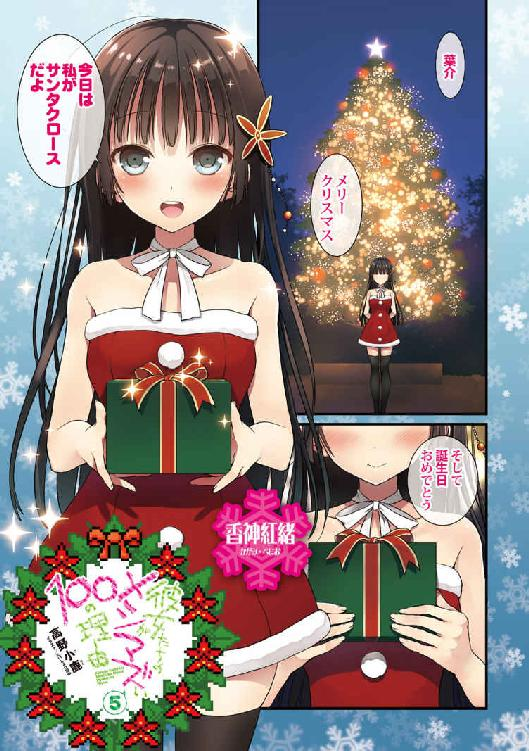

| 彼女たちのメシがマズい１００の理由５ (角川スニーカー文庫) | |
| 高野 小鹿 | |
| KADOKAWA / 角川書店 (2014) | |

彼女たちのメシがマズい100の理由5
高野小鹿

角川スニーカー文庫
本作品の全部または一部を無断で複製、転載、配信、送信したり、ホームページ上に転載したりすることを禁止します。また、本作品の内容を無断で改変、改ざん等を行うことも禁止します。
本作品購入時にご承諾いただいた規約により、有償・無償にかかわらず本作品を第三者に譲渡することはできません。
本作品を示すサムネイルなどのイメージ画像は、再ダウンロード時に予告なく変更される場合があります。
本作品の内容は、底本発行時の取材・執筆内容に基づきます。
本作品は縦書きでレイアウトされています。
また、ご覧になるリーディングシステムにより、表示の差が認められることがあります。
「......お？」
俺の口から小さな声が漏れた。そして、続けざまに。
「あ」
隣からも似たような類の言葉が生み落とされた。
ここのタイミング、この場所で、まさか出くわすとは思わなかった──それは互いにそういう意味の籠もった「お」と「あ」に違いなかった。
「よう」
「奇遇」
十一月某日の土曜日。もちろん学校が休みの日だ。愛内葉介は、クラスメイトの花菱カロンとバッタリと馴染みの本屋で出くわしたのだった。とはいえコーナーが隣り合ってはいるものの、お互いに丸っ切り違う内容の書籍を目当てにして、ではあるが。
「参考書か」
「そう」
ニコリともせずに花菱が僅かに顎を上下させた。そして、手に持っていた本の表面をススッと俺の方へと向けた。茶味を帯びたショートヘアーがサラリと揺れる。
見ると装丁は一色を基調にして、幾何学的な記号があしらわれたシンプルな一冊のようだった。と、そこで俺ははたと気付いた。コレ、受験生の間ではもはや定番となっている実践式の数学の参考書ではないか。
いや、だが待て。
......数学、だと？
「なぁ、花菱さぁ」
「なに」
「お前、数学要らねーじゃん。私文なんだし。俺もだけど」
眼を細め、半ば呆れた感じで尋ねる。
私立文系。
それはこの世で唯一「数学」という破滅の魔王と対峙せずに済む、ずば抜けた特権階級である。そんな俺達が数学の参考書をわざわざ本屋で開く理由など存在するわけもなくて......？
「なんとなく」
「はぁ？」
「なんとなく、懐かしいなと思って」
「......そーですか」
感慨深げな表情を浮かべ、花菱は、はふう、とため息を漏らした。
一方、俺は心の中で「こりゃあダメだ」と溢し、眼を細める。
そもそも今まで、まともに勉強をしていた期間がほとんど存在しないくせによく言うもんだ！ なんでそんな無駄に満足そうなんだよ、お前！
「ったく......」
バリバリと髪を搔き毟りながら俺は花菱の相手をするのを止めることにした。
というのも、花菱が何故、こんな思わせぶりな発言をするのかに俺は明確な心当たりがあるせいだ。
つまり、一月ほど前のウォーターパークでの一件。今までは絵に描いたようにダメダメでグータラで、喩えるなら寒くなったら「着る毛布」でも被ったまま登校しそうなほどの自堕落っぷりを発揮していた花菱だが、実はあそこで冥とやり合った後、恐ろしい変化が花菱の身に訪れていた。
なんと、あの花菱が──学校の勉強をするようになったわけで。
クラス一、いや学年でも五指に入るレベルのおバカっぷり（学力的意味で）を発揮していたのが噓みたいだ。最近は『これなら次のテストでは下から五十指ぐらいまでは狙えるかもしれない』と兄の冥が嬉しそうに語っていたのが記憶に新しい。
と、ここで花菱が、
「そういえば、愛内君は何でそんなもの読んでるの」
「そんなものって......これのことか？」
「そう」
花菱が俺の持っていた本を指差して言った。
何となく俺もさっき花菱がやったのと同じように、表紙の部分が見やすいようにススッと表面を向けた。ピシリとしたゴシック体で「London AtoZ」の文字。英国旅行初心者を対象にしたガイドブックだ。
「イギリス行くんだよ、俺」
「......ああ、そうなんだ」
花菱が気のない言葉を返す。「いつ頃行くの」
「クリスマスの予定だな。多分、三泊五日ぐらい」
「思ったより短い」
「姉さんも行くから、あまり長居出来ねぇんだよ」
「ふぅん......もしかして、ロンドンって凄く遠いの？」
「飛行機で十三時間掛かる」
「うわ......」
花菱が露骨に面倒臭そうな表情を浮かべた。そして。
「それって、愛内君の家、皆で行くの？」
「あー」
少しだけ考える。面子は俺、リリィ、姉さん、華凪......少なくとも愛内家で暮らしているメンバーは全員旅行に行くことになっていた。
「多分、そうなると思うけど」
「へぇ。というか、それって紅緒も行く奴だっけ？ 紅緒が言ってた気がする」
そして、プラスα。
──なんとも、よくぞご存知で。
俺は若干、後ろめたい気持ちになりながら答えた。
「......うちのお袋が誘ってきたんだよ。紅緒も」
「それ、結構珍しいと思う」
「まぁ、わざわざクリスマスに隣の家と一緒に外国に行くのは確かに──」
「そういう意味じゃなくて」
花菱が俺の言葉を遮った。俺は首を傾げながら、
「はぁ？ どういう意味で？」
「......愛内君、知らないの？」
「何をだよ」
「............本当に知らないとは」
ぐいと眉間に皺を寄せて、花菱が辛辣な表情を浮かべた。
ここ最近、花菱は人間として大分丸くなった（ような気がする）ので、露骨にガンを付けてくるようなこともめっきり減ったのだが、そうオセロの駒を引っ繰り返すみたいにコロッと人が変わるわけもなく、時々こうして隠し持った刃を覗かせることもある。
花菱がピシャリと言った。
「本場のクリスマスって、日本とは違う。その本にも多分、書いてある」
「む......？」
言われてみると違うかも、という感じだった。
無宗教国家である日本では、クリスマスは要は大騒ぎすることが目的だ。
本来のクリスマス的な「キリストが云々」という肝心要の部分は除外されてしまっているわけで、そりゃあまぁ大違いにも程があるかもしれない。
「あーなるほどな。アレか。宗教的な意味で......」
「それだけじゃなくて、」花菱が言った。「イギリスのクリスマスは、あくまで家族と過ごすものなの」
「ほう......」
健全で素晴らしいな、と俺は思った。日本のクリスマスは逆に「恋人と過ごさない奴は負け組プギャー」と言わんばかりの扱いだしなぁ。
「愛内君、不勉強。それぐらい知っているべき」
「ぐっ......!? お、お前だってどうせリリィの受け売りなんじゃ──」
「......!? そ、そんなことは......!?」
瞬間、花菱が視線を逸らし、すぐさま引き戻した。
が、既に遅い。その動作は、雄弁に真実を語っていたのである。
とても気まずい沈黙が流れた。
「......その、なんというか、」花菱が言った。「イギリス旅行のお土産、期待してる」
「分かった。ちなみに──食べ物でいいか？」
俺は答えた。表情一つ変えずに、花菱が即答した。
「もちろん、それ以外で」
「......だよな」
俺達にとって「イギリス」という国は、色々な意味で強烈な印象を残している。少なくともお土産に「飲食物」を求めることを絶対拒絶したくなる程度には。
「あまり拘らず、カルティエの何かとかでいいから」
花菱がふざけたことを言った。俺は肩を竦めて、
「おいバカ。ブランド物とかお前に買ってくるワケねーだろ──って、カルティエって確か、フランスじゃね？ 言葉の響きも、そんな感じだし」
「......じゃあ、ルイ・ヴィトン」
「それはまさに『ザ・フランス』だろ」
「............とりあえず、高そうなモノなら何でもいいから」
「分かった。クソ安そうだけどイギリスっぽいモノ買ってくわ」
大層不満そうに花菱が唇を尖らせた。
「甲斐性なし」
「......」
閉口、する。
間違いなく紅緒やリリィも土産を買って帰るだろうに、俺にまで何か買って来いと要求するとは──花菱カロン、なんてがめつい女なのだろう！
結果、花菱（と、そういえば冥にも）に対しては捨てられてもいいのでネタに走った土産を買おうと俺は心に強く誓ったのだった。
こうして、イギリス旅行への準備は着々と進んでいった。
◇ ◇ ◇ ◇ ◇ ◇
はずだったのだが。
「──は？ 行けなくなった？ マジで？」
「すまない。その、なんだ。年末はどこの業界も繁忙期だろう？ どうしても抜けられない仕事が急に回って来たのだ。色々と準備のことを考えると、さすがに海外旅行に行っている暇はなくなってしまった」
そんな出来事があってから、大体一ヶ月が経った頃だっただろうか。
つまり──十二月である。
花菱と書店で遭遇した日に購入した「London AtoZ」にも、何度も読み込んだ痕跡や付箋、ラインマーカーによる書き込みが随分と増えていた。
パスポートも取得したし、旅券も既に向こうから送られて来ている。後はキャリーケースに数泊分の荷物を詰めて飛行機の中で十三時間ほど暇を潰せば、もうイギリスに到着しているという寸法だ。
（ちなみに、ガイドブックに様々な書き込みを行ったのは、決して俺ではない。ガイドの購入者である俺は結局、コンビニで芸能週刊誌をパラ見するのと変わらない程度にしか本の内容に目を通しておらず、リビングに置きっ放しにしておいたところ、マメで真面目な女性陣が各自勝手に書き込みを行った結果だった）。
だからこそ、この『後はもう現地に向かうだけ』と状況が完璧に整ったところでもたらされた──龍子姉さんの発言は、まさに驚愕の一言だったのである。
「リュ、リューコ。それはどうしてもムリな仕事なのですか？」
動転した様子で俺の従姉妹──リリィ＝アップルガースが尋ねる。
けれど姉さんは依然としてとても重々しい様子で、
「ああ。オマエ達は知らないだろうし、知らなくてもいいことだが、雑誌業界というのは基本的には超ブラックなんだぞ。予定通りに事が進まないなんて、しょっちゅうさ。大体、私はまだいい方だ。特にガジェット系の連中は比ではない......」
非常に重々しい様子で姉さんが言った。
「そ、そうですか......それは残念です......すごく、すごく残念です......」
リリィがガックリと肩を落とした。
姉さんの方をまともに見ることが出来ないのか、碧色の瞳を憂いの色に染め、クリーム色の壁紙が貼られたリビングの壁の辺りに、意味もなく何度も視線を這わせる。
「うーん、でも姉さんが行けないなんて思ってなかったな......」
「困りましたね......」
隣に座る、我が家の困った妹──愛内華凪も眉を顰め、俺の言葉に相槌を打った。
あまりにも、切実な事態だった。
なにしろ保護者である姉さんが旅行をドタキャンするということは、保護者不在の状態で俺達はイギリスに行くことになるからだ。
もちろん、そこには里帰りになるリリィもいるわけだし、一度現地に着いてしまえば誰かが案内してくれるとは思うのだが......俺も華凪も生まれてこの方、海外旅行というモノをしたことがないので、どうしても緊張してしまう部分が多くあった。
それ故、旅慣れした龍子姉さんの存在は俺達の心の支えになっていた。『姉さんがいるし、何とかなるだろ。多分』という、兄妹ならではの「甘え」が存在したわけだ。
「いや、これは参った......」
が、そんな淡い期待は無残にも切り落とされることになった。
日本語は通じないし、英語はほとんど話せない（しかも、学校で習う「米国流」とは異なり、本家本元の「英語」である。数少ない使用出来る英語すら通じない可能性だってある）環境に放り出されることになってしまったわけだ。
──一大事発生、である。
「まぁ、そういうわけなので、出来れば香神にもこのことを伝えたいのだ。今日はもうこちらに来たりはしないのだったな？」
「えーと、多分」
姉さんの質問に曖昧に頷く。
既に時間は夕食時を過ぎて、外は真っ暗になっている。いくらお隣同士とはいえ、わざわざこっちまで来る用事も中々ないはずだった。
「そうか。では明日学校でこのことだけは伝えて貰えるか？ こればかりは早くに知らせておいた方がいい。香神が次に家に来た時に私の方から改めて謝罪をしようと思う」
「あいよ。それでいいと思うぜ」
「スマンな、三人とも。肝心な時に同行してやることが出来ずに......」
姉さんが小さく頭を下げた。それだけではない。姉さんは普段の尊大な態度とは打って変わって、本当に申し訳なさそうな表情を浮かべていたのである。
そんな風に謝られては、黙って向こうの謝罪をただ受け入れるだけ──というのはどうにも座りが悪い。結果、俺は大して気にしていない感じの口調で、
「仕方ねーよ。仕事が優先なのは当たり前だし」
「む......そう言って貰えると、有り難いが......」
「ヘーキです、リューコ！ なにしろ、イングランドはワタシの故郷ですから。ゼンゼン心配はいりませんヨ！」
「気にしないで下さい、姉さん......多分、大丈夫だと思います、多分......」
そして、すぐにリリィと華凪も笑顔で言葉を重ねた。何となくだが、俺と似たようなことを二人も感じたのかもしれないと思った。
と、そんな時だった。
「ん......」
「オヤッ、チャイムが......？」
甲高く突き抜けるような──ドアのチャイムの音が鳴り響いたのは。
呼び出し音。
つまり──唐突な夜間訪問者、である。
「今は......む、もう九時か。あまり感心出来ない時間だな」
姉さんが壁時計を眺めつつ、少し不機嫌そうに言った。
事実、夜の九時といえば大体の家庭が団欒タイムに入ってしまっている。家に電話を掛けるのすら若干躊躇う時間帯だ。当然、来客ともなれば言うまでもない。
──誰が、何の目的で？
「あ......とりあえず、ボクが出て来ましょうか......？」
「あー。いや、俺が出るわ。お前は座ってろ。どうせ回覧板か何かだと思うけど──」
カウチソファから華凪が腰を上げようとしたのを制止して、立ち上がる俺。
率先して来客の応対をする──とはいえ、これは別に俺が突然勤労の精神に目覚めたとか、そういうわけでは決してない。
ただ、こんな時間に客が来る、っつーのも少し変な感じがするだろ？
姉さんが真っ先に応対するパターンは基本我が家では無いので除外するとして、放っておくとリリィか華凪が玄関に行っちまう。それはあまり好ましくないと思ったのだ。
まぁ、いきなり暴漢が飛び込んで来たりなんてしねーと思うけど。ここはあくまで日本で、南アフリカとかじゃねーんだから。へーきへーき。
「誰だ、っと──あん？」
軽く呟きながら、俺は玄関のドアを開いた。
そして、思わず目を見開いた。
「こ、こんばんは、葉介」
「......へ？」
なんだかよく分からないが、そこには俺の幼馴染み──香神紅緒が立っていたのだから。
訝しみながら尋ねる。
「どうした？ こんな時間に来るなんて珍しいじゃん」
「う、うん。ちょっとね」
「ふぅん」
「夜分遅くにゴメンね。ちょっと、急いで伝えた方がいいと思うことが出来ちゃって。しかも、直接、口で」
「ほー、そりゃまた急だわな......まぁいいや。こっちも色々と手間が省けたし。俺もちょっと用事があったんだ」
非常に都合の良いタイミングだと思った。
姉さんのことを紅緒にも伝える必要がある。これは、早いに越したことはない。親しき仲にも礼儀あり、だ。
「え。そっちも何かあるの？」
紅緒が訊き返した。俺は軽く頷きながら、
「おう。実は俺も......というか、うちも？ 早めにお前に伝えといた方が良さそうなことがたった今、出来たところなんだよ。とりあえず中入れよ。寒いし」
ドアノブを握り直し、紅緒が中に入りやすいように玄関の戸口をグッと開いた。
十二月の夜だけあって、もちろん外は強烈に寒い。
開けた戸口から吹き込んで来る冷風に悲鳴を上げてしまいそうになる程だ。さすがにこんな寒空の下で長話をするわけにはいかない。ぶっちゃけ、クソ寒い。むしろ俺が紅緒を一刻も早く家に上げてしまいたかった。
「あ、うん。じゃあ、お邪魔するね......」
「......お前、何か暗くね？ どうかしたのか？」
紅緒を玄関口へと招き入れ、ドアをガチャンと締めながら尋ねる。
「ううう......やっぱり、分かっちゃうかぁ......」
マフラーを外しながら、紅緒がはふうと大きなため息を吐いた。押し込められていた艶やかな黒髪が波打つように広がる。
そして。
「......実はね。今更こんなこと言い出して本当に申し訳ないんだけど、」
どうしようもない程に、衝撃的な一言を吐き出すのだった。
「ゴメン──私、今度のイギリス旅行、行けなくなっちゃったみたいなの」
「はぁー......」
イギリス旅行一日目。十二月二十三日。
俺はイギリスのヒースロー空港へと向かう飛行機の中で、その日何度目になるのか分からない大きなため息を溢していた。窓際の席で頰杖をつき、視界に映るのは四角形の窮屈な窓枠に押し込められた雄大な青色。
空。
清々しいほどの澄み切った青空は、むしろ荒んだ俺の心には強烈な毒だった。
あまりに精神状態が陰鬱過ぎて、目の前に広がる青空が、まるで合成着色剤を塗りたくったアメリカンなケーキのようにすら見えて来た。
ああどうして世界はこんなに俺に辛く当たるのか......。
「兄さん......さっきから、凄いため息が......多いです......」
「いやな、華凪。さすがにコレはため息も増えるってモンさ。しゃーねぇよ」
「............いくら紅緒ちゃんがいなくても、ボクやリリィちゃんは一緒にいるんですからそんな落ち込まれると、切ないです......」
三人掛け座席の真ん中に座る華凪が、肩を落とし、悲愴な言葉を口にした。
その声量は機内であることもあって、限界までボリュームを絞った小さな声だ。けれど華凪が非常にクリアな声質をしていることもあって、その声は一字一句綺麗に俺の鼓膜に届いた。だから、字面だけでは伝わらない華凪の本心も筒抜けだ。
「切ない、ねぇ」
「そ、そうです......切ないんです......ふへへ......」
「......お前、スゲェ嬉しそうにしか見えないんだけど」
──しょぼーんとしているのは完全にポーズで、ぶっちゃけ今の状況で誰よりも歓喜しているのが華凪である、ということが。
「そ、そんなことありませんよぉ......」
話しながら「チラッ......チラッ......」と俺の方を窺う華凪の瞳は、俺の極めてブルーな心情とは対照的に、見事なまでの喜色に染まっていた。
唇はふるふると感動で震え、表情からは生命力と悦びが溢れている。普段の物憂げな雰囲気なんて完全に消失してやがる。
ああ......瞳に星マーク、もしくはハートマークすら浮かび上がりそうなテンションで紡がれる「切ない」という言葉のなんと薄っぺらいことか......。
ただまぁ、分からなくもない反応だとは思うんだけど。
──紅緒がイギリスに行けなくなるということは、華凪からすれば俺と一緒にいられる時間が一気に増えるということだから。
「はー」
何となく俺は華凪の隣、通路側の席にいるリリィの方に視線を移した。リリィはアイマスクを着けて、先程見た時と同じ体勢でくーくーと微かな寝息を立てて眠っている。
これこそがイギリスへのフライトにおける最も正しい過ごし方だ。
イギリスと日本は相当に離れた場所にある国だ。
二国間の時差が九時間もあることからも薄々分かることだが、飛行機という文明の利器を用いたとしても、片道でなんと十三時間（！）も掛かってしまう。
よくもまぁ、これだけ離れた国を相手にして、明治の頃の日本は同盟なんざ結ぶ気になったものだと感心しちまうね。あの当時なら、何ヶ月も船で揺られないとイギリスになんて行けなかったはずなのにさ。
つまり、イギリスに行くにはどうしても一日の半分を飛行機の中で過ごさなければならないわけで、そして忘れてはならないのが海外旅行における最初の関門......「時差ボケ」の問題がある。
時差ボケのメカニズムを具体的に説明するのは、数学の問題を解いてる気分になるので正直、コテコテの私立文系である俺にとっては気持ちの良いことではない。まぁ、要は日本を午前中に出発し、十三時間も飛行機の中で過ごして到着したはいいが、時差のせいで現地の時間はまだ昼の三時くらいで、けれど体内時計は完全に夜のソレで、身体はもうベッドに入るモードになっていて、クソ調子が悪くなる──みたいな話だ。
多分。
そして、数ある時差ボケ対策の中で、最も効果的で、単純なやり方──それが「ひとまず寝る」ということなのだ。
既に一度は「英→日」のフライトを経験しているリリィは、さすがにその辺りの対策はバッチリのようで、機内食の時間以外は機内では大体ずっと寝ていた。
一方、周りの人の迷惑になるので、俺達兄妹はお互い積極的に会話する──ということもなく、スマホで映画を観たり、持って来た文庫本を読んだりしていたわけだ。
が、やはり十三時間は......長過ぎだった。
フライトも後半に差し掛かると、持参した暇潰し用のアイテムにも何となく飽きてしまい、かといって変に目が冴えてしまったせいで俺も華凪も一睡も出来ず。
結局、俺達はさっきのような取り留めのない会話をたまーにしながら、ぬぼーと時間が過ぎるのを待つことしか出来なかったのである。
「えーと、そういえばどういう予定で四日を過ごすんだっけ？」
「兄さん、それを話すの四回目くらいですよ」
「確認だよ、確認」
「......まぁ、ボクは構いませんが」
華凪が顔を顰め、小さくため息をついた。
手持ち無沙汰になる度、俺が隙間を埋めるようにこの話題を蒸し返しているモノだから華凪も嫌気が差して来ていたのだろう。けれど、仕方ない。何となく訊きたくなってしまうのだから。だって、もう他に話すネタがない......。
「さっきも言いましたけど、一日目......というか、今日ですね。イギリスに着いて、迎えの方と合流した後、ボク達はリリィちゃんの家に向かいます。お父さん達が住んでるのはロンドン中心部のマンションですが、ボク達が寝泊まりするようなスペースはないのでリリィちゃんの家に厄介になるわけです。その日はそのまま寝てしまいます。
二日目からが本番で......ロンドン観光に行きます。どこに行くのかは......紅緒ちゃん達がいたら色々と回りたい場所をプランニングしていたと思うんですが、ボク達だけになったので案内してくれる人に完全に任せる方向に堕落しました......。
三日目はクリスマス当日なので、パーティをするんですが......二十四日の夜からもうミサに行くとか何とかリリィちゃんが......これも詳しいことは......。ただ、帰るのが四日目なのは間違いないです。帰りの飛行機の時間と相談しながら観光の続きです。帰国予定日は時差の関係もあって、二十七日になっています」
「なるほどな......」
頷く。何度聞いても二日目と三日目の予定が曖昧過ぎて、もはや笑えて来るわけで。
全部リリィ任せなんて酷いにも程がある。でも、俺も華凪もあんま歴史的建造物に興味ないんだから仕方ないじゃん！
これは本当に紅緒がいたらな、と心の底から思う。アイツはアレで結構ミーハーなところがある。観光名所なんかも好きなはずだ。絶対写真撮って来てね、とか言われたし。
何しろ紅緒を敵対視している華凪ですら、この旅行プランの中間部分がシロアリに食われたみたいにボロボロなのは気にしているようだった。
「ああ......紅緒に、何か買ってってやらねーとな......」
丁度、今回の旅は俺と紅緒の誕生日を跨ぐことになる。
誕生日の当日に日本とイギリスで、それぞれ約一万キロの距離差があるわけだから、落ち着いてその辺を整理するのは帰国後になる。ちなみに、俺はまだ紅緒の誕生日に何を贈るかは決めていない。せっかく旅行に行くのだから、向こうで良さげな物を見繕うのが一番いいのではないか、と思ったためだ。
『もしも、この場所に紅緒の奴がいたならば』という感想は、イギリス行きの機内で十数時間揺られた今も大して変わっていない。
そりゃあ別に紅緒がいたからといって、具体的に俺が何をしていた──という明確なビジョンがあるわけではない。けれど、この旅がより刺激的なモノになっていたであろうことは確かだった。
なにしろ、リリィと華凪と三人での旅行は「家族旅行」以外の何物でもないが、紅緒が混じったとすると、それは純度百パーの「家族旅行」ではなくなる。そりゃあ紅緒とも毎日顔を合わせているけれど、今回の旅行メンバーがガチで同じ家に住んでる人間オンリーというのは少し日常的過ぎるようにも思うのだ。
──Ｘデーはもう目の前だ。
その「Ｘ」とは何か。言うまでもない。誕生日のことだ。俺と、紅緒の。
俺の誕生日が十二月二十四日。紅緒の誕生日が十二月二十五日。
クリスマスイヴとクリスマス。
俺は今回の旅行が二つのバースデイを跨いだモノになることに、運命的な何かを感じていた。そこに期待と、かすかな決意を重ねていた。
イギリスとクリスマスと誕生日──この三つが融合した時、俺と紅緒の関係に化学反応が起こるのではないかと。むしろ、俺が何らかの反応を起こしてしまうのではないかと。
思っていた。考えていた。予感していた。
俺と紅緒の曖昧な「ナニカ」が、具体的な「ナニカ」に変わってしまう数日間になるのかもしれないと身構えていたわけだ。
「何買えばいいのかね......」
まぁ、全てパァなんだけど。
だって、紅緒は来ねぇんだし。何も変わりようがないじゃん。そりゃあダラけもするってば。緊張感とか、とっくに爆散して吹き飛びましたぜ。
......はぁ。
結果、仮にも海外に行くというのに、「普段の生活の延長」という色合いが途端に濃くなってしまった。非・日常感が見事に欠如してしまったわけだ。
まるで何とも塩気を欠いたイギリス料理のように。
............そう、これも憂鬱ポイントの一つだ。
料理。イギリス。
国家そのものが内包する──「メシマズ」という概念。
普通の観光客ですらイギリスに行くときは、それなりの「覚悟」を持って現地に向かうという。ならば、もはや宿命的なまでに「メシマズ」の呪いに掛かった俺は、どれだけの覚悟と共に渡英しなければならないのだろうか。とてもじゃないが、我が身は既に覚悟完了などと、おいそれと口に出せるわけもなかった。
紅緒を欠き、メシマズの予感は鳴り止まず、フライトの飛行機は退屈......初の海外旅行ならではの昂揚感も当然存在するのだが、頭の隅では、もはやこれは「巡礼」の旅ではないのかと言う気すらして来るのだった。
そう──メシマズの聖地とも言うべき、イギリスへの巡礼の旅である。
昨今の町おこしブームに湧く地方自治体にこんな形の聖地巡礼も存在すると知らしめたい気分だった。
だから、紅緒がこの場所にいたら──などと考えるのを止められるわけもなく。
まさにそれは仮定。絵空事。起こることのなかった一つの可能性という奴だ。同行する二人には本当に悪いのだが......。
そうなのである。
姉さんに続いて、紅緒まで「とある事情」から今回の旅行に参加出来なくなってしまったのである──しかも、とんでもなくアホみたいな理由で。
いやもうマジなほど、死ぬほどふざけた理由で！
ぼんやりと、俺は想起する。
あの日の、ワンシーンを。
◇ ◇ ◇ ◇ ◇ ◇
「紅緒の家のパパさんとママさんが喧嘩を......!?」
「うん......」
家に上がった紅緒が、とても気まずそうに小さく頷いた。
──愛内家のリビングは、ただならぬ雰囲気に包まれていた。青天の霹靂。全く予想だにせぬ旅行のキャンセルの連続ともなれば無理もない。
まさかの事態──姉さんだけでなく、紅緒までも予定していたイギリス旅行に同行することが出来ないと言い出したのである。
もちろん、この事実を聞かされた俺は、完全に気が動転してしまっていた。
だって、なぁ？ 比較したらマジで一目瞭然だぜ？
何と言っても『隣に住む幼馴染みも交えて行く三泊五日イギリス旅行』と『単なる三泊五日のイギリス家族旅行』では、ワクワクやドキドキの面で大きな違いがある。
もちろん、リリィと華凪のことを軽んじているわけじゃねぇぞ。
ただ、アレだ。実の妹である華凪と、既に同じ家で暮らし始めてから八ヶ月近くが経っていて、完全に家人と変わらないように思っているリリィのことを、そんな今更意識したりなんてしないっつーだけの話さ。
紅緒は違う。
色々と、別枠なのだ。
「夫婦喧嘩ね......そりゃあ、面倒だな」
相槌を返しながら、俺も顔を顰める。
親といえど人間なので、喧嘩の一つや二つぐらいする。ただ、逆に子供にとってコレほどうざったくて、面倒で、イヤーな喧嘩もそうそうないのだ。
喧嘩すると普段は誰よりも自分勝手なお袋が一方的にキレるだけで、親父は基本謝りまくるパターンばかりのうちですらそうなのだから、結構厳しい感じの紅緒の母親──耀子さんがキレたりしたら、もう香神家は相当ヤバいことになるに違いない。
──でも、一体なんでこのタイミングで喧嘩を？
というか、夫婦喧嘩と紅緒が旅行に行けなくなるのと、どんな関係性が？
「実はね。これ、凄く言い難いんだけど......」
紅緒が何とも呆れ返った表情を浮かべる。
俺はピンと来た。この顔──今まで、何度か見たことがある。
いつもニコニコしていて、温厚で、マイナスの感情をあまり表に出さない紅緒が、唯一と言っていいほど露骨に困った顔付きになる話題。
つまり、それは。
「今日になって、うちのお父さんがいきなり、駄々を捏ね始めたの。『耀子さん。今日、会社から帰る途中に思ったのだが、やはり日本国内ならともかく、嫁入り前の娘を海外旅行になんて行かせるのは不健全じゃないかな。しかも、あのクソ憎たらしい小僧──ゴホン。よ、葉介君も一緒にいるわけだからね。男もいるわけだよ。女子会じゃないんだ。泊まりでだぞ？ これはマズい。マズ過ぎるよな。耀子さんもそう思うだろう？ だから、な？ 紅緒、クリスマスはお父さん達と一緒に過ごそう。それがこの世で最も正しいクリスマスの在り方だ！ というか、頼むから行かないでくれ！ 行くな！ 行っちゃ駄目だ！』とか何とか......」
紅緒の父──香神氏の話題である。
「......相変わらず、俺は紅緒のパパさんに嫌われてんだな」
吐き出すように呟く。すると紅緒が真顔で首を横に振った。
「違う違う。お父さんは葉介を嫌ってなんていないよ」
「......へ？」
「嫌ってるというか、」紅緒が言った。「──憎んでる？」
「............」
もっと最悪じゃねぇか！
英単語にすれば「嫌う」も「憎む」も同じ「hate」ではあるが、明らかに「憎む」の方がおどろおどろしい怨恨めいた感情が渦巻いているように思えた。
更に物騒な単語の登場に自然と背中のトレーナーに汗が滲む。
毎度毎度思うことではあるが、俺が何をしたというのだ、香神氏。
「ベニオ。それでどうなってしまったのです？ これでケンカになるのですか？」
俺が香神氏の娘に対する溺愛っぷりに共感を抱いていた一方、その手の「父性愛」的な要素とは無縁のリリィが紅緒に尋ねた。
紅緒はこれに大きく頷いて、
「あ、うん。そうなの、リリィ。お父さんがいきなりこんなこと言い出したせいで、お母さんが完全に怒っちゃったの！ 最初は『あなた、そんなことまでわたし達が口出しする必要はないわ』って感じでお母さんも落ち着いていたんだけど、お父さんがまるで玩具屋の前で寝転がって暴れる小学生みたいに全く引かなくて......次第に──」
「............」
香神氏......娘のことが大切なのは分かるが、さすがにその娘から小学生扱いされるレベルで駄々を捏ねるのは父親としてどうなんだ......？
ここまで呆れた様子の紅緒の顔なんて、本当に久しぶりに見るぞ、俺は。
「はぁああ......困っちゃうよね。仮にもお父さんだって立派な大人なのにさぁ......そのせいで、完全に晩ご飯が台無しになっちゃうし。意味分かんないよ」
「晩ご飯が、ねぇ」
あまりにも不穏なワードの登場に、俺は思わず顔を顰めた。
それどころか頭に「香神家の」という所有格までくっついている始末。だが、ここで紅緒が今日の献立を語り始める展開だけは避けねばならなかった。何故って？ もしそうなったら、決め台詞のように紅緒はこう言うに決まってるからさ。
『じゃあ今度お母さんに作り方を教わって来るね！ 絶対おいしいよ！』
なんて、な。
「それで、もう後は凄いよ。お父さんがあまりにも情けないものだから、お母さんマジギレして荷物纏めて青森の実家に帰っちゃったんだもの」
「なっ──実家!? マジかよ!?」
「うん。家出て行っちゃって、さっき携帯に電話が来たと思ったら、新幹線の中だなんて言うんだよ！ 私、正直倒れそうになったよ。頭痛くて」
「ふむ......となると、香神が旅行に行けなくなった理由は──」
姉さんが訊いた。紅緒は真っ直ぐ頷く。
「はい。さすがにお母さんも大晦日ぐらいまでには帰って来ると思うんですけど、クリスマス前後となると少し怪しくて、そもそも私が旅行に行っちゃったらお母さんが帰ってきてても、間違いなくまた喧嘩すると思うので......すいません。こんなどうしようもない家庭の事情で、せっかく招待して下さったのに、ご厚意を無駄にしてしまって」
紅緒が小さく頭を下げる。
龍子姉さんも唇を横一文字に結び、首を横に振って、
「いや、謝らなくていい。それなりには仕方のない事情ではないかな」
「そ、そうですか？」
「まぁ、流石にお父上はもう少し自制するべきだとは思うが」
「ですよね......」
しゅんとなって紅緒がまたしてもため息。そして。「でも、こんなお父さんですが、今の状態で放置するわけにもいきません。今、お父さんが何してると思います？ お母さんが出ていった後、ヤケ酒始めちゃって酔い潰れて寝てるんです。いや、うちのお父さんって下戸なんで、缶チューハイ一本飲んだだけでダウンしちゃうんですけど......」
「「「............」」」
額を押さえながら、ドッと疲れが溜まったような虚ろな瞳で言った。
──これは、酷い。
そりゃあ紅緒も頭の一つも痛くはなるし、グッタリもするだろう。
とはいえ、結果的に香神氏は自分の奥さんを実家に帰し、どうしようもないほどの無様を晒すことで世話焼きの娘を日本に引き止めることに成功した──下手をすれば家庭崩壊、下手をしなくても父親の威厳が粉微塵に吹き飛ぶような奇行（そもそも香神氏に「父親の威厳」と呼べるようなモノが未だに残っているのかも正直定かではないが）で、捨て身の特攻と言わざるを得ない。
さすがにこれが香神氏の作戦だったとは思えない（思いたくない）が、回り回って紅緒のイギリス旅行は阻止されたわけである。
阻止、されてしまった。
そして──俺と紅緒のクリスマスをイギリスで過ごした結果、巻き起こるはずだった「とんでもないこと」は見事なまでに空を切る羽目になったのである。
◇ ◇ ◇ ◇ ◇ ◇
「おおお......」
そんなことを思い出していると、気が付けば飛行機は目的地に到着していた──わけではない。眠ってしまっていたのだ、俺も。いつの間にか。
ただし、その眠りは極めて浅いものだった。けったいな疲労感が全身を皮膜のように包んでいるのが手に取るように分かった。
ただ、それでも何とか十三時間のフライトを乗り切った俺達三人はイギリスの玄関口──ヒースロー空港に降り立っていた。
「に、兄さん......大変です......見たこともないくらい外国の人が沢山います......！」
「お、落ち着け、華凪！ むしろ外国人は俺達の方だ！」
「はっ......い、言われてみれば確かに......」
飛行機から出て来て、早速狼狽え始める愛内兄妹。
再三強調するが、俺と華凪は海外旅行の経験が皆無である。というか、そもそも大して旅行好きな人間ですらない。
生粋のバックパッカー気質である姉さんだけが例外で、そんな姉さんの提案で俺がまだ小学生ぐらいの頃は国内限定の家族旅行をする機会もありはした......ただ、姉さんや華凪が家を出てからはトンとご無沙汰になってしまっていた。
海外なんて完全な未経験だ。沖縄に行ったことがあるので、飛行機自体には乗ったことがあったのだが──
「二人とも、いきますよー。たちどまってキョロキョロしていては、他の皆さんのメイワクになってしまいます！」
「え。あ、うん......はい......ごめんなさい......」
「......リリィちゃんだけが頼りです」
完全に「外国」の空気に吞まれていた俺達に、ここで救いの手を差し伸べる天使が現れた。言うまでもなく我が家の良心であり、アイドルであり、狩りの方法を未だ習っていない仔猫並みに萎縮している俺達にとっての唯一の希望──リリィである。
「まずは、イミグレーションチェック......ええと、そう、『ニュウコクシンサ』をすませてしまいましょう！ こちらです！」
リリィがズイッと一歩、前に出た。そしてスタスタと軽快なブーツの音を立てながら、颯爽と歩き始める。右も左も分からない俺達を先導してくれるつもりなのだ。
そんなリリィを見て、俺は「おやっ？」と思った。
断っておくが、それは別にあまりにリリィが神々し過ぎて天使を通り越して女神に究極進化したとか、着ている臙脂色のダッフルコート（リリィが今年の四月に初めて俺と会った時に着ていたのと同じコートだ）の背中に天使の羽が見え始めたとか、むしろ俺の頭の中身が疑われるようなオカルトではない。
理由は至ってシンプル──この「リリィが俺達を引っ張ってどこかに連れて行く」という動作が非常に新鮮なモノに思えたからだ。
例えば、もしここに某アホ爆乳の斎藤オメガがいたとしたら、俺達に向かって多分こういうことを言うはずだ。
『ヒャッハー！ ついにイギリス到着です！ ヴィクトリアメイドの聖地巡礼！ ほらほら、葉介センパイ、カナギ！ 早く行きましょう！ 何ぼやっとしてるんですか！』
............みたいな。
どうよ。スッゲェ言いそうじゃね？
でも、リリィは違う。こんな「ガンガン行こうぜ」な感じではない。
確かに、四月五月の頃のリリィならば、そう言えなくもなかったとは思う。
この頃の彼女は好奇心の爆弾ともいえるようなダイナマイトガールで、事あるごとに俺に抱きついたり、興味を持ったところにドンドン突っ込んで行ったりと、いわば超アクティヴな「攻め」の天使だった。
ただ、夏場になった頃からだろうか。ちょっとだけ──リリィは変わったような気がするのだ。おそらくは日本で暮らすことに慣れたのが大きいはずだ。
あとは、そう......言語の問題もあるか？
リリィの日本語は相当巧みだが、若干覚束ない部分がある。
一対一の会話ならば、ほとんど不自由はしない。だが、フリートーク──つまり、複数人の人間が混じって会話する場合となると、自分から会話を引っ張るというのが苦手で聞き手に徹さざるを得なくなるシチュエーションが時々あったと記憶している。
だから、こうしてリリィが俺達を率先してリードしてくれるのは、何とも久しぶりに思えたのである。
今回は紅緒と龍子姉さんという我が家の精神的支柱が二本も欠けた状態の旅だ。
俺はてっきり「よくある家族旅行」になるとばかり思っていたのだが......どうも、色々と新鮮な体験が出来そうな気がするのだった。
そして実際──俺のそんな予感は大当たりだったわけで。
「ヨースケ、カナ。二つある列の短い方がわかりますか？ この『ＥＵ以外の国民用』の列で二人は入国審査をうけなければなりません。もってきたパスポートや書類を係の人にわたすと色々ときかれるので、その質問にこたえてください。ヒースローの審査は少しハードなのですが、落ち着いてやれば二人ならば大丈夫のはずです。オーケーですか？」
「「......」」
思わず、俺達兄妹は顔を見合わせた。
今日のリリィは一味も二味も違う──なんか凄いテキパキしてるぞ!? リリィが場を取り仕切ると、こんなにも流れが整然とした感じになるのか......!?
「......おう」
「......はい」
「なら、良かったです。あ、それと──」
ニコリと柔和な笑みを浮かべて、リリィが再度入国手続きについて話し始めた。
「たぶん、二人の方が審査は早くおわるはずです。なので、荷物をうけとってロビーでまっていてほしいのです。ワタシはこちら──『欧州連合市民用』の列にならばないといけません。こちらの『ターミナル３』はもう少し行かないとショップがないので、少したいくつさせてしまうかもしれませんが......いそぎますので、お願いします」
「............おう」
「............はい」
ガイドブックを持参し、一応の予習をして来たとはいえ、こうして見事な説明をされると感嘆するしかなかった。
この後、俺はガイドブックと英検三級レベルの英会話力を駆使し、何とか審査担当のイングリッシュジェントルマンを突破。
一方、臆病な華凪は見知らぬ外国人と一対一で質疑応答をしなければならないことに初めは大いに戸惑っていたが、そこは同じ親から産まれたとは思えないほど賢い自慢の妹である。それどころか華凪は高一のくせに「一級」を持っている。単に実戦経験が少ないだけで、落ち着きさえすれば軽い会話なんて屁でもなかった。
「はぁ。やっと抜けたな......っと、華凪。お前の鞄、これでいいんだっけ？」
「そうです、兄さん。ありがとうございます......混んでましたね。やっぱりクリスマス直前だからなんでしょうか？」
「かもなぁ。見るからに観光客って感じの人も多かったし」
何だかんだで入国審査を無事に終え、荷物を受け取った俺達は税関をパスしてリリィの指示通り、到着ロビーへとやって来ていた。あとはリリィが出て来るのを待ってから、出迎えの人間と合流して、ロンドン郊外にあるアップルガース宅に向かう手筈になっている。
誰が出迎えに来てくれるのかは聞いていないが、まぁうちの親は来ないだろうな、という謎の確信があった。親父はおそらく仕事だろうし（年末の商社だ。多分、マジで死ぬほど忙しいはず）、現地人でもないお袋が進んでやって来るとも考え難い。
「っと、そういや時計を合わせてなかったな──ええと............何時にすればいいんだっけ？」
時差のせいで現在時間が不明になるのは明らかだったので、今回の俺は腕時計を身に着けていた。すると華凪が左手首をくるりと回し、自身の手首を見つめながら、
「ボクのは合わせてあります。兄さん、十六時二十一分にして下さい」
「オッケー......よし、これで一通りは準備出来たな」
時計の時刻を修正し、若干の時差ボケでぶっちゃけまだ眠いこと以外の切り替えが終わった俺は、意気揚々とロビーを見渡した。
ヒースロー空港は世界四位の羽田空港よりも更に上、世界第三位の乗客者数を誇るイギリスの最も代表的な出入り口である。新宿駅やら渋谷駅やらの超混雑っぷりを何度も体験している日本人の目から見ても、非常に際立った存在と言える。
最近では日本にいても、外国人の姿を見かけることは決して珍しいことではなくなっていると思うが、やはり──その割合が完全に逆転してしまうと、正直気圧される部分があった。
何というか金髪な人は沢山いるし、背が高い人は多いし（女性でも華凪と同じくらい上背のある人がたまーに視界に入って来て、そんな人を見る度に華凪が妙に嬉しそうにしていた）、そして何より耳に入ってくる音がひたすらに英語ばかりで──目で、耳で、肌で、何とも形容しがたい「異国」の雰囲気がビンビンと伝わって来るのだった。
それに、ヒースローが非常に綺麗な空港であることも大きい。
他所の国だからバイアスが掛かってしまっているのかもしれないが、非常に色々な部分が洗練されているように思えた。特に今俺達のいるロビーエリアはすぐ近くにブランド品を扱うショップが軒を連ねていて、まさに優雅さと伝統の二つを兼ね備えた俺の中の「イギリス」という国のイメージにピタリと当て嵌まる。
しかし、初めて来て思うが、異国というのは......正直、足を踏み入れただけで、ちょっと緊張してしまう場所のようだ。
もしここで迷子になったりしたら、結構真面目に洒落にならないだろう。イギリスはそこまで治安の悪いイメージはないが、それでも日本と比べれば危ない部分も多いはず。そうなったら言葉も通じず、土地勘もない場所で一体どうすればいいのか......。
──ぶっちゃけ、下手をすれば死ぬ可能性すら、なくはない。
「............」
などと兄が結構シリアスに海外旅行の孕む危険性に怯えていた一方、うちの妹はそのような心配し過ぎな思考には一切縁がないようだった。
華凪はキュッと唇を結び、何とも落ち着いた様子で愛用のスマートフォンにヌルヌルと指先を滑らせては空港内の写真を撮りまくっていた。
ううむ、なんて普通の女の子っぽい行為だろう......それにこれさ、単に写真を撮ってるだけではない。華凪が風景に興味を持っている、ってことでもあるわけさ。
要するに、虫じゃないってこと！
華凪の最新型携帯に備わっている高画素カメラが昆虫撮影以外の用途に使用されたというだけで、俺はちょっと感動してしまうのだった。
と、そんなあまり一般的ではない感動に俺が浸っている時だった──
「あなたたちが、ヨウスケくんとカナちゃんですか？」
不意に、俺達兄妹の名前が耳に飛び込んで来たのは。
「え......」
すかさず俺は声の方を振り返った。そして、俺は大いに驚くことになる。
そこに立っていたのは予想だにせぬ人物──ではなかった。むしろ誰よりも「予想していた通りの人物」でありながら、遥かに「想像を絶する外見をした人物」だった。
つまり、どういうことか。
「ああ、やっぱり。あたっていたみたいですネ。二人とも、キョウカにとても良くにていますネ。すぐにわかりましたよ」
現れたのは一人の女性で、そして投げ掛けられたのは、日本語だった。
かなりナチュラルに日本語を話すリリィと比べても、その言語能力はほとんど遜色ないものだと思う。
ただ、俺達に最大の驚きをもたらしたのは、その流暢な言葉遣いではなくて、むしろもっと単純な部分──彼女が一体、何者であるのか、ということだった。
けれどもう、なんというか、一目瞭然だった。
だって、あまりにも分かり易過ぎるのだ！
説明なんて要らない。初対面であるはずの俺ですら、百パーセントの確信をもって、その事実を消化出来てしまう。
「あ、あなたはまさか......！」
必死に声を絞り出す。その女性はにっこり、と──とある誰かによく似た太陽のような笑みを浮かべ、そして小さく会釈をした。
「イングランドへ、ようこそ。二人とも。リリィの母のレニー＝アップルガースといいます。少しまたせてしまったみたいですね。ごめんなさい」
レニー＝アップルガース。
もちろん、その名前はリリィから聞かされていた。だが、まさかこんな......ここまでリリィにそっくりだとは、思わなかったのである。
そして、何より。
「そ、そんな......全然待ってなんていませんよ！ 着いたばかりです！」
「あら、そうでしたか。それなら、とてもよかったです」
「っ......！」
──こんなにもレニーさんが超ド級の美人だったとは知る由もなくて。
レニーさんの外見は、基本的には「色々とパワーアップしたリリィ」という印象だ。
例えばリリィは欧米の出身にしては身長が大分低めなところがあるが、レニーさんは逆に女性にしては結構上背のある方だ。それに、なんだ。どことは具体的に言わないが、ボリュームも間違いなく増している。
それと、身に纏っている雰囲気も結構違う気がする。
リリィのことを快活で天真爛漫と言い表すならば、レニーさんはたおやかで、おっとりとしている......という感じだろうか？ リリィも歳を取ったら、こんな感じになるのだろうかと思うと、少し不思議な気分になる。
──だって、今のリリィがレニーさんみたいになるなんて、ぶっちゃけ全く想像が付かないのだ！
五年経っても、十年経っても、リリィは相変わらず今みたいな外見で、今みたいにニコニコと優しい笑みを浮かべている気がしてならなかった。
............まぁ、そんな未来のことなんて、分かるわけねぇけどさ。
「あ......短い間ですが、お世話になります！ 愛内葉介です。っと、華凪──」
「お、お世話に......なります」
「いえいえ。こちらこそ、よろしくおねがいしますネ」
隣で一緒に呆けていた華凪の肩を小突き、俺達は揃って頭を下げる。
どうも華凪も俺と同じような感想を抱いていたようだ。
その辺の感想は性別関係なく......って感じかね？ まぁ、こんな感じのステキな大人の女の人なんて、ほとんど見掛けることもねぇしな。
「でも、驚きました。レニーさん、日本語お上手なんですね」
「キョウカ達にも同じことをいわれましたネ。ユキタカが家では日本語ばかりはなそうとするので、れんしゅうしました。それに家の中でワタシだけ日本語がわからないのも不便ですから」
ニッコリとレニーさんが微笑んだ。俺は感嘆しながら、
「へぇ......いや、凄いです。中々出来ないことだと思います」
実際、リリィは半分は日本人なわけだし、そもそも言語というものは小さな頃から練習すればするほど身につきやすいと聞く。悪くない学習環境であったはずだ。
だが、レニーさんは混じりっけ無しのイギリス人である。日本語の勉強を始めたのも成人してからのはず。大人になってからの語学の習得は容易ではない。それなのに、ここまで違和感なく言葉を話すことが出来るなんて正直驚きだった。
だって今から俺が英語のネイティブレベルになれるかといえば相当な無理ゲーに違いないわけで。『半年くらい時間を戻してあげるから、アメリカに行って語学留学でもして来なさい』とか言われたら、土下座してでも拒否するね、間違いなく。
「ママ！」
と、その時だった。
税関の方から、聞き慣れた透き通った声が響く。
俺は耳から入って来た言葉だけで「リリィの入国審査が終わったんだな」と認識し、そして俺よりも先にレニーさんが声のした方を向いて、喜色を浮かべていた。
いや、しかし長かったな、マジで。
多分、リリィの場合だと、余裕で一時間は掛かっているはず。こういうのもお国柄って奴なのかね？ 自分の国に入るだけでこんなに時間が掛かるなんて、イギリスっつーのは中々規律が面倒な国なのかもしれねぇな......。
などと考えながら声の方を振り向いた俺は正直、仰天した。
「あいたかったです、ママ！」
その時、既にリリィはぶわぁっと宙を舞い、ミサイルのように勢いを付けて相手に抱きつく──恒例の「リリィダイブ」を決行していたのだから。
抜群の飛距離、高度、そしてスピードである。
何と言っても、このダイビングハグは一度でもこのリリィを受け止めたことのある人間にしか分からない破壊力を秘めている。可愛さと物理的衝撃、二つの意味で、だ。
ちなみに俺はコレをやられる度、リリィの柔らかさだとかいい匂いだとか、その辺のステキな感慨と同じくらい、引っ越し作業で冷蔵庫やらテレビを運び過ぎて腰を壊す佐川の兄ちゃんのような感覚を味わっていたのだが──
「リリィ！」
「ママ！ ママ！」
レニーさんは、いとも容易くリリィのことを受け止めていたわけで。
もちろん、俺がリリィを受け止める時みたいに膝をガクガク震わせたりもしないし、額に汗を滲ませてもいない。レニーさんは柔和な笑みを浮かべたまま、腕の中の娘を見つめている。あんなに細い身体なのに......何かコツでもあるのだろうか？
「素敵な光景ですね......」
抱き締め合い、母国語である英語で会話する母子の姿を見ながら華凪が眼を細めて言った。俺は軽く頷いて、
「だな。リリィはこっちに帰ってくるのが、えーと八ヶ月ぶりか？ それくらいだし。結構な間が空いてるもんなぁ」
「はい。うちの家では絶対、こうはなりません......」
「そりゃな。でも、俺はともかくとして、別にお前はリリィみたいに抱きついてもいいと思うけど。お袋は喜ぶぜ、多分」
「えええ......」
華凪が普段以上に険しい皺を眉間に刻んだ。率直にイヤそうだった。「それは、ちょっと......遠慮したいというか......ボクのキャラじゃないというか......」
「まぁ、確かに。うちはそんな欧米的な家庭じゃねぇもんなぁ」
「......というか、」華凪が確信めいた口調で言う。「逆に母さんの方からボクらを見かけたら抱きついて来るような気がするんですけど......」
「......言われてみれば」
凄く、そんな気がして来た。
いや、でもな。さすがにうちのお袋といえど、他所のご家庭の皆さんがいるところで過度のスキンシップに打って出たりは......しないと思うんだけど......。
一応、うちは純・日本人な家なんだしさ。挨拶の時にハグしたり、キスしたりする文化も別に根付いてないし。いくら会うのが久しぶりだからってな、うん。
ん？
そういや、ハグといえば──
「......あん？」
アレ？ え？
噓だろ。いや、でも............おいおい──マジ？
「......どうしたんですか、兄さん？」
華凪が俺の顔を覗き込み、首を傾げた。
「い、いや、特には何も......！」
「そう、ですか？ 時差ボケがキツいのかとばかり......急に顔色が悪くなったように思えたので。ボクは案外平気なので、気分が悪くなったら言ってくださいね」
「あ、ああ......」
華凪の指摘に首を振る。
見事に顔に出ていた、らしい。
それもそうだろう。なにしろこのとある事実に気付いた瞬間、俺は胃袋の中をミキサーで搔き混ぜられたようなショックに襲われたのである。
当然それは時差ボケ、ではない。
いや、微妙にしか寝られなかったせいで絶好調とも好調とも言い難いコンディションであることは間違いないのだが──
「ヨースケ！ カナ！ おまたせしました！ ワタシの家にごあんないします！」
「家まではここから地下鉄をのりついでむかいます。はぐれると大変なので、しっかりとついてきてくださいネ。ヨウスケくん、カナちゃん」
久しぶりのスキンシップに興じていたリリィとレニーさんが地下鉄へと連絡する通路の方を指差しながら言った。華凪が先にこれに頷いて、
「あ......はい、分かりました。兄さん、地下鉄らしいです。行きましょう」
「お、おう......」
「兄さん、本当に大丈夫......ですか？」
依然として返事の冴えない俺を見て、表情を曇らせた。マズい。このまま俺がモゴモゴし続けていたら、リリィ達に俺の不調を訴えかねない様子である。
何とか、せねば。
「だ、大丈夫だっつーの！ 地下鉄だな？ よし、行こうぜ！ ほら、華凪。もっと写真撮りまくっていいんだぜ！ オメガとか友達に見せるんだろ、多分!?」
空元気──に見えないと良いな、と思いつつ、俺は一気にテンションを上げ、華凪の背中を軽く叩き、既に歩き始めていたリリィ達に続いた。
だが、どうもテンションを上げ過ぎたらしく、華凪は大分困惑した様子で、
「え、は、はぁ......まぁ......」
「よし、じゃあ色々撮れよ。あ、でもあまり人ばかり撮るのは止めた方がいいかもな。盗撮になっちまったら大変だし！」
「......兄さんが平気なら、それでボクは構わないんですが」
「平気だよ、スゲー平気。超平気」
「............ううむ」
「はははは！」
乾いた笑いを漏らしながら、俺は額から汗を垂らしていた。
──物凄く強引に誤魔化せた、気がする。
危なかった。
今回の旅行に同行したのが華凪とリリィだけで良かったという話だ。
もしここに紅緒（普段は極めてゆるふわだが、無駄に勘が鋭く、非常に厳しい追及が来ることも）か、龍子姉さん（俺の不審な態度に誰よりも目聡い）がいたとしたら、この場を乗り切ることは出来なかったかもしれない。
「ふふふ......こんなこと、知らないままの方が良かったぜ......」
──衝撃的な事実に俺は気付いてしまったのである。
スッと視線を上げ、俺達兄妹を先導するリリィの横顔を盗み見る。
リリィは隣を歩くレニーさんと軽快に難解な英語で会話しつつ、俺達が離れないようにチラチラとこちらに目配りをしてくれていた。だから。
「......！」
丁度、リリィの方を見ていた俺と、バチンと視線がぶつかった。
リリィはすぐさまにこやかな笑顔を俺に向けてくれた後、再度レニーさんとの会話に戻った。けれども、気付かなくていいことに気付いてしまった俺にとって、その笑顔はあまりにも眩し過ぎたのである。
渡英したばかりの俺を不意に襲った切ない事実とは、非常にシンプルな事柄だ。
きっかけはリリィがレニーさんと顔を合わせるや否や、ロケットのように彼女に抱きついたこと。
リリィのお家芸とも言えるダイビングハグ。
思い返せば、初めて会った時も、リリィはいきなり俺に抱きついて来た──あれが四月の出来事だった。それからもしばらくはリリィのスキンシップは中々大胆で、人目を気にせず抱きついて来ることもしばしばだった。
──じゃあ、最後に俺がリリィにハグをされたのって、いつのことだっけ？
そのことに気付いてしまって、俺はビビった。
そして少し、切なくなった。
「やっぱ、適切な距離ってモンが必要なのかね......」
──ここ最近、リリィに抱きつかれた記憶が全くないのである。
いつの間にか、俺はリリィのハグターゲットから外れてしまったらしい。元々が役得過ぎたこととはいえ、その微妙な変化はちょっぴり悲しい新事実だった。
何か、理由があるのだろうか。
非常に女々しい感慨に浸りながら、リリィ達に先導されて俺達はターミナルの外に出た。
十二月二十三日、イギリス旅行一日目。
現地に到着し、三泊五日のイギリス旅行がついに幕を開けたのだった。
「............」
ただし、この時の俺はまだ気付いていなかった。
紅緒が参加しなくなったことで見事なまでに腑抜けている俺とは違い、とある強い気持ちを胸に抱いて、この旅に向き合っている人物がいることに。
この生活が始まってから早十ヶ月。
誰よりも愛内葉介の近くにいたのが「彼女」一人だけではないということに。それは「彼女たち」であるということに。
場所はイギリス。
そのメシマズの聖地とも言える場所で、忘れられないクリスマスが訪れる。
ヒースロー空港のターミナルから地下鉄のピカデリー線へと乗り継いだ俺達が次に到着したのはキングス・クロス駅という何とも荘厳な名前の駅だった。
この名前にどこかで聞き覚えがあるとすれば、それは勘違いなどではない。この駅は何を隠そう、日本でも非常に有名な「某魔術学校」への始発駅となっているのだ。
九と四分の三──つまりは、いわゆる「聖地」というわけだ。
当然、その本場であるイギリスにおいては超絶人気を誇る「巡礼スポット」となっているらしい。全世界共通でファンのやることは変わらないのだな、などと俺は少し感心してしまった。
地理的に見ると、このキングス・クロス駅はロンドンの中心部から若干離れた場所にあり、ロンドン郊外にあるアップルガース家にはここから更に列車を乗り継いで行くことになった。
そして全く時間通りに来る気配のない列車を乗り継ぎ（時刻表通りに列車がやって来るのが当たり前な日本は世界でも特異な国らしい）、クリスマスイヴイヴの雑踏を搔き分けながら、一時間以上掛けて俺達はようやくリリィの実家──アップルガース家へと到着したのだった。
「ここがリリィの家かぁ」
「ハイ、そうです！」
他所の国に来れば様々なことが自分の国と違って当然で、住居事情はその最たる例だろう。最近は日本でも西洋風家屋が増えてはいる。けれど、やはり本場のソレは別物だった。
「それほど新しくも古くもないのですが、ステキな家です」
「へぇ......結構広いね。部屋も沢山ありそう」
アップルガース宅は言うなれば、ミニチュアのウサギでも住んでいそうな家だった。
明るい暖色に染められた壁、日本では考えられない鋭角的な三角の屋根。それが門から見て二つ並んでいる様は、どことなく積み木で作った家を想起させる圧倒的なシルバニア感を放っていた。ロールケーキのように真ん丸に、そして丁寧にカットされた生け垣に囲まれているのも趣き深い。見慣れたツツジの生け垣とは違った可愛らしさのようなモノを感じた。
「そうですネ。お隣は違う人達がすんでいるくらいなので、部屋はたくさんあります」
「え、隣に？ なんか意外だな。これって一戸建てじゃないの？」
「ハイ。ワタシの家は『セミ・デタッチ』ですので」
「セ、セミ......？」
何とも聞き慣れない単語である。シェアハウスとはまた違うのか？
もしやイギリスでは一軒家にしても、いくつか種類があるのだろうか......と、ここでこの言葉に過剰過ぎる反応を示す者が約一名。華凪だった。
「ハッ──せ、蟬がどうかしたんですか!? まさか、隣に蟬が住んでるんですか!?」
「「......」」
時差ボケが時間差で襲って来たらしく、普段以上にぬぼーっとした眠そうな眼をしていた華凪がいきなり覚醒した。酷い聞き間違えにも程があった。
俺はため息を一つ溢し、呆れながら虫狂いの妹を窘めることにした。
「......あのさ。お前、蟬じゃねーよ。セミだよ、セミ」
「はい。ですから」
華凪が首を傾げる。「蟬、ですよね？」
「............いや、だからセミだって。セ、ミ。発音が違うだろ？ っていうか、今が何月だと思ってんだよ。セミなんざ皆、土の中だろうが」
「ああ......はい、そういう」
ようやく意味を理解した華凪の瞳が一瞬で濁った。というか、さっきまでの眠気九十九パーセントの寝惚け眼に戻ったとでも言うべきか。
「アハハ......セミ・デタッチというのは左右対称につくられた建物に、それぞれちがう家族がすむ──というタイプの家ですネ。イングランドは家や土地が高いので一戸建てよりも二戸建ての方が主流なのです。もちろん『蟬』は関係ありません」
「へぇ......何か随分詳しいんだね、リリィ。ちょっと意外だ」
「そうですか？ でも、家の話はイングランドではかなり一般的なのです。例えば家をかいそうしたり、かったりするバラエティ番組は日本よりも大きな人気があります」
リリィが苦笑いを浮かべながら解説してくれた。
一戸建てならぬ、二戸建てってわけかい。
日本では元からあった家を増築して二世帯住宅にする時ぐらいにしか使わない言葉のような気がするが──イギリスではソレを他人同士でもやってしまうらしい。
実際、かなり恩恵は大きいはずだ。土地代にしろ建物代にしろ、これが二つの家庭で折半ともなれば相当な費用の節約になる。
「そんな住宅事情まで違いがあるなんてなぁ。お、確かにあっち側にも玄関がある。本当に建物が左右対称になってて、それぞれに違う家族が住んでるわけか......」
「............ぐぅ」
「って、コラ！ 立ったまま寝るな華凪！ フラフラしすぎだ！」
「すいません、急に眠気が......そもそも今が真冬である以前に、それどころかイギリスにはセミがほとんど生息していないことを失念するとは......」
「お、おい！ 危ねぇな！」
時差ボケと飛行機疲れのせいで華凪の身体が本格的にグラグラし始めたので、慌てて俺は背中から腕を回してその両肩を支えた。
そして、これが結構重いのだ。
意識が朦朧としている人間の身体は妙に重く感じられるという謎の法則だ。それに加えて華凪の体重がその長身に見合った立派な数字であることも大きいだろう。我が家の食卓に並ぶ極めてマズいメシの数々に、味以外の理由で唯一顔を顰めるのが華凪なのだ。
こんなこと華凪に言ったら絶対泣いちゃうから言わないけどな。
「おやおや、これはいけませんネ。いそいでベッドの準備をしますね」
「す、すいません。お願いします」
「イエイエ。リリィ、ヨウスケくんたちを中に案内してあげてくだサイ。ワタシは二人のベッドの支度をしてきます」
「ハイ！ わかりました、ママ！」
言いながら、レニーさんは微笑を浮かべて、一足先に家の中に入って行く。リリィも俺達に軽く手招きしてから、
「ヨースケ、カナ！ どうぞ！」
レニーさんの後ろをトテトテと追い掛け、家の中へ入って行った。
ふむ。
とりあえず、華凪を寝かせてしまった方がいいだろう。紅緒と姉さんが来られなくなってしまったので予定が多少変わったのだが、どちらにしろ二十三日はアップルガース宅に着いたら、さっさと寝てしまうことになっていた。夕食も機内で取っているし、それは向こうも承知していることのはずだ。
そういえば、お袋達は............えーと、別にこの家に厄介になってるわけじゃねぇんだよな。まぁ、当たり前だ。いくらうちの親がどうしようもないとはいえ、夫婦揃って弟夫婦のところに一年も厄介になるほど面の皮は厚くない。
というか、厚くあって欲しくない。
親父の赴任先がロンドンの中心部にあることもあって、二人はちゃんと賃貸マンションを借りてそこに住んでいるはずだ。アレ、そういえばお袋達は今はどこに──
「あらあら、やっと来ましたね！ 随分遅かったじゃないですか、葉介！ 華凪ちゃん！」
などと、考えながらアップルガース宅に足を踏み入れた時だった。
酷く、聞き慣れた──けれど、何とも久しぶりに耳にする、非常に喧しい声が、真っ先に俺達へと降り注いだのである。もちろん、その声の主とは。
「二人とも、お母さんですよ！ 感動的ですね！」
──母、である。
それ以外の言葉は必要ない。
今年で結構な歳になるはずなのに何故だか妙に若々しく、日本にいる頃はメディアに登場する度に「美人すぎる料理研究家」の名前をほしいままにしていたくらいだ。
だが、肝心の俺達子供にとっては、あまりにも面倒過ぎる人物──愛内京佳、その人だったわけで。
「げ......」
「うわ......」
へにゃへにゃになっていた華凪がのっそりと顔を上げ、名前を呼んだ相手を確認するや否や、糸が切れたかのように、がっくりと頭を垂れた。
──兄妹の呻き声が見事に重なった瞬間である。
ちなみにリリィだけは目を輝かせて『ワゥ、キョーカです！ お久しぶりです！』などと非常に嬉しそうにしていた。なんてええ子なんや。
「ちょっと二人とも！ なんですか、その反応は！ お母さんなんですよ!? 葉介！ もっと感動しなくちゃダメじゃないですか!?」
自身の子供達に杜撰にも程があるリアクションを取られたお袋は、年甲斐もなく腰に手を当ててぷりぷりと怒りながら激昂した。
「いや、だって来る前にも電話したじゃん......別によくね......？」
「会うのは久しぶりじゃないですか！」
「久しぶりだけど、親と会って感動するって年頃でもねぇだろ。歳考えろよ」
「な、なんてことを言うんですか......恐ろしい子です！ 是非とも産みの親の顔を見てみたいものですね！」
「......」
「多分、世間で今流行の『美魔女』とか呼ばれてそうな素敵な女性に違いありませんね」
「............」
絶対ツッコまねぇぞ、絶対だ。俺はわざわざお袋と漫才をするためにイギリスに来たわけじゃねぇ。本来なら紅緒と誕生日を..................あー。
もうヤダ。
「そうだ、華凪ちゃんなら分かりますよね、この気持ち！ 同じ女ですものね！ 華ー凪ーちゃーん？ お母さんですよー？」
困ったことに、もう日もとっぷり暮れて来た時間だというのに、お袋のテンションはとにかく無駄にクソ高かった。いや、違う。単にこれが普通なだけなのだ。
年中こんななのだ。うちのお袋は。
「あの、お母さん......」
「なんでしょう、華凪ちゃん！」
俺に身体を支えられたままフラッ......と顔を上げた華凪が、まるでどこかの激辛娘のような酷い目付きを携え、答えた。
「ボク、眠いんですけど......」
「あらあら！ そうですね、長旅でしたもんねぇ......おや？ 華凪ちゃん、また随分と背が伸びたんじゃないですか？ 健康的で素晴らしいです！」
「............お母さんなんて、大嫌いです......具体的には紅緒ちゃんぐらい嫌いです......」
「ええええ!?」
「兄さん......こんな人は放っておいて、布団につれていってください......」
華凪は家に入ってすぐのところに立っていたお袋に背中を向け、息も絶え絶えといった様子で俺の胸元にすっぽり収まりながらガラガラ声で囁いた。
言う迄もないが、華凪に対して「大きくなった」は禁句である。
大人からすりゃあ、ついポロッと口から出ちまう言葉なのかもしれねぇし、華凪の大きくなる速度は図抜けているわけだから、言いたくなるのも分からなくはないが......。
まぁ色々と、迂闊過ぎるのだ。うちの母親は。
「か、華凪ちゃーん......？」
「嫌いです。ボクをこんなに大きく産んでしまったお母さんを呪わざるを得ません......」
「ありゃりゃ......嫌われちゃったみたいね......」
すると、お袋の表情に僅かな陰が差した。
バウンドするゴム毬みたいに軽やかだった声のトーンも、まるで針でつついたかのようにパチンと弾ける──何となく、気まずいムードが流れる。
「ぅ......」
俺の胸元に収まったままの華凪も、このお袋の変化を敏感に感じ取ったようだ。押し潰したような微かな呻き声が漏れた。
むむ......。
さすがに数ヶ月ぶりに会った母親に、この態度はありえなかったかもしれない。兄妹揃って寝起きみたいな状態とはいえ、確かにこれではお袋があまりにも──
「い、いや、別にそんな深い意味があるわけじゃ」
「そ、そうです。そこまでマジにならなくても......」
などと、狼狽えた俺と華凪が揃って弁解の言葉を口にした瞬間だった。
「──じゃあ、こんな冷たい子供達は放っておいて、リリィちゃんと仲良くしましょうか！」
「ワゥ!? キョーカ、なにをするんですか!? くすぐったいです！」
「......は？」
ニヤリと笑い、お袋は背後からリリィにガバッと抱きついたのである！
「いいのいいのー。大体、この子達は母親の有り難みってモノがまったく分かってないんだから！ やーん、リリィちゃんったらお肌スベスベでふわふわ！ ホント可愛いわぁー」
「や、やめてください！ ワタシはドールではありません！」
「お人形さんみたいに可愛いからいいのよ」
「そ、そんな......！」
「まさかの紅緒ちゃん欠席なんだし、リリィちゃんくらい、ねぇ。私に優しくしてくれてもバチは当たらないと思うのよねぇ。娘と息子はすっごい冷たいし。まったく」
「「............」」
リリィを弄びながら、チラッとお袋が俺達兄妹を皮肉たっぷりの目線で見る。そこには沈痛な雰囲気など微塵も垣間見えない。この母親、全然落ち込んでなんてねぇ！
と、そこで。
「キョウカ、人の娘をオモチャにするのはやめてくだサイ」
寝室の準備をしに行っていたレニーさんが、二階から降りて来る。あれだけ玄関口で大騒ぎしていたのだから、向こうにも聞こえていないわけがなかったのである。
もちろん、レニーさんは自分の娘が義姉（うちの親父の方が兄なので、つまりレニーさんが義妹ということになる）に良いようにされているのを見過ごすわけもなかった。
しかし、お袋は依然として腕の中のリリィを抱き締めながら、
「オモチャになんてしてませんよぉ、レニー。でもリリィちゃんが可愛いから仕方ないじゃないですか。うちの子達と違って」
「ヨウスケくん達がですか？ そんなことないとおもいますよ。とてもスナオないい子たちではありませんか──」
レニーさんが俺と華凪の方を見て、小さく微笑んだ。
「そうですよネ？」
「ッ......!!」
俺は悟った──リリィが天使だとするならば、その母親であるレニーさんは、いわば女神なのではないのかと。
ある種の上位互換的な存在というわけだ。明るく快活なリリィが年月を経て落ち着くことで、女神的な存在へと進化する──ついさっきはあまり現実感のなかった変化が、ここに来て急に有り得ることのように思えて来たのだった。
「じゃあ、そろそろ本題にもどりましょう。カナちゃん、ベッドの用意ができたので、一緒に上にいきましょう。一人であるけますか？」
「はい、大丈夫です......ありがとうございます......」
「リリィ。カナちゃんの荷物をもってきてくれますか？」
「わかりました！」
そうして、レニーさんとリリィに連れられておねむな華凪は二階へと上がっていった。
──結局、一階には俺とお袋だけが残されることになる。
「中々、上手くやってるみたいですね」
口元に微笑を携えながら、お袋が言った。
「......そうかぁ？」
「そうですよ。安心しました。ちゃんと華凪と仲直り出来たんですねぇ」
「まぁ、結構大変だったけど......」
「そりゃそうでしょう！ まさか私も『娘が息子のことを好き過ぎる』なんて理由で家族会議を開くなんて思ってませんでしたもの！ そういうのはエッチな本を見つけた時だけで十分だと思っていたんですけどねぇ。時代がデジタル主流になり過ぎたせいで、そういうアナログなハプニングに遭遇出来なかったことだけは親として心残りです」
ちなみにコレは四年前の華凪が色々と荒れていた（と言って正しいのか？）時期、我が家で突発的に開催された家族会議を指す。
こんなことをお袋は偉そうに語っているが、終始『え、ちょっと何この展開意外過ぎて面白いんだけどワクワク』みたいな表情でニヤついていたのを俺は鮮明に記憶している。
俺は子供ながらに、うちの親父はどこが好きでこの母を選んだのか、一人ブチギレて怒鳴り散らす龍子姉さんの罵声に怯えながら、考えていたものだ。
とはいえ、現在の華凪との関係は............うん、相当に良好じゃないか？
ぎこちなさも消えたし、色々と馴染んだし、どう見ても兄妹っぽいと思うし。唯一、問題があるとすれば......そうだな、「抜かれたかもしれない」ということだけだろう。
何を抜かれたのか。別にやましい意味で言っているわけではない。
──身長、についての話だ。
ここ最近、密かに怪しんでいたのだが、さっき抱きつかれた時、いよいよコレは誤魔化しが効かないのではないか、という気分になった。
依然として、我が妹は成長期真っ盛りである。この事実だけは否定しようがない。
「もういいよな。つーか、俺も疲れたし、そろそろ寝るわ。お袋は──」
「ああ、私はシティーの方にある家に帰ります。二人を出迎えるために、こちらにお邪魔していただけですので」
「あっそう......悪かったな。リリィと違って可愛げなくて」
「いえいえ。うちの子の愛想が良かったら、気持ち悪いですもの──あ、そうでした」
お袋が思い出したかのように、ポンと掌を叩いた。
「忘れるところでした。葉介達が来るのを待ってる間に電話があったんです」
「電話？ いやさ。それは俺じゃなくてレニーさんに言うべきことじゃねーの？」
お袋が首を横に振った。
「ところが、そういうわけでもないんですよ。葉介達は、明日はロンドン観光に行きますよね？ それって誰と行くことになってますか」
誰と、って言われても......？
「えーと、リリィが案内してくれるはずだぜ。さすがに、そこまでレニーさんのお世話になるのは悪いし。だから、俺とリリィと華凪の三人じゃねーの？」
すると、お袋が声を潜めて言った。
「──もう一人来る、って聞いてませんか？」
「へ......」
「さっき、その子から電話があったんです。なんでも『お昼頃にノッティングヒル・ゲート駅のＢ出口の辺りにいるようにとリリィに伝えなさい！』だそうですよ？」
俺は思わず訊き返していた。
「命令、されたわけ？」
「ええ、間違いなく」
「......意味分かんねーんだけど」
「私も分からないので、これは丸投げします。とにかく、伝えましたからね？ ちゃんとリリィちゃんに教えてあげてください」
「いいけど、そもそもソレって誰からの電話なんだよ。電話の相手は？」
「ああ、これも忘れるところでした──」
そう言って、お袋がサラッと口にしたのである。
「電話の相手は『グロリア＝アップルガース』と名乗ってました。女の子の声でしたね」
あまりにも、意外過ぎる名前──いや、苗字を。
◇ ◇ ◇ ◇ ◇ ◇
旅行二日目。十二月二十四日。
日本ではここからクリスマスを跨いだ連休、ひいては大晦日と正月を含む冬期休暇へと突入する前の楽しいイベント、クリスマスイヴである。
ただし、俺達が今いる場所は日本ではなく、英国。
──本格的なイギリス観光の幕開けである。
「ここが国会議事堂とビッグベンですネー」
「ほー」
「......ちょっと小さめで可愛いですね（パシャパシャ）」
「ビッグベンの高さは九六・三メートル！ 国会議事堂の正式名称はウエストミンスター宮殿。昔はここが王宮だったのです！」
早朝。
一日目にすぐさまベッドに入ったこともあってか、俺達の身体を覆っていた時差ボケの皮膜も大分消え去った感じだった。
まず俺達が最初に向かったのはウエストミンスター駅からすぐ、イギリスにおける永田町と東京タワーの集合物とも言うべき、国会議事堂＆ビッグベンだった。
俺は腕を組み、何とも感慨深げに歴史に溢れたゴシック式の建造物を見上げ、華凪は仏頂面のままスマホを掲げて写真を撮りまくっていた。
ちなみに俺も紅緒に写真を頼まれていたのだが、華凪の撮ったデータをコピーして貰うのが一番ではないか──という意見に達し、パシャパシャは控えることにした。一応、姉さんのコンデジを借りて来てはいるのだが......いやはや、写真ね、そんなに撮るの好きじゃないんすよ。ええやん。そういうのが好きな女子に任せた方が。うむ。
「なんか思った以上にカッコいいな。東京タワーとは違うな」
「伊達に世界遺産ではないようです......」
「東京タワーもステキだとおもいますよ？」リリィが言う。
「そうかぁ？ なんか無機的じゃん、それに電波塔だし。こっちは時計塔だもん。オシャレな感じがするよ」
ガイドさんなリリィも一緒に並んで、ほえーとオールドロンドンの象徴を眺めた。
ちなみに俺が英国ガイドブック「London AtoZ」を所持していることもあって、リリィの解説はかなり簡易的だった。
特に国会議事堂とビッグベンなんて名所中の名所に関しては、地元民よりもガイドブックの方が詳しいのは当然だった。俺だって外国人に東京タワーの解説をしろと言われても困っちまうしな。地元知識はもう少しミクロな場所で生きるものに違いない。
「次はウエストミンスター寺院ですヨー」
「へー」
「......白い（パシャパシャ）」
そんな感じで俺達兄妹は金髪美少女ガイドさんに率いられて、名所巡りを始めた。
ウエストミンスター寺院はこれまたゴシックな装い溢れる真っ白い建物だった。
議事堂とビッグベンは外から眺めるだけだったが、こちらは入場料（ここで俺は渡英して初めて「ポンド」を使用した。入場料は十ポンド、日本円にして一六〇〇円。ここ最近のポンド安でこれなので、数年前は二五〇〇円近かったと思われる。高い）を払って中に入った。内部は撮影禁止だったので、華凪は不服そうだったが。
そして次に訪れたのが、
「こちらがバッキンガム宮殿です。衛兵さんの交代パレードもとても有名です」
「おお、これがあのバッキンガム......」
「イギリスの建物って、日本より背が低くていいですね......（パシャパシャ）」
何とも「ロイヤル」な香り漂う場所だった。
バッキンガム宮殿。
これくらいは俺もガイド無しでもどういう建物なのか知っていた。イギリスの国王が住んでいる場所だ。皇居的存在なわけだ。ただし、宮殿の前はクリスマスイヴということもあって、議事堂以上に人でごった返していた。
あまりに人が多いので、こちらのロイヤル建造物の周囲は絶対マラソンコースにはなっていないのだろうな、などと俺は勝手に想像する。
「......うーん」
しかし、この辺りで問題が発生する。
──しかも、二つも。
というのも、バッキンガムを訪れ、衛兵パレードを見物し終えた頃になると、普段は曇天、曇天、雨、曇天という感じのロンドンの空模様に若干の青色が差し込んで来た。
昼になった。
つまり、それは。
「なぁ、リリィ。そろそろノッティングヒルの方に行った方がいいんじゃない？」
「オゥ......」
約束の時間。
昨夜、お袋が受けた電話の主は「グロリア＝アップルガース」と名乗り、何とも不躾なメッセージを残していった。
お袋が帰ってすぐ、華凪を寝かしつけて戻って来たリリィに俺はこのことを伝えたのである。すると、リリィの反応はあまり芳しくなかった。
『なんと、グロリアが......』
開口一番がコレだ。あのリリィが人の名前を聞いていきなり顔を曇らせたのだから、相手がタダならぬ人物であることは明らかだった。まぁ、苗字が同じなのだから親戚か何かであることだけは間違いないと思うのだが──ううむ。
それに、そのグロリアというのがどんな人物なのかと尋ねても、リリィは教えてくれなかったのだ。『明日、どちらにしろ会うから』という理由で。
約束の時間はすぐそこに迫っている。
これが一つ目の問題。
厳密なダイヤには詳しくないが、バッキンガム宮殿などのあるロンドン中心部からノッティングヒル・ゲート駅は若干離れた場所にある。乗り継ぎのタイムロスや運行時間が超適当な電車事情も考えると、そろそろ移動を始めた方がいいはずだ。
「ムムム......そう、ですネ。では、そろそろノッティングヒルにむかいましょうか」
唇をとがらせ、少しだけ難しい表情を浮かべたリリィが首肯した。
「そうしよう。けどさ、その前にお願いがあってさ......」
「オゥ？」
そして、これこそが、二つ目の問題。
「朝から何も食べてないから、腹減っちゃってさ。そろそろ、メシにしない？」
「ス、スイマセン！ 朝からバタバタしてしまって、ブレックファストをたべる時間がありませんでしたからネ......！」
──メシに、ついて。
いかにここが聖地であろうとも、人間が活動していくためにはエネルギーの摂取が欠かせない。そろそろ、俺も足を踏み出さなければならないだろう。
本場の、メシマズという奴に。
謎めいたリリィの親戚の正体と共に。
そして、俺達は出会うことになる。
「つきました。ここがノッティングヒル・ゲート駅です」
アーチ形の天井が広がる大きなプラットホームを抜けた先、地上へと繫がる階段のすぐ側に、一際注目を浴びる容姿をした女の子が立っていた。
どう目立つのか。
単純だ──カワイイのである。
とにかく、相当なレベルで。
「おっそいデース!!」
髪は生まれつきの金髪が多く存在するロンドンの街でも、思わず目をやってしまうような鮮明な金色を肩口で切り揃えている。身体付きはリリィを更に一回りは小さくした感じで、雑踏の中に踏み込めばすぐさま見失ってしまいそうなほどに小柄だ。
けれど、彼女が持つ存在感は、それを決して紛らわせてしまわない。
とにかく、際立っている。
まるで星の海の中、爛々と輝く恒星のように。
「あ......グロリア、久しぶりです！ 元気そうでなによりで──」
彼女の存在に気付いたリリィが、ピョコンと会釈をした。
──が、ここでとんでもないことが起こる。
本当に、信じられないような出来事が。
「グロリアが元気かどうかなんて、どうでもいいデス！ リリィのくせにグロリアをこんなにまたせるなんてどういう『リョウケン』デスか!? チョームカつきマス！」
「オゥ......そ、それはその、スイマセン......」
「謝ってスむならポリスはいらネーんデスよ!!」
──なんと快活に挨拶したリリィを、その少女はいきなりカタコトの日本語で怒鳴りつけやがったのである！ しかも「チョームカつく」などと一時代前のガングロ女子高生みたいな小汚いイントネーションでもって！ いや、しかもコイツのことをリリィはグロリアって呼んで......？
「ンだよ、ガキじゃねーか」
ぽつり、と本音が溢れた。
確かに、その子は可愛かった。とても頭の悪そうな言い回しにすると「チョーカワイい！」となる。けれど、子供である。どう贔屓目に見ても中学生くらいだろう。
というか、これは小学生に違いない。
だって、顔は可愛いがあまりに身体が小さ過ぎる。一四〇センチないんじゃねーか。イギリス人で、ここまで小柄なら小学生だろ、多分。龍子姉さんより明らかに低いし。
ソレにしても、ナマイキな子供だぜ。
『リリィのくせに』だぁ？
我が家の天使に向けて、このガキはなんつー口を利いて......。
「オイ、そこのトーヘンボク。グロリアはしっかり聞きマシたよ」
「は......!?」
見ると、腕を組み、凄まじく苛ついた様子でガキ──グロリア＝アップルガースが俺のことを見上げていた。グロリアがキレ気味に言った。
「ダレがガキですか、ダレが。見るに、オマエがうわさの『リーフ』デスね。なんとも想像以上の『フツメン』ではありまセンか。ギリギリ五点ぐらいデスか。ごみデスね」
リーフ......リ、リ、リーフだと!?
実際、「ヨウスケ」という名前に「葉」の文字を使うのはちょっと珍しい。だから小学生の頃の話だが、俺には名前をからかわれまくった経験があるのだ。
そして、その当時の呼ばれ方というのが──
「なっ──て、テメェ、なんでいきなり人を採点してやがるんだ!? しかも、ソレは俺の中で忘れ去りたいあだ名ナンバーワンなんだぞ!?」
「ウッセーんデスよ!! このリーフ！ リーフ！ リーフ！ コッチが『ガイジン』だからってニホンゴつかって舐めてんじゃねーぞ、デス！ グロリアはニホンのスラングにはチョー詳しいんデスから！ ふざケた口利くと、はったおすデスよ!?」
「こ、コイツ......！」
確信する。
コイツはただのガキではない──超が付くぐらいの立派な「クソガキ」だ！
俺達の口論の間を縫って、リリィがとっても申し訳なさそうな様子で一歩前に出た。そして俺と華凪の顔を見つめながら、
「ヨ、ヨースケ......カナも。しょうかいしますね。ワタシの従姉妹のグロリアです。今日は一緒にロンドンの街をまわらせてあげてください。お願いします」
「従姉妹......!?」
「ハイ。普段、伯母さんたちはバーミンガムの方でくらしているのですが、クリスマスの時期になるとロンドンの家でパーティをやるのが毎年恒例なんです」
「あ......た、確かに家族でやるとは聞いていたけど──華凪、知ってたか？」
「い、いえ......ボクもそこそこぐらいしか準備はして来なかったので......姉さんや紅緒ちゃんなら普通に知っていたのではないかと思うんですが......」
これは俺と華凪が揃ってルーズな性格なのが大きかったと思う。そうか、リリィが一人っ子なのは知っていたが、従姉妹みたいな相手はいたわけか......。
と、ここでグロリアが、
「リリィ、おネガいする必要なんてありまセン。断られてもグロリアは......シット、断るケンリなんてネーと思いますデスけど、グロリアは勝手についていきマスから」
「んなっ......！」
「す、凄い柄の悪い子ですね......リリィちゃんやレニーさんとは全然タイプが......」
横柄極まりない英国少女の登場に、気圧された様子で華凪が小さく呟いた。
すると。
「──は？ オマエ、ショージキ『イマなんつった？』ってカンジなんデスが？」
「えっ......」
ギロリ、と。
クソガキが、数十センチは身長差のあるはずの華凪を凄まじい目付きで睨みつけたのである。
そして、いきなり次の瞬間、テレビ番組の司会者のように大きく両手を広げると、
「オウ、なんてことデショー！ イマ、グロリアはとてもとても驚きマシた。だって、ビッグベンが喋るとはおもいまセンでしたから！」
酷く「外人めいた」大袈裟な仕草で、とんでもないことを言い出したのである！
「ビ、ビッグベ──!?」
華凪が目を大きく見開き、肩を震わせた。
グロリアは衝撃を受けている華凪を鼻で笑い飛ばすと、歯を剝き出しにして非常に柄の悪い笑みを携え言った。
「そーデスよ！ そこのノッポのテメーに言ってんデス！」
「あ、ああ......の、ののの、のっぽ......ボ、ボクが......!? ふぇ、ひ、ひ、ひ、ヒドイです......ヒドすぎます......！ ビ、ビ、ビッグベンだなんて......ボ、ボクの身長は九六・三メートルもないのに......!! う、うわあああああああ......」
「フン。そんなにデカいのに、ビービー泣いてみっともない奴デス。しかもジョージかっつーんデスよ、その喋り方。イライラするデスね。グロリアは大きくなってもこんな風には絶対なりたくありまセンですヨ」
言うまでもないことだが、ビッグベンとは今見物して来たばかりのロンドンにおける「高さ」の象徴で──って、あああああ、華凪が泣き出しちまった！
──全方位爆撃にも程がある。
吊り上がった苛烈な目尻、小さな唇からは尖った八重歯。
とても綺麗な日本語を使うリリィやレニーさんと違って、発音やらイントネーションは滅茶苦茶、その代わり異様に罵倒語や流行語の語彙だけが豊富......。
一瞬で吞気極まりなかった俺達の旅は、しっちゃかめっちゃかになってしまった。
このガキは現代に蘇った口喧嘩バージョンのジャック・ザ・リッパーか何かだとでも言うのか。触れるもの全てを傷付けるキレたナイフか何かなのか!?
なんてこったい。
最近の華凪は精神的に成長して、そんな簡単に泣いたりしなくなっていたのに、ソレをまさか「ビッグベン」と「のっぽ」というツーフレーズだけでいとも容易く打ち破るなんて──このガキ、あまりにも性格が悪過ぎる！
本当に、こんなのが女神のようなレニーさんと、天使のようなリリィと同じ血を引いている親戚だと言うのか。到底信じられないことだった。
むしろ、魔法陣から無関係に召喚した小悪魔とかの方が説得力がある......！
「ほら、テメェらいきマスよ！ せっかくノッティングヒルに来たのに、ちんたらしてたら良いモノがなくなってしまうデス！ リーフもビッグベンもさっさとするデス！」
リリィの手を取ってグロリアが足早に階段を登り始める。
ピンと、来る。
さっきまでリリィの態度が優れなかった理由は、コレだったのだ。
心優しいリリィは従姉妹である彼女のことも大切に思っているのに、あまりにこのクソガキが無礼者過ぎるため、俺達に会わせることを躊躇って──
「グロリア、全然かわってないですネ......」
「ボ、ボ、ボクはビッグベンなんかじゃないですぅうううう......ひぐっ......ぅああ......」
リリィも華凪も、ついさっきまでと様子が完全に変わってしまっている。
まったくもって、平和ではない。
「お、おい！ 行くってどこに行くつもりなんだよ！」
「決まってんでショーが！ まさかノッティングヒルが『恋人ごっこ』をするところだとでも思ってんデスか？ 今日は土曜日！ だったらやることは決まってマス！」
グロリアがチラリと八重歯を覗かせながら、強い語調で言った。
「『ポートベロー・マーケット』です！ ロンドンで一番大きなストリートマーケットをこのグロリアちゃんが案内してやるってんデスよ、これから！」
──なんてこった。
こんなガキに仕切られたら、まったりダラダラな「英国家族旅行」だなんて言ってらんなくなる！ いけない、俺がリリィと華凪をこのクソガキから守らなければ......！
グロリア＝アップルガース。
あまりにも苛烈過ぎる少女の登場に、俺達のイギリス旅行はいきなりトップスピードで回り始めるのだった。
「へぇ......これが......」
勝手に進んでいくグロリアに済し崩しの形で率いられ、俺達はノッティングヒル・ゲート駅から出てすぐの場所に展開する「ポートベロー・マーケット」に到着していた。
では、そもそも「マーケット」とは何か？
日本語に直訳すれば「市場」。まず頭に浮かびそうなのは漁業関係の卸売りをやっている場所だ。具体的には築地だとか焼津辺りだろうか。
もしくは単に「マーケット」ならばそれはつまり「市場」、株式関係の単語を想像するケースも考えられる。しかし、最も日本人にとって馴染みの深い「マーケット」といえば、一つしかない。
フリーマーケット。
学校や公園などの公共スペースに一般人が様々な品物を持ち込み、売り買いをする様は全国津々浦々の場所で散見出来る。
イギリスにおける「マーケット」も、これに近いモノだと思っていい。
正式には「ストリートマーケット」と呼ばれるコレは、ロンドン市内のそこら中で連日開催されている。
そして、この「ポートベロー・マーケット」はイギリスで最も有名で、最も巨大なマーケット............らしい。
「──つまり、デス！ ロンドンは『伝統とトレンドが交差する街』と呼ばレルことも多いのデスが、同じくらい『文化と民族が交差する街』でもあるわけデス！ その何よりも分かりヤスい場所が、マーケットになるっつーわけデス！」
先頭を行くのは、未だにリリィの手を握ったままズンズンと前進するグロリアだ。
グロリアはリリィが大きく見えるほどに小柄な（一四〇センチ強の姉さんより間違いなく小さいのだから、下手をすれば一四〇センチ以下しかない）チビガキなので、歩幅も非常に狭い。せっかせっかと足を動かしているが、進むペースはそんなに速くないため付いていくのは難しいことではない。
「マーケットね......なるほど、確かにすげぇ......」
そして、ノッティングヒル・ゲート駅を出てから、北へと向かってすぐ。
凄まじい人の流れに乗って数分歩いた辺りで「マーケット」は突如として姿を見せた。
日本における商店街のように看板が出ていたり、分かり易くエリアが区切られているわけではない。いきなりある区画から露店が出現し始めるわけだ。
というのも、ポートベロー・マーケットは土曜日限定開催のため、本来の姿はオシャレな高級住宅街らしいのである。
それが、毎週土曜日になると──ノッティングヒルは変化を遂げる。駅からポートベロー通り沿いに、数え切れないほどの露店が姿を見せるのだ。
「日本のフリマみたいに、地面にシートを敷いて売ってるわけじゃないのか。結構、ちゃんとした店なんだな」
「ああ、ハイ。『ストール』ですネ」
「ストール？ あの身体に掛ける奴じゃなくて？」
「アハハ、ちがいますヨ。ストールは商品をならべるための台のことです。この辺りはアンティークゾーンですネー」
俺の呟きにリリィがすかさず解説を入れてくれた。
アンティーク......へぇ、この辺りにあるモノ全てがアンティークなのか。それはちょっと意外な気がするぞ？
元々、俺の中には「アンティーク＝お洒落＝高級品」というような図式があった。
それに加えて、愛内家はお宝と全く縁がない一家である。
うちには横山大観が手掛けた掛け軸も知人の借金のカタに貰って来た茶器もないし、せいぜい家に飾ってあるのは姉さんが海外旅行で買って来た、先住民族達が崇めるナゾの神を象徴する置物ぐらいのモノだ。
けれども、
「銀食器とかグラスとかだけじゃなくて、子供のおもちゃ箱に入ってそうなブリキのガラクタとかコインとか......へぇ、アレはカードか？ 海外にもカードってあるんだな」
ポートベローの「アンティークマーケット」は、一味も二味も違った。
それでもまず視界に入って来るのは、アンティークの王道とも言うべき陶磁器と銀食器だ。
特にイギリスで陶磁器といえば、俺ですら知っている「ウェッジウッド」みたいなブランドもある。白色、青色、赤色と鮮やかな意匠が施された陶磁器が所狭しと展開しているストールの上に並べられている。
しかも、驚くのはその値段の安さと、そして逆に高さ。
日本で買ったら数万は下らないような豪勢で巨大な大皿が小学生の小遣いと変わらない値段で売られているかと思えば、逆に百均ショップで扱っていそうなただのフォークとスプーンが目玉が飛び出るような価格で売られていたりする。
陶磁器と銀食器が目立つとはいえ、アンティークゾーンに並んでいるモノは枚挙に暇がない。山のようなアクセサリー、見るからに贋作めいた絵画、古地図、古びた女優のポスター、民俗人形、ブサイクなぬいぐるみ、アンティークドール、数ポンドで売られるロレックスの腕時計などなど......。
非常に歴史のある道具も多く散見出来た。陶磁器なんかには例えば「Victorian」と書かれた紙が添えてあるモノもある。
コレはソレらが使用された年代を表しているようだった。ヴィクトリアンっつーとヴィクトリア朝だ。つまり、百年から二百年以上前の代物ってことらしい。
おいおい、マジ？
「良さそうなモノがあるならば、さっさと買えばいいデス。でも、値切るのを忘れンじゃねーデスよ。向こうもディスカウント上等でやってンデスから」
「値切るなんて、怖いです......」
「ハッ！ そんなことも出来ネーなんて、本当にビッグベンはダメな奴デス！」
「あぅううう......」
グロリアに恫喝された華凪がビクンと肩を震わせ、涙目で俺の背後へと隠れるように滑り込んだ。
さっきからずっと、こんな調子である。
華凪は完全にグロリアに怯えてしまっていた。まさに蛇に睨まれた蛙という奴だった。
龍子姉さん以上に身長差があるグロリア相手にいいようにされる様子は、兄の俺から見ても、もうちょっとどうにかならんものかと──いや、待てよ。
逆に、小さいから余計に駄目なのか？
生まれてから散々姉さんに説教されて来た華凪にとって「小さい相手＝怖い」という図式が刻み込まれているのは想像に難くなかった。
とはいえ、
「おいコラ。その辺にしとけよ、クソガキ。華凪がイヤがってんじゃねーか。子供だからって何言っても良いと思うんじゃねーぞ」
こんなにもあんまりなあだ名で妹が呼ばれるのを、黙って見ているわけにもいくまい。
「──はぁ？」
グロリアが首をガクンと横に傾け、俺の顔を真っ直ぐグイッと睨みつけた。
こんなにも半グレ的な柄の悪い仕草がピタリと嵌まる英国美少女というのも、そうそういないに違いない。というか、コイツ以外にいて欲しくねぇ。
グロリアが唇を尖らせ、言った。
「そう言いながら、オマエもグロリアのことを『クソガキ』呼ばわりしているデハないですか。ぶっちゃけ、『ナンダコノヤロウ』ってカンジなのデスが？ 敬意と親しみを込めて『グロリアちゃん』と呼べデス。日本人は礼儀正しいのデハ？」
「グロリアちゃんだぁ？」
ちゃん付け、だと......。
............。
いや、ここでこのガキに折れるのはマズくね？ 俺が心底そんな風にコイツのことを呼びたくないというのもあるが、何よりも絶対舐められるし、増長されちまう。
コイツは人が下手に出れば間違いなく調子に乗るタイプに違いない。
拒否だ拒否。
吞めるか、そんな条件。
「そんな呼び方はお前みたいに、可愛げのない奴に使うもんじゃねぇ。大体、まずはそっちが年上の人間を『オマエ』だとか『リーフ』だとか言うのを止めるべきだろ」
「ダレが可愛げがないデスか！ オマエの方がよっぽど失礼デス、リーフ！」
「だからリーフって呼ぶの止めろって言ってんだろうが！」
互いに罵り合い、睨み合う俺達。
実はノッティングヒル・ゲート駅を出てから、こんなやり取りが何度もあったのだ。
その度、俺達はストールの品々を見るのを中断して口喧嘩を始めるものだから経過時間の半分くらいが俺とグロリアの口論で占められていたのである。
──大体、コイツの日本語は何なんだ？
日本に来た留学生に遊びで変な単語を教える、というのは実際よくある話だ。けれどグロリアの語彙に関しては、むしろ真っ当な単語の方が少ないくらいである。
どういう環境で日本語を勉強したんだ、実際？
「ふ、二人ともそれくらいにして、お店をみてまわりましょう......！ ホラッ、もうアンティークゾーンを抜けて、フードゾーンにはいりますヨー？」
そこで、リリィが仲裁に入った。
これも数回目の出来事だ。俺とグロリアが喧嘩をし、華凪が怯えるだけの現状、この争いを諫めることが出来るのはリリィしかいなかった。
「フンッ！ リリィも、せっかく帰って来るなら、もっと性格の良い相手をつれてくるべきだったデス！ コイツ、失礼過ぎデス！」
が、どうもコレがグロリアからするとあまり面白くなかったらしい。
ずっと握ったままだったリリィの手を離し、頰を膨らませて狭い歩幅を気持ち大きくして歩くペースを上げた。
俺はようやく解放されたリリィに近付いて、尋ねる。
心優しきリリィといえど、このガキに好感を抱いているようには到底思えなかったからだ。その辺りだけは、はっきりさせておく必要がある。
「ったくあのガキと来たら──なぁリリィ、大丈夫か？」
「オゥ？」
しかし、意外なことに。
「ワタシは全然平気ですヨー。というか、なにが大丈夫なのです？」
「へ。なにって......」
リリィの笑顔は、別に全然曇ってなんていなかったのだ。
「ワタシから二人に謝りたいです。グロリアはちょっとだけ過激な子なので、色々と大変かもしれないのですが、あまりおこらないであげてほしいのです」
「ちょっと、ねぇ......」
「とてもそうは思えませんが......」
対照的に顔を顰めざるを得ない俺達兄妹。
リリィはかすかに笑みを溢しながら、言った。
「グロリアは、悪い子ではありません」
「いや、凄い悪い子にしか見えないんだけど......」
「それはちがいます！ グロリアはちょっとみにつけた日本語が特殊だっただけです！」
キュッと両の拳を握り締め、頑なにリリィが主張した。
意外な展開だ。
てっきり、リリィにとってのグロリアはヤンチャ過ぎて手を焼いている苦手な親戚に過ぎないのだとばかり思っていたのだが......オレの勘違い、ってわけか？
ふむ、確かめてみる価値はありそうだ──
「お......？」
リリィに力説され、もう少しグロリアと人間的なコミュニケーションを取ってみようかと俺が微妙に決断を下した時だった。
その決意をいとも容易く保留にする光景が視界に飛び込んで来たのである。
「うお！ 急にメッチャ食べものの店があるぞ!?」
──俺達一行は、フードゾーンに突入したのである。
なにしろ、ここにやって来るまでに結構な距離を歩いて来ている。
アンティークゾーンに入ってから、通りにして二つ分。時間にして......フラフラしていたため、こちらはあまり正確なところが分からない。
ただし、間違いなく──凄い光景だった。
「え、ここってイギリスだよな......？」
ぽろり、と俺の口から紛れもない本音がこぼれ落ちた。
言うまでもないが、俺はこのイギリス旅行に一つの確固たる決意を持ち込んで来ている。その思いを一言で纏めるならば、この言葉。
──イギリスは、おいしくない。
世界中の料理を対象にして「料理がマズい国ランキング」を作ると、とりあえずノータイムで一位がイギリスに決定するのは恒例の流れだ。スポーツでも政治でも一番になりたがるアメリカですら、この戦いには大差での二位を甘んじて受け入れ白旗を揚げるといえば、その凄さが分かるものだ。
何故、イギリスの料理がマズいのかは、その理由すら一つではない。
環境的、宗教的、政治的......奇跡的なまでに尽く悪効果をもたらす理由が絡み合い、育まれ、そして誕生したモンスター。
世界一のメシマズ大国、メシマズの聖地とも言える場所......当然、そんな国を愛内葉介などというメシマズに呪われてしまった男が訪れれば、そこには悲劇しかない──
はずだったのだが。
「フフン、そんなの当たり前デス。リーフの顔についテいる目は、どうやらジェリービーンズかナニカのようデスねぇ」
「い、いや、だってお前......」
グロリアがナチュラルに煽って来るが、言葉は耳をスルッと通過した。
スルーだ。余裕で。
「──イギリスなのに、こんなウマそうな食べモノが並んでるってアリなのかよ!?」
こんな戯言にキレている場合ではないのだから。
圧倒的な光景だった。
最初に俺を驚愕させたのは、色彩豊かで見事なまでに食欲をそそる露店の顔ぶれだ。
アンティークゾーンは数百メートルに亘って、さまざまな骨董品を扱うストールが並んでいたわけだが、フードゾーンもその基本的な流れは変わらない。
ただ、アンティークゾーンはストール以外にも通りに面した場所にアーケードを構えている店が多いのが印象に残っていた。一方、こちらのフードゾーンはその大半がストール、出店である。つまりマーケットの開催日に合わせて、多くの料理人達がこのポートベローにわざわざ足を運んで来ている、というわけだ。
通りに面した食べモノの露店──というと、日本人的には縁日やお祭りの際に展開される屋台が一番馴染み深い。
俺も丁度、二、三ヶ月前の文化祭で、出店が通りに立ち並ぶ光景は目撃している。とはいえ、残念ながらちょっとやそっとのクオリティでは、このポートベロー・マーケットのフードゾーンに対抗するのは難しくないか、と思うわけで。
──国際的に見ても、料理の美味しい国だという認識の日本と、極めて料理がマズい国であるイギリスという差があるにも拘わらず！
「リーフはグロリアの言ったコトを、ナニも聞いてなかったようデスね」
「あぁ？ どういう意味だよ」
「そのままの意味デス」
グロリアがまるで自分のことのように、得意げに言った。
「ロンドンは『文化と民族が交差する街』と」
「む......」
「グロリアのいう通りなのです。イギリス料理はあまり評判がよくないものも多いのですが、だからといって他所の国の料理までマズくなるわけではありませんから」
「他所の国の料理......!?」
リリィの言葉で、色々な線が繫がった。ふと、どこかで聞いた、海外旅行者に向けたとっておきの格言が頭を過ぎる。
曰く──食に困ったらマクドナルドならば世界中どこにでも店がある、と。
つまり海外に行った際、絶対にその土地の食べ物だけを食べて生活する必要はどこにもないということだ。
例えばイギリスではインドと中国、つまりカレーと中華が非常にポピュラーな料理であることは広く知られているし、ＥＵ加盟国である以上、イタリア＆フランスのような世界有数のメシウマ国を有するヨーロッパの食材が安い価格で入って来るのも間違いない。罷り間違ってもイギリスは大国。他にも世界中の様々な国の商品が輸入されてくる。
──この国には、絶望だけしかないわけではない。
「ポートベロー・マーケットのフードゾーンでは、色々な国の料理をたべることができるのです。別にイングランドの食材しか扱っていないわけではないのです」
「おおお......！」
圧倒的だった。
ゾーンの入り口に入ってすぐのストールはオリーブ専門店だった。
オリーブは日本では調理油として使用されることの方が多く、実を食べる習慣はあまり根付いていないが、ヨーロッパではかなりポピュラーな食べ物だ。
緑と黒の鮮明な印象にヴィネガーの香りが風に乗って、鼻腔をツンと刺す。
木桶に入ったグリーンオリーブとブラックオリーブが山盛りに積まれていて、中の種を刳り貫き、サーモンやニンニク、仔牛に生ハムなど様々な食材をペーストとして詰めたモノなどが売られているようだった。
その他にも、多種多様な菓子やパンも非常に視覚的な印象が強い。
雪のように白いクリームやパウダーシュガーをあしらったクレープにケーキ、ドーナツや他にはキャロットを使用した紅いカップケーキなどもある。バスケットに積まれたフランスパンは傍目にも非常に堅そうで、見ているだけでカリカリとした香ばしい味わいが口の中に広がって来るようだった。
赤や黄色、薄紫など色鮮やかな果実の存在も忘れてはならない。生鮮食品は輸入以外のモノの割合も増えるようで、お国柄もあってベリー類の充実っぷりには眼を見張る部分があった。甘い物以外も充実していて、じゅうじゅうと刺激的な音を立てながら調理の実演販売をしているジャーマンソーセージの魅力といったら筆舌に尽くし難いものがあった。
そう、見た目や食感、音だけではなく、香りも一級品だ。特に焼菓子に塗られた焦がしバターの香しさは、ジューシーな肉の焼ける匂いと双璧をなすモノがある！
そして、これらの要素を更に高めるスパイスが存在した。
空腹。
──俺は今日、朝起きてからまだ何も食べていない。
自然と口の中に唾が溜まり、自然と喉がごくんと鳴った。
「そうか......リリィは俺達に『イギリスにだって美味しいモノがあるんだぜ』ってことを教えるために、ポートベローに連れて来てくれたわけか......！ なんだよ、イギリスにだってこんな美味しそうな物を売ってる場所があるんなら先に言ってくれればいいのに！」
「アハハ。ワタシはポートベローにはあまり来たことがなかったもので」
「......え。そうなの？」
「ハイ」
リリィが頷く。「ポートベローはロンドンの代表的マーケットですが、ワタシの家からは少し遠いのです。市内には他にもマーケットは沢山ありますし、そもそも個人的にフードがじゅうじつしているマーケットにはあまり縁がなかったのです」
「じゃあ、リリィもこれを楽しみに......？」
「そうですネ。ですが、ソレ以上にワタシは、ヨースケ達においしいものをたべてほしい気持ちが大きかったのです。ヨースケは日本で、ワタシに沢山おいしいものを紹介してくれましたから。次はワタシの番ではないかな、と。それに──」
「それに？」
「......その、ですネ」
一瞬、リリィが俺から視線を外して、周囲を見回し、そして少しだけ言い淀んだ。
何気ない動作。
誰だって言葉につっかえたり、単語を探してしまうことはある──だというのに俺は何故だか、その動作に不思議なモノを感じずにはいられなかった。
「まだ秘密です！」
パァッと表情を輝かせ、リリィが「それに」の続きを吞み込んだ。
俺の中で、更に不思議な感覚が大きくなる。けれど、あまりにリリィの笑顔が眩し過ぎて、その先を追及することなんて出来るわけもなく。
......まぁ、それに、だ。
今は、他に優先すべきことがあるのではないか？
例えば、昼メシとか、昼メシとか、昼メシとかだ！
「えーっと......とにかくだ！ とりあえず何か食べないか!? もう結構日も高くなってきたし、何も食べてないのは辛過ぎるぜ。華凪もリリィも腹減ってるよな？」
「ええ、はい。ボクも、もちろん」
「ワタシもぺこぺこです」
「よし、それじゃあ......そうだな。あのソーセージなんてどうだ？ やっぱりソーセージといえばドイツだろ！ もう見るからにウマそうで──」
その時だった。
「──ストップです、リーフ」
「へ？」
「オマエ、まさかあの『卑しい肉の塊』を食べるツモリではないデスよね？」
ピシャリ、と。
俺は面食らう。卑しい肉。何だソレは。正直、意味が分からないのだが......。
「......卑しい肉って何のことだ？」
「決まッテいるデス。オマエが今、食べヨウとしていた太く細長い肉の塊のことデス」
「今食べようとしていた......」
視線を移す。
すぐ近くのストールで鉄板の上でジュウジュウと肉汁が弾ける音を放ち、食欲をそそりまくる匂いを放ちまくっている物体──コレのことか。
え、でも、コレって。
「ソーセージじゃん」
「その名前を口にスルのもイヤだという女心が分からないデスか!?」
「はぁ？ ソーセージ嫌いなの、お前？」
「嫌いとかそーいうモンダイではないのデス！」
グロリアが絶叫した。
ソーセージが好き嫌いの話題を超越して嫌いだと。いや、それって意味が──
あ。
「待てよ、分かったぞ。そういうことか！ ......ふーん、なんか人は見かけによらないんだな。お前、どう見てもキリスト教っぽいのに」
「............ナニを言ってるデス？」
「いや、アレだろ。意外と鋭いんだよ、こういう時に俺は。お前、食えねーんだろ？ 宗教上の理由で。牛？ 豚？ どっちが駄目なんだ？ ソーセージは普通豚肉だから、駄目なのはソッチか。ああ、でも安心しろよ。ビーフソーセージってのもあるみたいだぜ」
自分達にあまり縁がないから忘れるところだった。
日本という国は世界でも珍しい無宗教国家だ。つまり、他の国々では何らかの神を信じていることが当たり前なのである。
もちろん、イギリスも宗教色の強い国である。当然、勢力が強いのはキリスト教なのだろうが、他の宗教を信じている可能性だって十分にある。
宗教上の理由で食べられない。
そういう食べ物がこの世にはごまんとあるわけで......。
「あの、ヨースケ......」
と、ここで。
「それは、大ハズレです。別にグロリアはそういう理由で牛や豚がたべられないわけではないのです。というか、それに加えて鳥も魚もたべないんです」
「え......！」
リリィが非常に申し訳なさそうな声で言った。俺は自分の推理が見事に違っていたことに衝撃を受ける。
牛も豚も鳥も魚も、だと？ それってつまり──肉全般？
「リーフはどうも肉が好きなようデスね、リーフなのに。『ナハタイヲアラワス』ということわざが日本ニハあったと思いマスが、全然違うデス」
大きくため息をつき、確信めいた表情でグロリアが言った。
「グロリアは『ラクトオボ』なのデス」
「......なにそれ」
「『ラクト』は乳製品、『オボ』は卵を表す言葉デス。覚えておくがいいデス。つまり、ラクトオボは『乳製品と卵を食べる』という意味......野菜以外には、デスが」
乳製品と卵以外には、野菜しか食べない──つまり、そういうことだったのだ。
小さく胸を張り、何故だか得意そうにグロリアが言った。
「グロリアは『菜食主義者』なのデス。オマエらもせっかくイングランドに来たのデスから、肉なんてモノは食べずにもっと良いモノを食べるべきデス」
◇ ◇ ◇ ◇ ◇ ◇
ただでさえクソ我が儘で自己中なグロリアに、これまた言葉だけでも面倒臭そうなイメージしかない「ベジタリアン」が加わったことで、俺達のマーケット回りは更に困ったことになってしまった。
『ソーセージなんて以ての外デス！ あんな肉の塊を食べテル相手と一緒になんて歩ケまセン！ ゼンリョクで反対するデス！』
結局、俺が一番食べたかったジャーマンソーセージは、同行人が食べているのを見るのすらイヤだというグロリアの主張が通ってしまった。
芳しい肉の香りに後ろ髪を引かれつつ、俺達はソーセージのストールを後にした。
『お......なんかリリィがいつも作るのより、凄いウマそうなフィッシュアンドチップスの店があるじゃん。おい、ひとまずここで──』
『ナニを言ってるデスか!? 魚も肉の一種デスよ!? ハッ──し、しかも、このストールでは油にラードを使ってイルのではないデスか!? あ、あんな穢れた生き物を......！』
一つ目がフィッシュアンドチップス。
我が家でも完全に定番メニューになっているイギリス料理の代表選手だ。日本でリリィが作る時は代用魚としてタラを使うことが多かったが、本場イギリスでは「コッド」や「ハドック」と呼ばれるタラの仲間である魚を主に使用する。
そして「ザ・魚」とも言うべき料理を見て、グロリアが発狂する。
とはいえ、この拒否っぷりはいかがなものだろうか。穢れた生き物って、お前な。本職のイスラム教徒か、純血派の魔法使いか何かじゃねーんだし。豚さんが可哀想だろ。豚はああ見えて、綺麗好きな動物なんだぞ。
『あ、すげぇウマそうなローストビーフの店が──』
『ローストビーフ!? オー、なんてことデショー！ レニーママの作るローストビーフがサイアクにマズそうだとはいえ、わざわざストールでローストを食べようだなんテ！ しかもここはグレイヴィーの専門店ではありませんか!? アップルソースもミントソースもナイ！ ロンガイです！』
二つ目が、ローストビーフ＆グレイヴィーソース。
これも一時期リリィが作ったりしていたが、中々上手に作ることが出来ずに苦労していた印象が強い。つーか、レニーさんも苦手なのか......ローストビーフ作り......。
『ゲッ、アレは──！』
『オゥ、ジェリード・イールですか......イングランドの人間でスラ食べたがらナイ者も多いこれに関心を示すトハ、とんでもない物好きデスね......』
三つ目にジェリード・イール。
文化祭の時にリリィが海外文化研究会の「英国料理屋台」でチョイスしていた一品だ。
もはやイギリスでも珍味になりつつあるようで、塩辛さと生臭さを見事なまでに両立させた極めて食べる人間を選ぶ料理だ。これも使っているのはイール......つまり、うなぎであり、立派な魚肉である。魚を食べないベジタリアンにとっては御法度である。
いや、それにしても──
「......お前、なんでその歳でベジタリアンなんてやってるわけ？」
「悪いデスか、」グロリアが不機嫌そうに答える。「グロリアがラクトオボなコトが」
「いや、悪かねーけどさ。理由も分かんねぇし」
「そんなに難しい話ジャねーデス──おっと、」
その時、ピクリ、とグロリアが片眉を上げる。そして、すぐ側の屋台をピシリと指差しながら、言った。「リーフ、アレを見るデス」
「あぁん......？」
グロリアが指し示した先にあったのは──肉屋だった。しかも調理した加工食品を扱う店ではなく、純粋に様々な部位の肉を量り売りしているようだ。
軒先は、一面が鮮烈な赤色に染まっている。
屋台の軒先には羽を毟られた鶏がいくつも吊され、ガラスケースの中には肉切り包丁で切り分けた牛や豚などの極厚の赤身や内臓が並んでいる。
まさに肉屋、という光景だと思った。一般的な日本の精肉店は軒先に鶏やら何やらをぶら下げてはいないが、大まかな部分は同じである。
そんな俺の横顔を眺めていたグロリアがぽつりと言った。
「オマエはコレを見て、何とも『セーサン』な光景だトハ、思わねーデスか？」
「......あー」
「グロリアは、思いマスね。グロリアはこんなことをしてまで動物を食べたいとは思わねーデス。だから肉を使った料理は、見るノモ嫌いなんデス」
「......なるほどねぇ」
一理ある意見だと思った。ただ、言わんとすることを理解は出来るが、完全に共感出来るかと言えば──それは、正直俺には難しいと言わざるを得なかった。
なぜなら、俺は肉を食べるのが好きだからである。
おそらく、それは視点の問題だ。
グロリアは食用にされる動物を可哀想だと感じ、肉屋の店先に並んだ色んな肉にある種の憐憫の感情を抱いてしまうわけだ。
一方、俺には食用にされる動物を可哀想だと考える気持ちが──あまり湧いて来ないのだ。そこに、共感出来ない。だから視点を共有出来ない。可哀想だと思えない。
尊重はしたい──ただ、そこで『じゃあ俺も今日から動物食うの止めるわ』と菜食主義者に転向出来るかといえば、無理だとも思うのだった。
難しい、問題だ。
「ふむ......」
とはいえ、このやり取りでグロリアの印象が少し変わったのも事実だった。
さっきまで人を舐め腐った態度で暴言ばかり吐いていたクソガキが、自身の食に対する意見を口にする時だけ、一ミリの冗談も感じない真剣な表情を覗かせたのだ。
正直、好感を持った。
なるほど、ベジタリアンか......。
「ヨースケ！ ワタシに考えがあるのですが！」
と、その時だった──シュタッと右手を勢いよく挙げて、リリィが俺達にとある提案をして来たのは。
「せっかくグロリアがいるわけですし、今日のお昼は正式に『ベジ食』にする、というのはどうでしょうか？」
「ベジ食......ベジタリアン用の料理ってこと？ いや、でもそんな精進料理みたいな奴をこの色々と豪勢なマーケットで探すのは難しいんじゃ──」
「イイエ、実はそういうわけでもないんです」
リリィがゆっくりと首を横に振る。
「実はそもそもイングランドは非常にベジタリアンが多い国なのですヨ。イングランドは肉食が盛んな国故に、アンチ肉食──つまりベジタリアンですネ、そういう主義主張を掲げる人がとっても多いのデス。ワタシの知り合いにも、程度の差はありますが、グロリア以外のベジタリアンは沢山います。ファーストフードのお店にすらベジタリアン用の『ベジ・メニュー』がそなわっていることが決して珍しくないのです」
「なるほど......それってさ。つまり、ベジ食も立派な『イギリス料理』の一つと言えなくもないってわけ？」
「ハイ、この国でしか食べられないベジ・メニューは沢山あります。もちろん、このポートベローにも！ そうですよネ、グロリア？」
「え......」
急にトントン拍子で話が進んだことにグロリアは大分面食らった様子だった。
目を見開き、俺とリリィの顔をぽかーんとした表情で見つめている。俺達にベジ食を食べさせる気満々だったが、何故かこちらが俄然乗り気になってしまうとは露ほども思っていなかったのだろう。
しかし、ハッとした様子で、すぐに先程までの強気な顔付きを取り戻すと、
「あ、当ったり前デス！ 大体、大きなお世話なんデス！ オマエらなんかに言われなくても、グロリアちゃんが素晴らしいベジ・メニューを紹介してやろうと思っていたところだったんデスから！ ちなみにオマエらはベジにキョーミがあるようなので教えてやりマスが、イングランドのベジタリアンは全人口の約六％、三百五十万人もいるのデス！ 決してマイノリティではありまセンし、そもそも色々と誤解されていそうなことも沢山あッテ──」
「ハイ。あとで教えてくださいネ、グロリア。葉介もそれでいいですか？」
「うん、もちろん。全然オーケー」
頷く。
俺はグロリアのことを「やっぱり子供じゃないか」と思った。
ただし今回はかなり良い意味での子供、だ。どう見てもグロリアは清々しいほどのクソガキであるが、何だかんだ言って素直で心優しい部分もある、というわけだ。
ところが。
「──これのどこが素晴らしいモノだっつーんだよ!?」
さっそく俺はブチギレた。
何と言っても、勧められるままに口にした料理が最高にアレだったせいだ。
「............これは、ボクもちょっと」
「ウーム、やはりいつたべても、なやましい食べ物です......」
華凪と、そしてリリィまでもが非常に難しい表情を浮かべる。
意外な光景だった。元々、俺と同様にイギリス料理と相性の良くない華凪が眉間に皺を寄せるのは分からなくもないのだ。
だが、リリィまで苦悶の表情を浮かべることになろうとは想像していなかった。
英国で生まれ、英国で育ち、完全に英国ナイズドされた味覚を持つリリィですらギブアップしたがる、その料理とは──
「なんでデスか!? 最高のおもてなしデハないデスか!?」
「ですが、グロリア......この『ハギス』は厳しいですよ、やはり......」
「ただのハギスではないデス！ これはヴェジタリアンハギス！ しかも缶に入っている工場製のハギスより断然上の特上品ですよ!?」
ハギス。
まさに英国料理における、ラスボスとも言うべき存在だ。
「ハギス自体は聞いたことあったんだけどな......」
厳密にはイングランドというよりはスコットランドの料理であるらしいハギスは、何とも奇妙奇天烈な料理である。謎料理。その言葉が非常によく似合う。
ハギスは端的に言うと、肉と臓物の詰め物である。
ミンチにした羊の肉と臓物を腸に詰めて茹でたモノ──つまりはつい先程、俺がお預けを食らったジャーマンソーセージの親戚と言ってもおかしくないような料理だ。
しかし、ハギスとジャーマンソーセージには決定的な差がある。
──味が、あまりにも人を選ぶということ。
「ヴェジタリアンハギスは、ハギスの最大の弱点である『肉を使っている』ということを取っ払った画期的な料理デス。ソーセージなんかよりも絶対おいしいのデス」
「いや、普通にソーセージの方が絶対良いと思うんだけど......」
言いながら、食べ歩き用の皿に装られたヴェジタリアンハギスを見下ろす。
ちなみに、確かにハギスは「ソーセージの親戚のようなモノ」と言ってもいいとは思うのだが、これはあくまで俺が勝手に言ってるだけであり、かなり大きな部分で相違点があることを忘れてはならない。
「うあう......」
改めて口へとハギスを運び、またしても俺は苦悶した。
例えばソーセージといえば、欠かせないのがパリパリの皮を嚙み千切る食感だ。
ところが、このハギスというのは、一味違う。皮の中から出して食べるものであり、そもそも屋台ではその中身だけを売っている。
つまり──ソーセージの中身だけを取り出して食べるようなモノなのだ。しかも、ぶっちゃけ中身の歯応えの無さは、ソーセージの中身というよりはコロッケの中身にテイストが近い。だというのに、ジャガイモのホクホク感などハギスに望めるわけもなく。
結果、バッサバサでグッチャグチャな茶色い変な塊──そういうものが出来上がることになる。
「ワタシも普通のハギスはすきなのですが......ベジタリアンの方がこのむハギスというのが、中々苦手なのです。特にテンペの味が......」
「......テンペ？」
聞き慣れぬ言葉がリリィの口から飛び出た。ここでグロリアがすぐに解説する。
「テンペというのは、ベジ食にヨク使われるインドネシアの大豆を使った発酵食品のことデス。『ナットウ』の祖先と言われることもありマス。歯応えがあるのでベジ食では代用肉とシテの用途がヒジョーに豊富デスね」
納豆、という単語が出て来て、俺はもう色々と納得してしまった──だって、外国人が納豆と出会った時、大体、イヤな顔をするじゃないか。
──ああいうことなのではないか？
「マズさが詰まった料理だな、こりゃ......」
ヴェジタリアンハギス──その味は、まさに「摩訶不思議にマズい」としか言いようがない。
ワケの分からないスパイスやハーブがごっそりと使用されているせいで口の中は刺激のオンパレードに襲われ、滅茶苦茶になってしまうし、食感も正直かなり悪い。
話題に出たテンペの無駄にイヤーな食感だとか、オーツ麦をふんだんに使った激マズオートミールの悪いところだけを引き継いだような歯応えのなさだとか、イギリス特有のクタクタになるまで煮込み過ぎたボイルドベジタブルのやるせない味わいだとか、そのくせ乾燥していて口の中の水分を消し飛ばすバサバサ具合だとか、多種多様なマズさが込められているのである。
ハギスはハンマーでブン殴るような圧倒的メシマズショックのある料理ではない。
けれど、グロリアの選んだ店が絶対悪いと思うのだが、ハギスという食品の持つマズさに、限定的な食品を使った料理を食べるベジタリアンという要素が掛け合わさったことによって、得体の知れない化学反応が生み出されていたのだった。
とても地味な──食べられないほどではないが、決して好んで食べたいとは思わないマズさ。まるで紅緒が作る料理のマズさのような。
それがベジタリアンハギスの持つ、得体の知れなさだった。
「まったく、このベジタリアンハギスの素晴らしさが分からナイとは......これだからオマエ達はダメダメなのです。嘆かわシイ限りデスよ！」
「こ、このガキ......！」
ただちょっとベジ食が舌に合わなかっただけなのに、この言いよう！
やっぱり訂正だ、訂正！
別に素直なんかじゃねーよ、このガキは！ ったく、メシマズだけは覚悟して来たはずなのに、なんでこんなことになって──
「............アレ？」
と、ここで。
俺はとんでもないことに気付いてしまった。
「どうしましたか、ヨースケ？」
「あ、いや華凪が......」
「カナ──アッ！ カナがいません！」
なんてこった。
──華凪、おらんがな。
「ビッグベンがいねーデスね。なんてコトでショー。普通、背の高い人間はこういう人ごみでは、グロリアちゃんみたいに小さくてカワイイ子が迷わナイよう身体を張ッテ目印になる義務があるデス。まさに『ランドマーク』って奴ですよ。そんなビッグベンにお似合いの仕事をホーキして自分が迷子になるなんて......つっかえネー奴デス」
その台詞を聞いただけで華凪なら泣くと確信出来そうな罵倒を並べ、完全にただのクソガキに戻ったグロリアが言いたい放題に呟く。
「っ......！」
いや......コレは、マズいぞ。
まさか空港で心配していたことが、俺の身ではなく華凪の身に起こるとは思っていなかった。俺の中にも甘えがあったのだ。グロリアの口にした言葉は酷過ぎるが、実は俺の中にも若干この言葉と共通した思い込みが存在した。
華凪は背も高いし、そうそう姿を見失うこともないだろう、ってな。
それが、完全に裏目に出た。ヤベェ、どうすりゃいい？ こんな異国の地で妹を迷子にさせてしまうなんて、兄として失格としか──
「すいません、皆さん......ちょっと離れてました......」
と、その時だった。
人ごみを搔き分け、ヨーロッパの地でもやっぱり十分過ぎるほど背の高い女の子がひょっこりと顔を覗かせたのである。
右目を前髪で隠してサイドテールに結った髪型、お世辞にも健康的とは言えない青白い肌、そして一七四センチ（から間違いなく伸びてると思うけど）という女の子としては相当に珍しい高身長──愛内家次女、愛内華凪の登場だった。
「おいバカ！ お前、心配させんじゃ──!?」
見慣れた華凪の顔を確認して、ホッとして............ギョッとした。
「か、華凪......お前、それ......」
「ひいいいいあ......カ、カナ......どこでそんなモノを......！」
瞬間、俺とリリィは揃って竦み上がった。なんといっても華凪が、とんでもないモノを持って、俺達のところに戻って来たせいである。
完全に、不意を突かれた。
華凪のメシマズ属性が「アレ」であることは俺達の脳細胞と胃袋にイヤというほど刻まれているわけだが、まさかこの遥かイングランドの地においても、それと遭遇する羽目になろうとは微塵も想像していなかったのである。
何故、こんなモノがイギリスのマーケットに。
ここは、長野でもタイでもないというのに。
「ギィアアアアアアアアッ!? ビ、ビビビ、ビッグベン！ な、なんデスか、ソレ!? オマエ、ナンテものを買ってるデスか!? アホですか!? バカですか!?」
そして、そのあまりに強烈過ぎる光景に耐え切れず、グロリアが絶叫した。
もはや華凪の「アレ」に初めて遭遇した人間が必ずとるであろうリアクションと言ってしまっても問題はないだろう。
では、アレとは何か。
言う迄もない。
「何てモノと言われても......これは今イギリスで密かなブームを巻き起こしていると世界中の昆虫食愛好家達の間で話題になっている『虫スナック』です......完全に狙っていました......まさかマーケットで売っている店を見つけられるとは思いませんでしたが......」
虫だ。昆虫食だ。
「む、虫スナック!? ブーム!? な、何を言ッテ──!?」
「はい。『タイ・グリーン・カレー味コオロギ』『サソリのダークチョコレートがけ』『カリカリ芋虫バーベキュー風味』などなど......健康に対する意識が高いイギリスでは昆虫食に対する関心が非常に高まっているのです。高級百貨店チェーン『セルフリッジズ』では最近だけで、虫スナックの売り上げが十一％も増えたという報告があります......」
言いながら、華凪はストールで買い込んで来たらしき山のような虫スナックを見せびらかした。少量でパッケージングされたスナック......つまりおやつ感覚で虫を気軽に食べられるようにした食品というわけだ。
しかし、そんな華凪の理論がグロリアに通じるわけもない。
たとえグロリアのようなクソガキといえど──一般的な女子にとって、虫は苦手以外の何物でもない存在なのだ。
「ウッギャアアアアア!! ココココ、コッチに来るなデス！ おいしい!? ムシが!? オマエ、頭にムシでも湧いてるデスか!? そんなものおいしいわけないデス！」
「そんなことないです。サクサクでカリカリで......ベジタリアンの方にとっても虫はとても貴重な蛋白源になるのでは──」
「ムシは動物性なのでベジタリアンは食べられまセン！」
「えっ......そういうものなんですか......」
「そうなんデス！」
グロリアの声は震えまくっていた。顔色は真っ青になり、細い膝がカクカクと揺れる。大きな碧色にはじんわりと透明の雫が溢れ始める。
半べそだった。
まさか、つい先程まで自分がビッグベンビッグベンなどと背の高さを揶揄して煽っていた気弱な年上の日本人が、嬉々として虫を食べることを推奨して来るなどとは一切考えていなかった──そういう顔をしている。いや、そりゃあ当たり前だが。
「ッ──オ、オマエラ！ なんなんデスか、コレは!? リーフ！ 答えるデス！ オマエの妹がとんでもナイことを言い出シタのデスよ!?」
「えー？ 何って言われてもなぁ。まぁ、華凪はちょっと昆虫が好きなんだよ」
「ちょっとって──ギャアアアアアアアアッ!? た、食べテル......ムシを......!? い、意味が分かりまセン......なんなんですか、このムシ女は......!?」
「兄さんも......一口いかがですか......？」
「はは。華凪、残念だけどもちろん要らねぇよ」
ギャンギャン喚き散らすグロリアを華麗にスルーして、華凪は虫スナック（香ばしそうな黄色のスナック。一見、普通の菓子に見えるがよく見ると芋虫をカリカリに揚げたものである。おそらく「カリカリ芋虫バーベキュー風味」だろう）を俺へと差し出した。
当然のように、俺はこれを受け取らない。
リリィと共に「愛内家虫苦手同盟」を結成している俺が、虫スナックなどという刺激的過ぎるメニューを気軽にカリカリやることなど不可能だった。
「そうですか......まぁ、そう言うと思っていましたが......こんなにも美味しいのに......」
「アハハ......カナは本当に虫が好きなんですね......」
パッケージを破り、早速、芋虫スナックをカリカリやってる華凪に、口元を引き攣らせてリリィが言った。華凪がこくこくと真摯に頷く。
「はい......食べることも飼うことも捕まえることも大好きです......なので、お肉......つまりは、動物ですか......？ そっちに愛着を持っているグロリアちゃんは、ボクと同類なのかと思ったのですが──」
「ど、同類なワケねーデス！ 虫なんかと一緒にするンじゃねーデス！」
「そんな......同じ動物性タンパク質の仲間なのに......」
激しく拒絶されて、ショッキングな表情を浮かべる華凪とは対照的に、グロリアはさっきまでの小生意気なクソガキっぷりは何処へやら、完全に狼狽してしまっていた。
別に、華凪に他意はないはずだ。
華凪は根暗ではあるが基本的にはとても良い子なので、散々ビッグベン呼ばわりされた仕返しにグロリアに虫スナックを食べさせようとか、そういう意図はないと思うのだ。
周囲の人間に昆虫食を勧める──その美味しさを分かって貰いたいと考え、布教することは華凪にとって非常に純粋な行為に違いないのだ。
まぁ、でもね。
なんと言いますかね。
こう、さっきまで人を煽りまくって下さったクソガキが、狼狽して、怯えて、ガタガタ震えているのを見ると──正直、俺としてはニヤッとしてしまうわけで。
ざまあみろ、とか。
よくやった華凪、後で何か買ってやろう、とか。
............思っちゃいますよねぇえええ！
「っ──こ、こんなハズでは......リ、リーフ！」
わなわなと身体を震わせ、グロリアが不意に呟く。そしてクッと顎を持ち上げ──俺にとっては極めて遺憾なあだ名を呼び捨てると、
「ちょっと来いデス！ 予定を早めるデス！」
「はぁ？」
「いいから来るデス！ 全部オマエの妹が悪いデス！」
俺のコートの裾をグイッと引っ張り、無理矢理にどこかへと連れ出そうとし始めたのである。どういうわけだ、こりゃ。予定？ 俺と？ グロリアが？
なんで？
「......なんかよく分からんけど、ちょっと行ってくるわ」
「早くしろデス！ こんな所にグロリアはもういたくないデス！ ビッグベン！ グロリア達が帰ってくるまでに、そのい、忌々しいモノを全部片付けて......見えなくしておくデス！ いいですか!?」
用件だけを言い放ったグロリアがズンズンと一人で進み始めた。コイツの意図は不明だが、とにかく虫が激しく苦手であるということだけは間違いないようだった。
「いってらっしゃいですー」
結局、にこやかに俺達に手を振るリリィに見送られ、マーケットにて俺は意外な相手と一対一で行動することになるのだった。
「なぁ、オイ。グロリア、ちょっといいか」
肩を怒らせながら俺達のちょっと前を進んでいたグロリアに、俺は単独での接触を試みることにした。
腰を僅かに屈め、チビなグロリアの右斜め辺り上から声を掛ける。すると。
「......グロリアちゃん、と呼べデス」
ギロリ、と険悪な表情でグロリアが俺を睨みつけた。妙に『ちゃん』に拘るグロリアの意図があまり理解出来ず、俺は肩を竦めた。
「なんでお前はそんな『ちゃん』に拘るんだよ」
「──決まっテいマス、」グロリアが強い口調で言った。「ソレは、グロリアがとてもとてもカワイイからデス。カワイイ子にはケーイを払って、『ちゃん』を付けるのが日本人ならではの流儀だということをグロリアはジュージュー承知です」
「言わんとすることは分からなくもないけど......そんな流儀、聞いたことねぇな......」
本当に小さい子とかを呼ぶ時にゃ、そうだろうが。
けど、グロリアくらいの年頃になれば、本人のキャラで使い分けをするものだ。コイツは基本的にクソ生意気なので、あんまりそういう呼称が似合う感じではない気がする。
ただ、何となくグロリアについて分かって来たぞ。
──コイツの日本観は、なんか相当にズレてる。
「お前、歳は？」
「歳？ 十三ですが、なにカ？ ジャパニーズヘンタイロリコンなリーフはグロリアの歳を聞かずニハいられなかったというわけデスか」
「誰がヘンタイでロリコンだ、誰が。単に聞きそびれてたから聞いておこうと思っただけだっつーの。けど、お前くらいの歳で、それだけ日本語話せるのって凄くないか？ リリィだってお前ぐらいの時は、もっとカタコトだったて聞いたし」
「リリィが？」
グロリアの耳がピクンと動いた。グロリアは形の良い唇をヒクヒクさせながら、
「そ、そうなのデスか。そ、それは初耳です......ま、まぁ、リリィはタートルで、グロリアはラビットなので、スピードに差があるのはトーゼンのことデスが。毎日、しっかりと勉強もしていマス。ナニも不思議なことはありまセン」
「ふぅん。勉強って、何でしてんの」
「グロリアは実践派なので、生きた日本語を聞イテ勉強しまシタ。グロリアは日本の映画のビデオをみるのが好きデス」
「ほう、映画で」
英語を会得する目的で洋画を観る人間がいるというのは良く聞く話である。ならば逆に日本語を会得するために日本の映画──邦画を観る外国人がいてもおかしくないだろう。
......ピン、と来たぞ。
グロリアの日本語があまりに汚いのは、観た映画の影響を受けているに違いない。そして、言葉遣いが汚いことに定評のある映画といえば──
アレ、だろう。
「当ててやろうか。お前............極道映画とか観るの好きだろ」
「ほぉ？」
グロリアが少し感心したようにコクンと頷き、真っ平らな胸を張った。「意外と『ソーメー』デスね、リーフ。サッシの通り、グロリアちゃんはジャパニーズヤクザが大好きなのデス。ナンダコノヤロウ、ワレブッコロスゾーってカンジなのデス！」
「どういう感じだよ、そりゃあ......」
半ば呆れながら、俺はため息をついた。
十三歳のガキがよりによって極道映画で日本を学んでしまったのか。
となると、グロリアにとっての日本像は、角刈りグラサン黒スーツの男達が一様に広島弁で声を張り上げ、大体身体には刺青が入っていて、拳銃を携帯し、日夜抗争とシノギ争いに明け暮れている光景──ということになるのか？
なんてこった！ こんな日本、Ｖシネの中ぐらいにしか絶対存在してねぇよ！
こんな実例を見てしまうと、ＰＴＡが不謹慎なＣＭやドラマのシーンと遭遇する度、クレームの電話を入れる行為に何とも言えない正当性を感じてしまいそうになる。普段はとんだ水差し行為に、苛立ちを覚える立場だっつーのになぁ。
ただ、俺もそんなに詳しいわけではないが、色々と口汚い言葉は使うし、パンパン銃を撃つかもしれないが......極道映画の肝と言えばアレじゃないのか？
「なぁ、けどお前。極道好きなら、その態度はちょっと違うんじゃね？」
「どーいうコトデスか？ グロリアのジャパニーズヤクザ流の日本語に、ナニか問題があるとでもリーフは言うのですか？」
「言うさ。だって、ヤクザといえば『仁義』と『任俠』だろ？ カタギの人間に無闇に手を出すこととか、暴言を吐いたりとか、そういうのとは、またちょっと違うと思うぞ」
言葉遣いが過激な邦画といえば極道映画だが、彼らがまるで打ち倒すべき闇の魔王のような巨悪として描かれているかといえば、違う気がする。
グロリアのように、誰それ構わず食って掛かるのはただのチンピラである。
ここを突破口にして、グロリアの間違った日本観と、酷過ぎる態度や言葉遣いを何とか是正出来ないものかと──
「何を言っていルのデスか、リーフ」
「へ？」
「『ジンギ』とか『ニンキョー』とか、グロリアちゃん的にはジャパニーズヤクザに最もいらない要素で、スゲェどーでもいいってカンジなのデスが？」
「............あれ？」
思って、いたわけだが。
グロリアが形の良い眉をキュッと寄せて、言った。「いいですか、リーフ。オマエはジャパニーズヤクザのシロートっぽいので教えてやるデス。有りがたく聞けデス」
「は、はぁ」
「このジャンルは全員クズしかいなくて、血がいっぱい出るモノほどおもしろいんデス」
「......えぇ？」
「だから、ジャパニーズヤクザを妙に『シンカクカ』しているモノほどクソつまんねぇんデス。悪人は悪人なのデス。銃を撃ちマクって、カタナで斬っテ倒すしかないんデス」
「......」
「味方も敵も、どちらもドーしようもない奴しかいないのが一番いいと思うデス。向こうを倒しても爽快で、こっちがやられテモ爽快。チョーお得デス」
「............」
──コイツ、歪み過ぎ。
わかった。もうコレは、どういう環境で育ったとか、そういうレベルの話ではない。
本人の素質が何よりの問題なのだ。
単に元々グロリアが持っていた性悪な気質と、日本の極道映画がマッチングしてしまったに過ぎない。語彙の供給元はこれらの映画だとしても、それを使うグロリアの性格がアレだからこそ、この現状があるということに違いないのだ！
リリィ......やっぱり駄目だったよ......。
俺では、このガキをどうにかすることは出来ない......。
「はぁ......」
思わず、ため息をつく俺。
するとグロリアは八重歯を剝き出しにしながら、
「なんデスか、その態度ハ？ グロリアがそういう趣味デハいけないのデスか？」
「いけなくはねぇけどさぁ......お前だって従姉妹なんだし、リリィがどういうタイプの人間かは分かってんだろ？ ちょっとはお行儀よくしろって。分かるか？」
「ム......」
グロリアがムスッとした様子で、唇を結んだ。俺は続けた。
「今、丁度リリィがいないから言わせて貰うけど、お前、そんなノリだと周りに敵を作るぞ、マジ。リリィもレニーさんも優しいから、あんま厳しいこと言わないのかもしれねぇけどさぁ。そんなんじゃ、リリィにも嫌われ──」
「そんなわけないデス!!」
驚くほど大きな声で、グロリアが叫んだ。それこそ、離れた場所にいるはずのリリィ達に聞こえていてもおかしくないような声だった。
しかも、グロリアは単に大声を出しただけではなかった。彼女のまなじりには、僅かに透明な雫が──涙が滲んでいたのだから。
「なッ──!?」
予想外の展開に、思わず俺は周囲の反応を見回してしまう。
リリィ達の姿はなかったが、当然のように周りを歩いていた通行客が何事かという様子でこちらをしげしげと眺めていることは見て取れた。
注目の的だった。
とびきり可愛らしい小さな女の子がいきなり大声を出したかと思えば（しかも英語ではなく！）、何故か東洋人と思しき若い男と向かい合っていて、涙を流しているのである。
一体何が起こったのだと思って当然だろう。
こ、これは......！
「大体、オマエは最初に会った時から気に食わなかったデス！ なんで──！」
「お、おい！ ちょっとこっち来いバカ！」
「もがっ!?」
このまま公衆の面前で晒し者になるのはマズいと思った俺は、グロリアの言葉を無理矢理遮って彼女の身体を抱き抱えると、急いで近くの路地裏へと駆け込んだ（後になってから思えば、幼女を抱き抱えて逃げ出すことの方がよっぽどヤバい光景だったのだが）。
「プハッ──は、離すデス！ どこ摑んでるんですか、ヘンタイ！」
「って、いてぇ！ おいバカ、引っ搔くな！」
「ウッセーんデスけど！ オマエ、いきなり何をするデスか!? やっぱりジャパニーズロリコンではないデスか!? しかもとんでもないところを触って......!?」
「触ったって......アホか、このマセガキ！ 骨の感触しかないくらいガリガリだったじゃねーか！ 大体、野菜ばっか食ってるから発育が悪いんだよ！ もう少し胸を膨らませてからそういう文句は言え！ 肉だ、肉を食え！」
「ナ、ナ、ナ......ッ!?」
グロリアの身体はまるで猫のように軽かったが、同じく猫のように凶暴だった。
気に食わない相手に抱かれた猫が大暴れして相手を引っ搔き回すのと同じように、グロリアの爪がザガガと俺の首の辺りに切り傷を残したのだ。
もちろん俺にも悪い部分は多々ある。けれども、いきなりあんなところで大騒ぎを始められては、逃げ出すなという方が酷というもので──
「ッ──デ、デリカシーがなさ過ぎるデス！ ずっとグロリアは思ッテいましたが、こんな男をリリィがわざわざ連レテ来た理由が分かりまセン！」
グロリアが俺の方を真っ直ぐ指差し、物凄い甲高い声で叫んだ。
それに俺は真っ向から反論する意志を固める。
グロリアは誤解をしているのだ──俺は別にリリィに呼ばれたわけではない。俺がイギリスに招待されたのは、お袋の突発的な思いつきが原因なのだ。
だからこそ、俺は誕生日をイギリスで迎えることに──って、クソッ！
ああ、もう......半ば忘れかけてた！
今日は俺の誕生日だぞ！ なんでそんな日に、俺はこんな子守みたいなことをやってんだよ！ どんだけ最悪な誕生日だ！
「いや、ここでリリィは関係ねーだろ！ 俺はうちの親に呼ばれて来たんだ。別にリリィが俺を連れて来たとか、そういうわけじゃねぇ」
ところが、だ──ここで思いも寄らぬ言葉が撃ち返されることになったのである。
グロリアの目付きが変わった。そして、彼女はまるで暗闇の猫のようにスゥッと瞳を細め、一瞬、感情を喪失させた視線で俺の方を睨みつけた。
グロリアが言った。
「──オマエは、何を言っているデスか？」
「は......？」
何を、って。
「オマエの言ってイルことは、グロリアの聞いた話とは、まるで違いマス。だって、リリィがロンドンに帰ってクルと聞いた時、グロリアはレニー伯母さんから『リリィがホームステイ先の男の子を連れてくる』とハッキリ聞いたデス」
「......レニーさんから？」
どういうことだ。
今回の件は完全にお袋が発案者だったはずだ。これは間違いない。なにしろ俺はお袋から直接電話を貰って、紅緒共々イギリスで今年の誕生日を過ごすことを提案されたのだ。
ここにリリィ云々の話が絡む余地はない......ないはずだ。
............ない、よな？
「リーフ。グロリアからオマエに訊きたいことがあります──オマエとリリィは、どういう関係デスか？ グロリアは、ずっと気になッテいたのデス」
「は......いや、どういうって......？」
その問い掛けに、俺は即答出来なかった。
ただ、答える内容に困ったわけではないのだ。俺とリリィの関係──そりゃあ『家族みたいなモノ』としか言いようがない。それ以外の答えはありえない。
けれど、だ。
グロリアは──俺の口からそれ以外の言葉が飛び出すことを想像していたように思えてならなかったのだ。
「ハッキリしないオトコです。肉ばかり食べているくせに、肝心なところで『ソーショクケイダンシ』になってしまうのデスか。肉が好きならスグに答えろなのデスが？ ......まぁいいデス。どうもリーフは相当に『ムボービ』な状態で、ロンドンにやって来てしまったようデスね。グロリアもどんな相手が来るのかと楽しみにしていマシたのに......これは困ってしまいました」
ペラペラとグロリアが自由に言葉を紡ぐ。
けれど、俺の知らない間、気付かない間に──とんでもない問題が進行していたことだけは紛れもない事実のようだった。
「デハ、無知なリーフに教えてやるデス。今は十二月デスね。今日はクリスマスイヴというわけデス。あと一週間で今年は終わってしまいマス。そしてそれからたったの三ヶ月で今年度も終わってしまいマス。デハ、問題デス。今年度が終わってしまったら、オマエとリリィの間で、何が起こるでショウか？ 簡単です。リリィのホームステイは三月で終わりマスね。これはどうしようもないことデス。デハ、リーフにききます──オマエはこんなコトを考えたコトがありましたか？」
グロリアがゾッとするくらい綺麗な碧色の瞳で、俺の顔を真っ直ぐに見つめ、尋ねた。
その問い掛けに、俺は返事をすることが出来なかった。
僅かな間。
俺の無言を否定と解釈したグロリアが、本当に小さな──けれど、絶対に聞き逃すことのない確かな声色で、呟いたのだ。
「では、リリィが──その予定よりも、もっと早くイングランドへと帰ってしまう可能性があるのではないか、というコトは？」
今回の英国旅行がギリギリの領域で保っていた『気ままな家族旅行』というイメージを、一瞬で完全に崩壊させるような言葉を。
その日の観光を終えてアップルガース家に戻って来た俺はリビングのソファに背中を預けたまま、何とも言えない微妙な時間を過ごしていた。
ずっと頭を支配しているのは、今日グロリアに投げつけられた二つの言葉だ。
『今回の旅行で俺達を招いたのはお袋ではなく、リリィである』
『リリィが予定よりも早く、イギリスに帰ってしまうかもしれない』
どちらも今まで想像すらしたことのなかった新情報である。
いや、ただの情報ではない。コレは今回の旅行どころか、俺の中に存在していたリリィに対する思いを一変させかねない重大な告発だった。
「むぅ......」
内容について頭を捻るより先に、そもそもコレらの話が真実なのかどうか、という点が最も気になる部分だった。真偽を確かめるには当事者に直接尋ねるしかない。つまり、リリィ、グロリア、お袋──その誰かを問いただす必要があった。
けれど、いきなりリリィにこの話を持って行くのは、さすがに気が引けた。
いや、そりゃそうだろ。そんなことが出来たら、俺がこんなにも悩んでいるわけがないのだ。
実際、ポートベロー・マーケットの通り外れでグロリアからとんでもない話を聞かされた後、リリィ達と合流してそのまま家に帰ってきたわけではないのだ。
もう一つ、重要な観光地に足を運んでいた。
その目的地とはマーケットを抜けたところにあるラドブローク・グローブ駅からキングスクロス・セント・パンクラス駅で乗り継いだ先──大英博物館だった。
大英博物館は写真撮影がオーケーだったので華凪なんかは大分張り切って写真を撮りまくっていたが、俺としてはもう気が気ではなく、いったい何度楽しそうにロゼッタストーンやら何やらを眺めているリリィの横顔をチラ見したことか。
そして、その度に俺は考えてしまったのだ。
この穏やかな笑顔の裏には──もしかして、俺の知らないリリィが存在しているのではないか、と。八ヶ月もの間、同じ家で過ごして来て、毎日顔を合わせていたくせに、俺はリリィのことを何もよく分かっていなかったのではないか......なぁんてことを、だ。
──さっさと真実を確かめなくてはならない。
さすがにリリィに聞くのが難しいならば、一番手頃なのはお袋だ。しかし、こういう時に限ってお袋は今こちらの家にはいないわけで。
「～～～♪」
チラリ、とリビングからキッチンの方を眺める。
そこではレニーさんがクリスマスディナーに備えて、色々な下準備を行っているようだった。
クリスマスは、家族と過ごすもの──それが欧米での常識だ。
そしてクリスマスに掛ける情熱も日本とは大違いである。数日前どころか、半年以上前からこの日のために仕込みをするという話を聞いたことがある。日本のようにとりあえずケーキと寿司とＫＦＣを買って来てテーブルに並べればいいわけではないのだ。
「ヤベェな......」
俺は弱り果てた。
というのも、実はコレから俺達にはもう一つ用事が控えていて、おそらくお袋と入れ違いになってしまうからだ。
「兄さん......どうかしましたか......？」
と、ここで普段、日本の家にいる時と同じような感じで、俺の隣にちょこんと座っていた華凪が僅かに表情を曇らせた。俺は少し言葉を濁しながら、
「いや......その、ちょっとな。お袋、いつ帰ってくんのかなーとか思ってさ」
「ああ、なるほど......ですが、母さんは少し時間が掛かるのではないでしょうか......そろそろボク達も出ないといけないはずなので、会うのは難しいかと」
「だよなぁ......」
「ミサが始まるまであと一時間以上ありますが、リリィちゃん達が言うには早く行かないといけないらしいので......」
ロンドンの市内では二十四日の丁度今ぐらいの時間から街はクリスマスモードへと完全にスイッチする。
商店は次々と営業を早めに切り上げ、会社もさっさと終業になる。
雰囲気としては日本の正月のソレが近いらしい。街から人がいなくなり、それぞれが家庭でゆったりとした時間を過ごすわけだ。
最も分かり易い変化の一つはなんと公共の交通機関すらクリスマスには運行をストップさせてしまうということだ。
電車もバスも飛行機もイヴの夜頃から本数がめっきり減少し、クリスマス当日にもなるとごく僅かな例を除いてほぼ完全に本数がゼロに至る。日本の大晦日・正月なんて、逆に初詣に向かう人間のために電車の本数を増やすっていうのにな。
そして、クリスマスミサだ。
何ともお洒落で荘厳な響きである。この行事は二十四日の深夜からロンドン中の教会で行われる恒例行事とのこと。
──クリスマスに、教会に行く。
これこそが本来のクリスマスの過ごし方なのだろう。俺達はアップルガース宅から一番近いところにある教会のミサに参加することになっていたわけだ。
そして、お袋について。
困ったことに、お袋は俺達が帰って来た時には必要な食材の買い出しに行ってしまっていて、不在だった。家庭によって異なるようだが、アップルガース家ではクリスマスパーティを二十四日の夜から始めるらしい。つまり未だにお袋が帰ってこないということは俺達がミサに出掛けるタイミングで入れ違いになる可能性が高い。
お袋を待つのは現実的に不可能──ともなれば。
「なぁオイ、グロリア」
「............」
「おいったら！ 気付けよ！」
──この爆弾を投下してくれた本人を問い詰めるしかなくて。
俺は分厚いコートと帽子を脱ぎ、金色の髪を露出させたグロリアの背中を僅かに小突きながら声を荒らげた。
先程からリビングには俺と華凪だけではなく、グロリアもいたわけだ（ちなみにリリィは自分の部屋でミサに行く支度をしている）。
ただし、このクソガキと来たら、仮にもクリスマスイヴだというのに──
「............ウッセーんデスけどォ。人が映画観てんのが分からナイんデスかァ？ このヘッドホンは『話しかけてくんジャねーゾ』ってキモチの表れなんデスけどォ？」
──堂々とリビングのテレビを一人で占領し、ヘッドホンを装着してヤクザ映画を観たりしているわけだが。
「お前さぁ。イヴにこういう映画観るのって、正直どうなんだよ」
「ハッ、いくらクリスマスが近いからといって、甘ったるいラブストーリーなんて観ていられマセん。『ムシズ』が走るデス」
しかも、俺のイメージしていたヤクザ映画よりも相当にエグい内容のモノだった。
というかグロリアは日本の映画を観るわけで、それはつまり日本人の俳優が出る映画を好むというわけだ。今回グロリアが観ていた作品も音声はヘッドホン接続になっているので聞こえないが、絵だけで見てもぶっちゃけ日本で馴染みのある俳優が山ほど出ていた。
ただ、それは単なる極道映画というよりバイオレンス色の極めて強いスプラッター映画に半分くらい足を突っ込んでいるのではないか、という気がしてならなかった。さすがにラーメン屋で菜箸を店主の耳に突っ込んだり、歯医者で口の中をグチャグチャにするシーンなんかは、男の俺ですら吐き気を覚えたくらいだ。
......だというのに、このチビッ子はそういう過激なシーンになるほど、目を輝かせ、腹を抱えて大笑いをし、コーラをガブ飲みしながらポテトチップスを食べ、メッチャ楽しそうにしているのだから頭を抱えたくなってしまう。
このお子様は店先に並ぶ動物肉を可哀想と思う感情はあっても、ゴミのようにブッ殺されるヤクザ達に対する憐憫は微塵も持ち合わせていないらしい。
「つーか、ポテチとコーラはベジタリアン的に大丈夫なのかよ」
「ンー、ベジを『ケンコーシコー』と勘違いしてるデスね、ソレは。コーラには動物のエキスなんて入ってまセンし、このクリスプスも植物性の油を使っていマス。フレーバーもミント味デス。つまり、ナニもベジの流儀には反しまセン」
グロリアがコーラをゴクゴクやりながら適当に答えた。
「ベジはあくまで『肉を食べない』というのがジュウヨーなのであって、『野菜を食べる』とか『健康意識が高い』というのはフクサンブツに過ぎまセン。日本人がベジを『サイショクシュギシャ』と訳すのは誤訳なんデスよ、実は。どちらかといえば『非・ニクショクシュギシャ』デス。そこを勘違いされテハ困りマス」
「へぇ......」
確かにベジタリアンといえば、肉ではなく野菜を食う人間──というイメージの方が大きいかもしれない。あまりにも「ベジタブル」を想起させる言葉だしな。
......って、俺はベジタリアンの豆知識が聞きたかったわけじゃねぇ。
「いや、つーか、そんなことはどうでもいいんだよ！」
「ハッ。グロリアはむしろ、リーフの存在そのものが『ドーデモイイ』なんデスが？」
「ぐがっ──こ、このクソガキ......！」
「ナンとでも言うがいいデス。グロリアちゃんは学習しマシた。オマエみたいな奴に付き合ッテいては、グロリアのステキな人生の時間がムダにナルと。シッシッ」
「コイツ......人にいきなり超思わせぶりなことを言っておいて、完全にスルーする気でいやがるな......！」
と、その時だった。
そのままヘッドホンを装着し直して、俺との会話を打ち切ろうとしていたグロリアの動作がピタリと止まったのである。
グロリアはもう一度、俺の顔をまじまじと見上げながら、
「──オマエ、本当にどうしようもネェ奴デスね。そもそも、リリィが日本に留学しようと思った理由、オマエはナンだと思ってるデスか」
「なに？」
留学した理由──え、いやソレって......確か『ハーフである自分のルーツを知りたいから』とか『日本の文化に興味があるから』とかじゃなかったけ。
えっ..................それ以外に、なんかあんの？
全く聞いた覚えがないんだけど。おいおい、これってまた一つ、気になる話が増えたってことか......？
と、そこで。
「ヨースケ、グロリア、カナ！ そろそろ行きましょう！」
噂をすれば何とやら。
俺が首を傾げているところへ、タイミングよくリリィがリビングにやって来た。すると間髪容れずにグロリアが声を張り上げて、
「おせーデス！ いつまで待たせるデスか、リリィ！」
「オゥ......すいません。こちらにかえってきたばかりだったので、荷物の整理が中々......」
「本当に鈍臭い奴デス......ま、じゃあ行きマショーか」
グロリアがゆっくりと腰を上げ、テレビの電源を切ってリビングから出て行く。そんな従姉妹の小さな後ろ姿をリリィは眼を細め、朗らかな笑みを浮かべて見つめていた。
「フフフ、グロリアは本当に口が悪いですネ」
何故か、少しだけ嬉しそうにリリィが呟いた。
リリィはまるで怒っていなかった。相手が手の掛かる従姉妹とはいえ、こんな失礼な言葉を投げつけられても、いつも通り太陽のように笑っているのだ。
それが俺にとってのリリィのイメージだった。
どんなときもニコニコしていて、優しくて、少し抜けているところもあるけれど、とても良い子で──それこそが初めて会った時から変わらない、リリィ＝アップルガースという女の子だった。
心の中で俺は、小さく問い掛ける。
──リリィ、君は俺をこの国に呼んで、何かしたいことがあったのかい？
けれど、それは音を持たない言葉だ。想いに過ぎない言葉は届かず、ただただ重い荷物となって心の奥底へと沈殿していくだけ。
訊かなければ。言葉にしなければ、伝わらないに決まっているのだから。
けれど──
「オゥ？ どーしたのですか、ヨースケ？」
「あ、いや......」
「今日のヨースケはちょっと変ですネ。お昼頃から、ずーっとぼーっとしています。もしかして熱でもあるのですか？」
リリィがスッと手を俺の額に伸ばした。小さな掌のひんやりとした感触が一瞬だけ額に生まれ、そしてすぐに消える。リリィが僅かに首を傾げた。
「フーム......という、わけではないようですネ」
「だ、大丈夫だって。熱があるとか、気分が悪いってわけじゃないから。ちょっと考え事をしてただけだから。全然、リリィが気にすることじゃないし」
「そうですか。ならば、安心です」
ニッコリ、と。
リリィの笑顔の濃度が上がり、胸の奥が愛らしさで満たされてしまいそうになる。
何度眼にしても見飽きることのないリリィのそんな表情を見ていると、やはりグロリアの言っていたことなんて全部出任せに過ぎないように思えてならなかった。
『オマエらー！ いつまでグダグダしてるデスか!? 早く来いデス！』
──噂をすれば何とやら。
俺が心の中で悪口を言っていたことに反応したのかは不明だが、玄関口の方からグロリアの怒声が響いた。この声にリリィはクスリと微かな笑い声を溢して、
「おこられてしまいましたネ。急ぎましょうか」
「あ、ああ......」
「ミサが始まるまで時間にそこそこ余裕はあるのですが、こんざつしますし、早い方がいいのは確かなのです」
入り口の方を軽く指差して、歩き始めた。
リリィの背中で揺れている金色の艶やかな髪を見ながら、俺は考える。
なんだろう、この感覚。
リリィは紛れもなくいつもと同じはずなのに、なんとなく何かが違う──ような気がしてならない。正体の分からない違和感が間違いなく俺の中に存在していた。
「リリィちゃん、ちょっと変ですね......」
傍らの華凪がぽつり、と言った。
変──華凪もそう感じたってことか？ いったい、どこを？
「......華凪、どこが変だと思った？」
「いえ......その、どこがって具体的に言えるわけじゃないんですけど、」
「別に何でもいいさ。思ったことを言ってくれれば」
「......あまり、リリィちゃんにこういうことを言いたくないのですが、」
一瞬口ごもった後、華凪が眉間に皺を寄せた。「少し、ボクのあまり好きじゃない感じがしました。だって──」
そして、言った。
「今のリリィちゃん、紅緒ちゃんにちょっと似ていたような気がしたので」
◇ ◇ ◇ ◇ ◇ ◇
「へぇ、これが......」
アップルガース宅からほんの数分歩いたところに、ミサが行われる教会はぽつんと建っていた。
もちろん教会といっても、そんな大層な代物ではない。
ロンドンならば今日行って来たビッグベンや国会議事堂の近くにあったウエストミンスター寺院だとか、セント・ポール大聖堂とは比較にならないこぢんまりとした──それでもはっきりとした歴史の重みを感じる──小さな街の教会である。冒険の書のデータをセーブする時ぐらいしか教会と縁がない俺にとっては、中々新鮮な体験であるように思えた。
まあ小さいといっても、いわゆる観光地にまでなっている聖堂なんかと比べた時の話で、日本にあるような普通の平屋と変わらない大きさの教会よりは断然大きいしな。
「結構、この時間でも混んでるんですね」
「そうだな。ミサが始まるまで......えーと、一時間は切ってるし」
同じようにキョロキョロと中を見回していた華凪と頷き合う。
俺達がやって来た頃には、既に結構な数の参拝者が教会の中でミサが始まるのを待っていた。それも老若男女、性別も年齢もバラバラな広い年代の人間が「ザ・教会」とも言うべき木製の長椅子に腰を下ろし、中央のマリア像を眺めたり、同行者と小さな声で会話をしているようだった。
「この辺りにくらしてる皆さんは、大体ここのミサにさんかされるのです。ワタシも小さな頃から、クリスマスの時はずっとここのミサにさんかしてきました」
「へー。じゃあ、この中も知ってる人が多かったりするわけ？」
尋ねると、リリィも一瞬だけ中を見回したものの、少しして残念そうに首を横に振った。
「そうでもない......ですネ。牧師様とは面識がありますが、ここにいる方はほとんどしらない方達ばかりです。この辺りにすんでいる方々は、入れ替わりが激しいので......」
「はー、なるほどなぁ」
「とはいえ、他の場所には知り合いが多分いるとは思うのですが」
他の場所？
ふむ、どういう意味だろう......。
確かに、この教会は礼拝堂以外の部屋がないわけではないようで、少し離れた場所にいくつか戸口が設けられているのは見て取れた。
おそらく、あの扉の向こうは何らかの部屋............例えば牧師の私室だったり、この教会に備わっているかは不明だが、懺悔室などがある可能性が高い。
......うーん、なんだか余計に分からなくなって来た。
「リリィ。いきマショー。急がなくては」
「あ、そうですネ......すいません、二人とも！ ちょっとワタシとグロリアは席をはずさせて頂きます！ ミサがはじまるまで、席にすわってまっていてください！」
グロリアに促され、リリィがペコリと俺達に頭を下げた。
「へっ、それはどういう......」
「ふ、二人だけで、何かするんですか？」
俺達兄妹は揃って面食らった。
典型的な日本人らしく、俺達は宗教にあまり詳しくない。何だかよく分からない状態でミサへと連れて来られて、いきなり放置プレイを食らうとは全くの予想外だ。正直ここで地元民である二人が共にいなくなるのは、とてつもなく心細いのだが......。
「すいません、今は秘密なのです！ サプライズなのです！」
「サ、サプライズ──!?」
「リリィ、急ぎマスよ。大体、ただでさえリリィはブランクがあるデス。いきなり『ブッツケホンバン』で大丈夫なのデスか？」
「フフフ、それがですネ。実はちゃんと日本でも練習していたのです」
「へぇー、そーなんデスか。スタジオとかがあったデスか？」
「いえいえ。日本には『一人カラオケ』という非常に奥深いカルチャーがありまして......」
「な、なんデスか、ソレは......どことナク孤独な響きのする言葉デスね......」
結局、連れ立ってリリィ達は先程見つけた戸口の向こうへと消えていった。
なんだかよく分からないがサプライズらしい。
もっとも、取り残される俺達は堪ったモノではない。得てしてサプライズとは何らかの犠牲を伴うことの多いものだという事実がまじまじと突き付けられる瞬間だった。
「......ど、どうしましょう、兄さん」
華凪が少し涙目になり、身体を震わせながら訊いた。
「いや、お前そりゃあ、」俺は答える。「......とりあえず、席取りだな」
「そ、そうですね......！ まだまだ人は増えそうですし......！」
いそいそと俺達は並んで長椅子に腰を下ろす。
正直、相当におっかなビックリである。
一観光客に過ぎない俺達が、イギリスのキリスト教カルチャーの代表とも言うべきクリスマスミサへ、結果的に二人だけで乗り込んで行くみたいな形になったのは、とんでもないことだった。なにやりゃあええねん。ワケ分からんがな。
そして、困ったことに。
「おいおい、もう一時間近く経っちゃったぞ......」
「人もいっぱいですね......」
「座ってないのに、プラス二人分も席をキープしてるのが気まずい感じだな......」
──俺達がビクビクしたまま時は過ぎ、あっという間にミサ開始のほぼ予定時間が迫って来てしまったわけで。
だというのにリリィ達は一向に帰ってくる気配がない。時計の針はチクタクチクタクと無情に時を刻み、夜の深まりと共に教会内の温度が下がって来たのをヒシヒシと肌で感じる。意外なことに教会内には暖房設備が備わっているらしく、間違いなく外よりは暖かいはずなのだが、教会ならではの天井の高さのせいで言うほど室温は上がらなかった。
結局、そうなってはコートの上から腕を擦り、冷たい風が首を撫でればすぐさま襟を立てるしかなかった。吐く息は白く、身体は小刻みに震える。日本とイギリスの冬の温度は、ほぼ変わらないとはいえ、寒いものは寒いわけで──
「あ......奥の方から人が......」
華凪がそう呟いたのとほぼ同じタイミングで、かすかにざわついていた教会内の空気が一瞬でしん、と波打つように静まり返った。
すかさず俺は左手首の腕時計に視線を落とす。
定刻ジャスト──ミサの開始時間だった。
「おいおい、二人は......」
思わず参拝客の座っている席に視線を巡らしたが、二人の姿はやはり見当たらない。
代わりに礼拝堂に現れたのは「まさに牧師」とでも言う感じの格好をした壮年の男性だった。ゆったりとした分厚い牧師服、銀フレームの丸眼鏡、真っ白い髭、そして左手には分厚い本、聖書を抱えている。
「────」
牧師がゆっくりとこちらの座席を見回しながら、嚙み締めるように呟いた。
もちろん、センター試験のリスニングの過去問で平均に毛が生えた程度の点数しか取れない俺のリスニング力では、何を言っているのかサッパリ分からない。
多分、ありがたい言葉を口にしているとは思うのだが............って、えっ!?
「ッ──お、おい華凪！ アレって......！」
「わ、分かってます、兄さん！」
周りの人に迷惑にならないように声を潜め、俺と華凪は顔を見合わせた。
けれど、本当は自然と大きくなってしまいそうなボリュームを小さくするのに必死になっていたのだ。
それくらい俺達の視界に飛び込んで来た光景は予想外のモノだった。
牧師が何やらよく分からない英語でミサの参加者に挨拶をした後、彼は自分が現れた入り口の方向へと合図を送った。
すると、現れたのである。
ゾロゾロ、と──真っ白いガウンを羽織った少年少女達が。
「お......」
その光景を見て、自然と俺の頭は「聖歌隊」という単語を想起する。
キリスト教のミサが何をする行事なのか未だにサッパリ理解していない俺だが、少なくとも説教をされることと賛美歌を歌うこと──この二つだけは『多分、やるはず』と勝手に当たりを付けていた。そして、実際に聖歌隊が現れたわけだ。
何も驚くことではない。
聖歌隊の先頭をトテトテと歩いていたのが──何故かグロリアだったことを除けば。
「なんて似合わない格好......いや、見た目だけは似合ってはいるんだが......！」
聖歌隊の代表的な格好といえば、まるで天使のような白いガウン姿である。
その例に漏れず、グロリアもすっぽりと全身を覆う裾の長いガウンを着用していた。肩口まで伸ばした金色の髪は綺麗に整えられ、整然とした印象を残す。
目付きも明らかにさっきまでと違う。
不機嫌さを顔一面に張り付けたような態度の悪さはなりを潜め、キッと引き締められた眉尻は元々の顔立ちの良さを見事に引き出していた。
これが動物が殺されるのは可哀想だからとベジタリアンをやってるくせに、ヤクザがガンガン死んでいく映画を愛好するクソガキと同一人物だなんて到底思えなかった。
しかし意外だ。
グロリアが聖歌隊に所属していたなんて......ん、待てよ？
ってことは、だ。
グロリアと一緒に戸口の奥に入っていたリリィも──
「ッ──！」
瞬間、俺は思わず息を吞んだ。
聖歌隊の人数はそこそこ多く、学校の一クラス分くらい。パッと見ではメンバーの年齢や性別も定まっていないようだ。数自体は女子の方が多く、年齢的には十三歳のグロリアが中間ぐらいだろうか。上は大学生ぐらいの者もいるようだった。
そんな聖歌隊において、最後にゆっくりと「彼女」は現れたのだ。
「............」
彼女とは、もちろんリリィのことだ。
これまで幾度となく俺はリリィを「天使のような女の子だ」と表現してきた。
天使──それほどリリィという人間を端的に表している言葉はないように思えたわけだ。ただ、その認識は少しだけ間違っていたらしい。
リリィは「天使のような女の子」などではない──もはや「天使そのもの」と断言してしまっても差し支えのないように思えた。
「リリィちゃん、凄く綺麗です......！」
隣に座る華凪が、感激の声を漏らした。俺もその意見には全くもって同意である。
綺麗だ。
あまりにも──綺麗過ぎる。
というのも普段のリリィはいわゆる「可愛い系」であり、ファッションや身に付けるアクセサリーの傾向などもその方向性に準じていたわけだ。
しかし、今現れたリリィは完全な「綺麗系」へとシフトしていた。
衣装はグロリアや他の聖歌隊が身につけている白のガウンだが、その天使然とした格好が誰よりも似合っているのがリリィだったし、髪型も普段とは異なった髪を下ろしたスタイルに変わっていた。
リリィは金色の髪を揺らしながら、整列した聖歌隊の中央へと進み出た。
そして。
「────」
独唱。
ああ、と思う。
初めて耳にするリリィの歌声は本当に素晴らしいものだった。
そしてそれは、紛れもなく俺の全く知らないリリィ＝アップルガースの姿だったのである。
◇ ◇ ◇ ◇ ◇ ◇
「ヨースケ、」
ミサが終わり、俺が呆けたまま長椅子に座っていると、不意に名前を呼ばれた。
ゆっくりと振り返る。そこに立っていたのは、
「もうミサはおわりましたヨ。クリスマスのご馳走をたべにかえりましょう」
「......ご馳走？」
金色の髪に碧色の瞳──二つのあまりに鮮烈な特徴が、俺の視界を焼いた。
俺に声を掛けたのは先程までの白のガウンから、いつものコートへと着替えを済ませたリリィだった。俺のぼんやりとした言葉にリリィが笑顔でもって頷く。
「ハイ。ママのつくるクリスマスディナーは最高なのです！」
「......なんか、そう言われると、逆に凄く不安になって来るよ」
スルッと軽口が漏れる。
レニーさんの料理が色々な意味で怪しいことは重々承知である。なんといってもこのリリィに料理を教えたのがレニーさんなわけだし。
メシマズ。
......それ以外の未来を想像しろという方が難しいようにすら思えた。
ところが、
「ムム、それはどういう意味ですか？ ママの作るクリスマスディナーはとても凄いのです！ これはワタシが自信をもってほしょうします！」
リリィは自信満々にレニーさんの料理を絶賛するのだった。
俺は更に不安になる。
リリィのことを疑うなんてあまりしたくはないけれど、やはり食事のことに関してだけはどうにもならない部分が大き過ぎるように思えた。
彼女たちのメシは基本的にマズいのである。
「......うーん、リリィの料理に関する保証だけは......ちょっと、怖いね──っと、アレ。そういえば、華凪とグロリアは......？」
立ち上がりながら、俺は辺りを見回す。
するとリリィが口元に一瞬、苦笑いを浮かべた後、
「二人はもうかえりました──というよりも、」
真っ直ぐ俺を見つめ、とても真剣な表情で言った。
「ワタシが葉介と二人きりではなしたいとおもったので、先にかえってもらったのです」
「......なるほど、ね」
「ハイ」
リリィは碧い瞳を輝かせ、朗らかに笑う。
「お話ししたいことが、ワタシあります。とても大事なことです」
俺は思い返す。
──そういえば、あの日もこんな風にいきなり、リリィに二人で話したいことがあると誘われたんだっけ、と。
思い返すのは、四月末日──空が灰色で、屋上で弁当を食べるにはあまり向かない日の出来事。俺はあの時と同じくらい灰掛かった空を見上げながら呟いた。
「そういえば、ロンドンって雪はあまり降らないんだっけ」
「中々ふらないですネ。大体、いつも空はくもっているか、雨がふっているかという感じなのですが、雪がふることは滅多にないイメージです」
改めてあれから、もう八ヶ月も経ったのだと考えると正直愕然としてしまう。いつの間に、こんなとんでもない時間が過ぎ去ったのだ、と。
それくらいあの日の出来事は、鮮明な記憶として俺の中に残っていた。
──リリィが日本にホームステイにやって来て、間もない頃。
──紅緒とリリィが些細な勘違いから互いに思い詰めていた頃。
──まだ俺達の日常において「マズい料理」というモノが馴染みきっていない頃。
様々なことが始まった、あの日。
「......」
「......」
とりあえず天気の話題──という感じで始まった俺とリリィの会話だったが、あっという間にぷつんと糸が切れたかのように途切れてしまう。
──空気が、重い。
俺はその時、不意に自分が歩いていた道路の舗装が石畳であることに気付く。
普段ならば間違いなく見逃してしまっていただろう。
自慢じゃないが、俺は自分の身の回りの色々なことに、そこまで気を払って生きているわけではないのだから。
けれど、この日はあまりにも俺の感覚は鋭敏になり過ぎていた。
十二月のロンドンの冬空の下で「コツコツ」と鳴るブーツの音が、どうしてこんなにもうるさく聞こえるのか、俺は不思議でならなかった。
ざわざわと鳴る風の音、遠くの通りを走る自動車の排気音、雲間から覗く僅かな月、日本と違って全く電柱のない町並み、まるで見慣れない形の街路灯──
つい数時間前、四人で同じ道を歩いてきた時は、一切意識することのなかった様々なことに、俺は奇妙なまでに意識を搔き乱されてしまっていた。
行きの時と何が違うのだろう、俺は漠然とそんなことを考える。
リリィと二人きりで肩を並べて歩いているから、だろうか？
違う。多分、違う気がする。
それはきっと──
「なぁリリィ。リリィに誘われておいて何なんだけど、ちょっと俺からも言いたいことがあるんだ。聞いて貰っていいかな」
ゆっくりと口を開く。リリィは小さく頷いて、
「ハイ、構いません。お願いします、ヨースケ」
「ありがとう」
言葉を切って、この八ヶ月を振り返りながら、ふと思ったことを口にした。
「俺さ。どうもリリィのことを、今までずっと──とてつもなく凄い存在か何かだと思ってたような気がするんだよ」
「オゥ？ とてつもなくスゴい、とは？」
「えーと、何回か実際に俺が言ったのを聞いたことないかな。『まるで天使みたい』って」
「アア、ハイ。確かに聞き覚えがあります、」
リリィがこくりと頷いた。
しかし、すぐさま眉を顰め、口元に微妙な笑みを刻んで、困惑の表情を浮かべる。
「その度に『ヨースケはよくわからないことをいうなァ』とずっとおもっていました」
「ははは......」
そうなのだ。
まさかリリィ本人に『自分は天使みたいだ』なんて自覚があるわけもなく。
けれど、ここで一番問題なのは──肝心の発言者である俺は、リリィが天使的存在であることに一ミリの疑問も持っていなかったということなのだ。
「言われる方はそうなんだろうね。でも、言っている方としては冗談でもなんでもなかったんだよ。かなりマジで思ってたし」
「えええ......ヨースケ、それはおかしいですヨ......」
細く、白い指をキュッと握って、
「ワタシはごく普通の、どこにでもいる──どこにいてもおかしくない、ただの人間です」
リリィが強い口調で言った。
「......それにさっき気付いたわけさ、俺は」
「さっき、ですか？」リリィが訊いた。「というと、ミサの時に？」
「うん。あ、そうだ──まだミサの感想を何も言ってなかったよね。アレは聖歌......賛美歌でいいのかな？ とにかく凄かった。リリィがあんなに歌が上手いとか、全く知らなかったよ。毎年、クリスマスには歌ってたの？」
「そうです。あそこの聖歌隊にはかなり長いことお世話になっていますネ」
「へぇ......道理で──っと、それで天使云々の話に戻るんだけどさ」
「ハイ」
「............あまりに凄過ぎて、俺の想像を完璧に超えちゃったんだよね」
俺の中でのリリィは、この八ヶ月間で知らず知らずのうちに、異様なまでの神性を帯びた存在へと高められていった。
要するに神格化されていった、というわけだ。
ただ、神性やら神格化なんて言葉を人間に使うのは、基本的には好ましくない。これが憧れの芸能人やミュージシャンならばともかく、一緒に暮らしている女の子に対して使う言葉だとしたら尚更だ。
相手は毎日顔を合わせる「生」の存在、生きた人間なのである。
ネタや冗談で「女神」や「天使」と口にするくらいならともかく、結構真面目にそんなことを思っていたとしたら、いくら何でも度が過ぎるに違いない。
ぶっちゃけ──実にキモかったのではないだろうか？
だからこそ、今回のミサでの一件は、完璧なブレイクスルーとなったのだ。
リリィは俺なんかの想像を軽々と超えていく女の子だ。
「で、ハッと我に返ったってわけ。いやいや、どんなに凄くてもリリィだって普通の女の子に決まってんじゃん、ってさ」
「ヨースケ、そんなのは当たり前のことですヨ。ワタシは普通の女の子です。天使だなんてあまりにもおこがましいのです。ワタシはヨースケが思っているほど、清らかな人間ではありません。隠し事もすれば、ウソもつくのです。例えば、」
リリィがスッと視線を俺から切った。リリィは遠い目をして、紺色に染まった夜空を見上げながら誰とも無しに呟いた。
「──キョーカに頼んで、今回のクリスマスにヨースケ達をイングランドに呼んで貰ったのはワタシなのですから」
「ッ......!?」
先回り、された。俺がこんな小っ恥ずかしい話をベラベラ口にしていたのも、本題へと突入するための突破口を探すためだったというのに。
リリィは目線を引き戻し、パチリと、俺にウインクをした。
「グロリアから『ヨースケに全部喋った』とききましたので」
「んなっ......!?」
「ミサがはじまる前の控え室で、きがえている時に、ですね。それでようやく謎がとけたのでした。今日、お昼頃からヨースケが妙にワタシの方をジロジロみてくるのはどうしてかと不思議におもっていたのですよネ......」
な、なんだそれ！ よ、よりによってソレを本人にバラすなんて......どんだけ性格歪んでんだあのガキ!? じゃあ、つまりバレバレだったってわけじゃねーか！
俺がリリィに質問したくて、ウズウズしてたのが──
「グロリアが言っていたことは、半分が正解で、半分は間違いですよ」
「半分......!?」
「ハイ。おそらくは、キョーカから又聞きしたのではないでしょうか。グロリアはワタシがいない時にも、たまにロンドンに遊びにきていたときいていますし」
くすくすと笑いながらリリィが酷く思わせぶりな発言をした。
俺はもはや形振り構わず尋ねる。
「リリィ、半分っていったいどういう──」
「そんなに深刻な話ではありませんヨ。実はちょっとだけ、里帰りをしたいのです」
「......里帰り？ それって今回とは別に？」
「そうなんです。来年度以降の進学について一度、二月の中頃ぐらいに、イングランドで色々と手続きをしなければならなくて」
「あ、それは確かに......」
リリィは今年の四月から来年の三月までの一年間を目処に長期留学で日本にやって来ている。では次の四月になっていきなり帰国して、去年まで通っていた学校に戻れるかといえば──まぁ、さすがにそこまでフリーダムに事は運ばないだろう。
時期を見て一旦イギリスに帰国し、色々な摺り合わせを行う必要があるはずだった。
「ちゃんとワタシは三月まで日本にいますヨ。途中でいなくなりは──まぁ、するわけですけれども、出来るだけすぐにかえってくるつもりですので」
「そうだったんだ......」
「ハイ、そうなんです」
にこにこにこ。リリィの笑顔は止まらない。
──なんだか凄く緊張したり、迷っていたのがアホみたいである。
元々『予定より早く帰国するかもしれない』というグロリアの情報は極めて曖昧なモノだったわけだしな。なにしろ具体的に何日早く帰るのかサッパリ分からないのだ。
三月三十一日に帰る予定だったのが終業式と連動して、一週間ぐらい早くなっても立派な『予定より早く帰国するかもしれない』だし、このイギリス旅行が終わった際、そのまま日本にずっと戻ってこなくても『予定より早く帰国するかもしれない』だ。
取り越し苦労、って奴かな......まぁ、ソレもコレもグロリアの奴があんなオオゴトみたいに勿体付けた言い方をするのが悪いのだ。
あんな大袈裟に、さも大事件のような言い回しで心臓に悪いことを立て続けに口にされてしまっては心配するな、という方が酷に違いない。
ホッと一息ついたせいか、アップルガース宅へと戻る足取りも自然と軽やかなモノになる。もしここに俺しかいなければ、スキップの一つでもしていたに違いない。
「いやぁー参ったよ。散々グロリアの奴に脅かされてさ」
「そうなんですか？ 本人はそんな風にはいっていませんでしたが......？」
「マジマジ。けどアイツ、ワケ分かんないんだぜ？ 俺とリリィがどういう関係なのかとか、リリィがどうしてわざわざ日本に留学したと思ってるのか、なんていきなり俺に訊いて来たんだよ。正直、困ったよアレは」
「なんと」
リリィがパチパチと数回、まばたきをした。「そんなことまでグロリアはいったのですか？ ソレについては、きいていませんでした」
「言った言った。でも、リリィが日本に来た目的って『自分のルーツを勉強するため』だろ？ だから海文研とかにも入ってるわけだし、全然関係ないよなぁ」
──この時の俺は、完全に精神が緩みまくっていた。
何もかも、片が付いたと思っていた。
もう心配事なんて、この後のクリスマスパーティーのためにレニーさんが用意してくれている料理にどう考えてもマズそうなモノが出て来るとしか思えないこととか、マーケットで紅緒への誕生日プレゼントを結局買えなかったけど、空港の免税店とかに掘り出しモノがないかなぁとか、リリィについての話からは脱線する事柄ばかりだった。
だからこそ「彼女」が口にしたその一言は、
「関係なくは、ないのです」
「......え？」
「今まで一度もいったことはありませんでしたが............ワタシがホームステイに来たもう一つの目的は──葉介にあうことだったのですから」
──紛れもない不意打ちだった。
「そ、それって、どういう......」
最初、俺は何を言われたのか理解出来なかった。
俺に会うこと？
どうして、そこで俺が出て来る？
漠然とした『海外の従姉妹、ちょっと会ってみたいな』程度の認識ならば、リリィと知り合う前の俺の中にも存在した。とはいえ、リリィが言ったような長期ホームステイの目的に『従姉妹と会うこと』を掲げようとはさすがに思わない。
ＲＰＧ風に言うならば、それはあくまで「サブクエスト」なのである。決して物語の軸となるような「メインクエスト」には──成り得ないはずなのだ。
本来、は。
──そこに何らかの理由が介在しなければ。
「ああ......これは、こまってしまいました......いうつもりは、なかったのですが......思わず、口にしてしまいました......」
リリィが後悔に満ちた口調で言った。
真っ直ぐアップルガース宅に向かっていた俺達の歩みは自然と止まっていた。
けれど視線は交わらず、リリィはゆっくりと空を見上げる。真っ白い息が溢れる。霧のように暗闇に広がったソレは街路灯の光に照らされて、キラキラと輝いて見えた。
「............あの、ですね。ヨースケ、これは、すぐにわすれて貰いたいのです。それに出来れば......その、とても恥ずかしいので、誰にも言わないで欲しいのです」
リリィが言葉をブツブツと途切れさせながら、言った。
俺は、言葉を、失ってしまっている。
僅かな間。
何度も言い掛けては断念し、また言い出し掛けて──何回か、そんな動作をリリィは繰り返した後、ついにそれはハッキリとした言葉になった。
「............実はワタシ、ヨースケのことがちょっとだけ、すきな時期があったのです。本当に──ちょっとの間だけ、ですが」
「あ──」
考えたこともなかった。
なぜなら、俺にとって出会った時からずっと、リリィは「天使」だったからだ。俺はリリィのことをそういう存在だと一度足りとも思ったことがなかった。
答えは簡単だ............天使は、俺にとって恋愛対象ではなかったから。
たとえ、この事実を知った今──リリィは、どこにでもいる普通の女の子なのだと理解してしまっているとしても。
「まさか、コレを口にしてしまう時がくるとは......ううむ......」
口元を両手で覆い、リリィが僅かに頰を染めた。
そのまま、チラリと俺の顔を見上げると、
「ヨースケ。この『ちょっとの間』とは、どれくらいだとおもいますか？」
「へ......」
「クイズです！ かんがえてみてください！ ちなみに、ワタシが日本にくる前からではなく、来てからどれくらいの間なのかを当てて欲しいです！」
太陽のようなニコニコ笑顔──完全にいつものリリィに戻って、俺に問い掛ける。
一方、こういう肝心な時に限って、俺は超絶にヘタれてしまっていた。
なんというか、思考が全く定まらないのである。
例えば、今この状態でボーリングやダーツゲームをしたとしたら一切、ピンにも的にも当てることが出来ず、全球全矢ガーターとアウトボードを連続する確信があった。
フラフラ、前後不覚だ。
アホかよ。ありえねーだろ。いくら過去形とはいえ、あのリリィが俺に告白してくれたんだぞ。何故にここで告白された方の俺がショックを受け過ぎて、何も出来なくなってんだよ。普通、逆だろバカ。
考えろ。
クイズだ。クエスチョンだ──ちょっとの間とは、どれくらいの期間か？
リリィと出会ったのは四月の末日。
となると、そこを基軸にして、起こった出来事を逆算するのだ。
ええと......あー......がああああああああ......。
「ブブー！ 時間切れです！」
「へっ、あ──」
瞬間、リリィがピンと指を一本立てて、言い放った。
「はっぴょうします！ 答えは『一日』でした！」
......。
......おう？
........................アレ？
「いち、にち？」
「ハイ、」にっこりと笑ったまま、リリィが頷く。「ワタシが家におじゃましてから、次の日の晩ご飯までです」
「............」
なんだ、その......それは随分と......。
「思ったより、かなりっていうか、物凄く短いんだね」
「そうですネ。超短期恋愛でした。人の夢とかいて、はかない恋です」
「ちなみに、イギリスにいた頃を合わせると？」
「ンー。ワタシが日本語を勉強しはじめた頃からなので、数年ぐらいでしょうか？ 日本に行ってみたいとはかなり昔からおもっていまして、そこにヨースケという同い年の従兄弟がいると知って、ワタシは会ったこともないのに自分一人で勝手にもりあがってしまったのです。遥か東洋の国に暮らす男の子へのあこがれ、みたいなモノでしょうか？」
「............そう、なんだ」
あ、これヤバい。
すっっっっっっっげえ──死にたいんですが、なにか手軽に死ねる方法はないでしょうか。日本男児らしく切腹が雅でしょうか。もしくは日本刀がなければギロチン台とかでもいいじゃない、って感じなのですが、どうでしょう。
............うぇえええええ。
「なるほど......実際会ってみると一瞬で幻滅したってわけだね......」
さっきまでとは違う意味で頭がクラクラして来た。というか、こんなにショック受けるのって結構久しぶりなんだけど！
あの心優しいリリィですら、一日で長年の密かな想いを消滅させるようなクソ野郎！
困ったことに、それが俺の真の正体だったのだ！
なにそれ！ 更に死にたい！
「オゥ？ ちがいます、ちがいます。別にワタシはヨースケに幻滅なんてしてません」
「......あ、あれ？」
「ちゃんと他の理由があるのです。それにヨースケはワタシにとても優しくしてくれて紳士だな、とおもいました。想像していた通りのステキな男の子でした！」
見るからに俺が暗い顔になってしまったことに責任を感じたのか、リリィは少し慌てた様子でジェスチャーを交えながら俺をフォローしてくれた。
ああ、なんという天使なのだろう......と、ついさっき「脱・リリィ天使宣言」をしたばかりのくせに、結局いつもの過度の神格化路線に戻って来てしまう俺。
しかし、こうして感激している場合ではない。
──では、いったいどのような理由があったというのだろう？
リリィが腕を組み、とても感慨深げに言った。
「確かに長年の憧れを一日ですてさるのは少し寂しかったです。けれど、今でもワタシは全く後悔なんてしていないのです！ だって、ワタシは誰よりも、その男の子とお似合いな女の子と、であったのですから！ むしろ清々しいくらいでした！」
「............そういう、ことか」
その男の子とお似合いな女の子。
リリィは具体的な名前を一切口にせず、更に自分の言葉を続けた。
「そしてワタシはその女の子と友達になりました。学校にかよいはじめたら、もう一人友達ができました。ワタシ達は、楽しいことも、嬉しいことも、辛いことも、悲しいこともきょうゆうできる素晴らしい友達になったのです。ウフフフ、実はヨースケにすら絶対はなせないような『ガールズトーク』もたくさんしたのです。これはきっと、ワタシが日本をはなれる時がきても、ずっとワタシの中にのこりつづける財産になるのです。
クリスマスがちかづいて、少しワタシはこまってしまいました。イングランドのクリスマスは家族でお祝いをするときまっているからです。二人目の友達をよぶことはちょっと難しかったのです......それだけは、とても心残りです。それに他の皆さんはお招きすることはできたものの、やはり色々と用事があるらしくて、結局、ワタシは男の子と、その妹と三人でこの国にかえってきたのです......あとはヨースケのしってのとおり、ですネ」
「......なんだか聞いている俺まで嬉しくなって来たよ」
リリィが大きく頷いた。
「そうでしょう！ ですが、残念な気持ちもとても大きいのです！ この八ヶ月、ワタシは皆さんに本当によくして貰いました！ 本当の家族のように素晴らしい時間をすごすことができたのです。だからこそ皆さんをイングランドにおよびしたかったのです。それだけではありません。実はワタシは密かに『とある計画』をたてていたのです。これはとても凄いプランだったのです。失敗におわりましたが......ききたいですか、ヨースケ？」
あまりにもリリィが話したそうにしているので、俺は少し笑ってしまった。
計画、ね。そんなモノまで存在したとは初耳だ。しかも、既に失敗しているらしい。
一体リリィは何を考えていたのやら──
「それは、その男の子と女の子に、イングランド式のクリスマスだけではなく、日本式のクリスマスも一緒に体験させてしまおう──というプランです」
「なっ......!?」
──日本のクリスマスは、世界でも異端中の異端とされる。
なにしろ、日本とは良い歳をした男女がクリスマスを家族と過ごそうものなら即負け組扱いされ、それに加えて『リア充爆発しろ！』という題目を唱えることを半ば強要されるという世にも奇妙な世紀末国家なのだから。
『クリスマスは恋人同士で過ごすものである』
まさか、そんな無宗教主義と商業主義と恋愛至上主義の悪魔合体によって生まれたクソみたいな風習を、ザ・英国淑女であるリリィが推奨することになろうとは！
まさか、よりにもよってリリィに背中を押されることになろうとは！
「ヨースケ。ワタシは天使になれと言われても困ってしまいますが、愛のキューピッドになれというのならば、いつだって喜んでひきうける覚悟があるのですよ？」
「うがががが......！」
ぐうの音も出ない。
ほんの数分前までリリィが俺に告白のようなことをしていたはずなのに、何故気が付いたら話は全く違う方向に──それも俺が、いや俺達が押し込めているパンドラの箱を開放する方向で進んでいってしまっているのだろうか。
俺は甚だ疑問でならなかった。
けどな、リリィ。話はそう簡単には行かないんだぜ？
確かに俺達が──俺と紅緒が、どこにでもいるごく普通の幼馴染み同士だったとしたらほんの小さなきっかけで、その関係は一変するかもしれねぇ。
けど、違うんだ。
俺と紅緒の関係には、ガッツリと「某困った概念」が食い込んでいるんだよ。
──香神紅緒はパーフェクト幼馴染みだ。
少し違う。
パーフェクト幼馴染み、だった。
紅緒には他のあらゆる長所をブッ飛ばす強烈過ぎる弱点が備わっている。
メシマズという弱点が。
俺が半ば呪いのようなメシマズ的宿命に取り囲まれ、その根源に紅緒がいる限り、俺達の関係は多分ずっとこのままなのだ。
例えばこれからアップルガース宅に戻れば、レニーさんの作ったクリスマスディナーが俺達を待ち受けている。断言する。
これは絶対に──マズい。
レニーさんの料理がアレなことはリリィから聞いているし、今回に限ってリリィが『ママの作るクリスマスディナーはとてもおいしい』と主張していたが、これが清々しいほどの死亡フラグであることは火を見るよりも明らかだろう。
メシマズによって再構築され、メシマズによって拘束された俺達の関係は、やっぱりメシマズを何とかしなければ進展することはないと思うのだ。
だから、さ。
俺達の関係と漱石的訳文の綺麗な月くらいは、しばらく曖昧なままにしておいて欲しいわけなのよ。頼むよ、マジ。お願いだからさ。
──ところが、アップルガース宅に帰宅した俺はとんでもない光景を目の当たりにすることになるのだ。
ミサが終わり、家に帰り着いた時点で、既に時間は夜の十時を回っていた。
この後、日付を跨いで盛大にクリスマスパーティを行う、というのがアップルガース家の流儀らしかった。
「あ......や、やっと兄さん達が帰ってきました......おかえりなさい......！」
最初に俺達の姿を見つけたのは華凪だった。
けれど、そんな華凪が最後に教会で会った時より疲れ切っているように見えた。
というか、眼が赤くなってる......。
俺とリリィが二人きりになった関係上、華凪はグロリアと一緒に帰宅したからに違いない。もう、こってりと、やられたのではないか？
............後で慰めてやるとしよう。
「おせぇデス──と言いタイところデスが、丁度ピッタリな時間デシたね」
「だろ。文句を言われる筋合いはねぇよ」
「ナニを言いマスか、リーフ。その言い方ではグロリアがいつも文句ばかり言ッテいるように............ム？」
ディナールームの一角（複数ある入り口の一つであるドアの上側に日本で言う注連縄飾りのようなモノが取り付けてある場所）に陣取り、腕を組んで壁に寄り掛かりダラダラしていたグロリアが、不意に弾かれたように目線を上げたのだ。
それは俺の肩越し──一緒に帰って来たリリィの顔へと注がれていた。
「こレハこレハ......、」
グロリアがフッとかすかな笑みを溢した。「──リリィ。リーフと中々良い話が出来たようデスね。グロリアちゃんは嬉しいデスよ。祝福しマス」
「お前、なんでそんな無駄に偉そうなんだ......」
非常にグロリアのその表情やら笑い方がウザかったので、俺は思わず唇を尖らせる。
もっとも『グロリアちゃんサマ』から尊大な言葉を頂戴したリリィ本人は、何故だかとっても嬉しそうにクスクス笑いながら、
「ウフフ。アリガトウございます、グロリア。色々と楽しい感じになりました」
「フム、ソレは『チョウジョー』デスね......」
そして、グロリアが小さな声で言う。
「............ったく、世話が焼ける奴デス。リリィが『シンキクサイ』顔をしていたら、グロリアまでイヤな気分になるっつーデスのに。あと三ヶ月ぐらいしか日本にはいられねーんデスから、悔いを残シテんじゃねーよッテ言いマスか......」
グロリアのこの台詞は最後になると完全に口の中だけで喋る感じになってしまい、何ともぼそぼそで聞き取りにくかった。
顔もどんどん下向きになって、表情も見えなくなるし。
「なんかグロリアのくせに随分と素直じゃねーか。華凪もそう思わね？」
「はい......ちょっと可愛いですね......」
この非常に意外な内容の言葉を俺達が見逃すわけもなかった。尖ったナイフのように周囲を切り裂きまくっていたガキにしては、殊勝過ぎる。
と、そこで。
「へい、子供達！ キョーカさんのお帰りですよー！」
いきなりディナールームの外部に繫がっている戸口がバカーンと開き、とてつもなく騒がしい声が家中に響き渡ったのだ。
なんと、この極めて遅いタイミングで──お袋が帰って来たようなのだ。
「ワゥ、キョーカです。おかえりなさいませ！」
しかし、ニコニコ笑顔でお袋の帰宅を歓迎する人間は、ここにはリリィしかいなかった。
後は紅緒がこっちに来てれば、お袋の欲求は多分に満たされたんだろうけど......。
って、そういや忘れるところだった。
──お袋も、リリィと同じような意味において、俺と紅緒にとっての危険人物である。
というか、ぶっちゃけ最右翼と言っても過言ではない。
俺と紅緒のメシマズライフが始まってしまったのはお袋の自己中心的性格と適当さに大体の理由があるのだから。
「オヤッ！」
お袋が持っていた紙袋や買い物袋を床に置きながら、依然として壁に寄り掛かってツーンとした態度を取っていたクソガキの姿を発見した。
そして、ニヤリ──と口元に悪趣味な笑みを張り付けると、
「グロリアちゃん、いいところにいますね！」
「へっ......ウギャッ!? ナ、ナ、ナ、ナニするんデスか!? や、止めるデス！」
「そんな、そんなー。『ミスルトー』の下にいる子に拒否権はないんですよー？」
誰よりも小さなグロリアの身体をガバリと抱き締めると、それだけでは飽き足らずなんと顔にキスをし始める始末である。舌はともかく体格的には貧弱極まりないグロリアはお袋の身体を引き剝がすことも出来ず、やりたい放題されていた。
しかし、ミスルトーとはいったい......？
「ミスルトーとは、宿り木のことです。あそこの扉にかざってありますネ。クリスマス用のお飾りの一種です」
首を傾げていると、リリィがすかさず教えてくれた。
へー、あの注連縄みたいな奴って宿り木なのか。
「実は、ミスルトーの下を通りかかったり、その辺りにいる女の子には誰彼構わずキスをしていいというルールがあるのですヨ」
「っ──!?」
「えー、なにそれ！ セクハラオーケーってこと？」
「マジです。グロリアは迂闊でしたネー。まぁ、うちでそれをやるのはキョーカぐらいなのですが、ちょっと気が抜けていたとみえます」
なるほど、それがミスルトー......。
さすが西洋、恐ろしい習慣をお持ちのようだ。
「兄さん兄さん。こっちを見てください」
「ん？」
声のする方を見て、俺は思わず頭を抱えた。
「......華凪、何でお前はおもむろに立ち上がってミスルトーの下を何度も往復してるんだよ。しねぇぞ、俺は。絶対しねぇ」
「しゅ、習慣なら仕方ないと思いませんか......？」
「思いません」
「そ、そうですか......」
華凪がしょんぼりしながら元いたロングテーブルのところまで戻って来る。すると、そんな娘の大きな背中を見つめていたお袋が視線をグロリアの方に向けて、
「華凪ちゃんは相変わらずですねー。女の子は素直じゃないといけませんよ？ ね、グロリアちゃん？」
「......な、なんでグロリアにそんなことを言うデスか」
「え？ だって──!?」
お袋がニヤニヤしながら言った。
「リリィちゃんがイギリスに帰って来るって聞いて、誰よりも喜んでたのがグロリアちゃんじゃないですかぁ」
「うっ──」
お袋に絡みつかれたままのグロリアの表情がピシリと固まった。
そして、すぐさま林檎のようにカァッと頰に赤みが差した。けれど、お得意の罵声はグロリアの口からはまるでこぼれ落ちて来なかった。
──事実、なのだ。
「今、ミスルトーの下にいたのも、本当は私じゃなくてリリィちゃんに抱きついて欲しかったんですよねー？ 私には分かりますよー」
「............！」
「もう素直じゃないんですから。リリィちゃんはともかくとして、うちの子達は私に似ずに心が狭いので変な誤解をされてしまうでしょうに。レニーとも話してたんですよ。グロリアちゃんが皆と馴染めるか、ちょっと不安だなーって」
ナチュラルに自分の子供をディスりつつ、グロリアを背中からすっぽりと抱き締めた形でお袋がしんみりとした口調で語った。
グロリアは完全に沈黙。キュッと唇を結び、眼を剝いて床のカーペットをひたすら見つめている。好意の相手であるリリィはずっとニコニコニコニコしたままだ。
要するに、そんなことは承知の上だったというわけ。
グロリアが素直になれないタイプで、だからこそ乱暴な言葉遣いをしてしまうと知っていたのだ。そんなの知るわけもない俺と華凪は、キレたり泣いたりと、完全に子供に手玉に取られてムキになってしまっていたようだが......。
──やはり、うちのお袋は一筋縄ではいかない。
あのグロリアをこんなにも容易く黙らせるとは、これがいわゆる「母の人徳」という奴なのだろうか。もしくは母性って奴か。恐ろしいもんだぜ......。
と、丁度その辺りで。
「みなさーん、料理の準備が出来ましたよ！」
レニーさんがディナールームにいた俺達に知らせに来た。レニーさんは俺達の姿を確認した後、最後にグロリアにやりたい放題やっているお袋を見咎めた。
「キョーカ、随分と遅かったのですね」
「すいません、少し迷ってしまいまして。ですが、お酒が足りなくては困りますものね」
「そうですね。では、手伝っていただけますか？ 料理を並べましょう」
「はいはい、喜んで」
そう言って母親二人はキッチンへと引っ込んで行く。
──クリスマスディナーが、来る。
今回の料理は完全にレニーさんが一人で手掛け、時間と材料を注いで作り上げたものらしい。お袋は下ごしらえを手伝ったぐらいで、基本的にはノータッチだとか何とか。
はぁああああああ......。
「憂鬱だ......」
「オゥ？ どーしてですか、ヨースケ？ ママの作るクリスマスディナーはとってもおいしいですヨ？」
「あはは、いやソレはアレでしょ。こっちの味に昔から慣れてるリリィが食べるとおいしいけど、日本人の俺とか華凪が食べると、大変なことになるっていう、ね」
「ムム......そんなことはないと思うのですが......」
リリィはあまり納得行っていないようだが、やはり価値観の違いは否めないわけで、これから起こり得る展開を勝手に俺は予測してしまっていた。
いつものパターンである。
イギリス料理の特徴は恐ろしく味がなかったり、メッチャ甘かったり、日本人からしたらちょっと考えられないような物を食べたりと、カオスなことになるという。
分かってんだぜ。
そう簡単に、俺がウマいもんにありつけるわけねぇ、ってな。
ったく、慣れちまったっつーか、汚れちまった気がするね、自分が。
初めて紅緒やリリィにメシを作って貰った時は、跳び上がりそうになるほど期待に胸を膨らませていたはずだっつーのに。こうして人は大人になっていくんだなぁ。
はは......。
◇ ◇ ◇ ◇ ◇ ◇
「アレ......？」
ところが、料理が運び込まれてくると、俺はどうにも首を傾げずにはいられなくなった。
──おかしいな、と。
──これは、俺の知っているイギリス料理と違うのではないか、と。
疑問は重なっていく。それこそ、食卓を彩る煌びやかな料理とその香り、沸き立つような熱気に俺の食欲が刺激される度に。
「すごいです！ とってもおいしそうです！」
クリスマスのご馳走が全てテーブルに運び込まれ、全員が席に着いた時、まずはリリィが歓声をあげた。そして口々に他の人間も満足げに頷いた（ちなみに、この頃になるとパーティの参加者は勢揃いしている。うちの親父だとか、グロリアの両親だとか、アップルガースの一族に連なる大体の人間達だ）。
そしてその歓声は、その場にいる全ての人間の意思を代弁するモノでもあったわけで。
「「「Cheers!」」」
全員のグラスにワインが注がれ、乾杯の挨拶が行われる。郷に入っては郷に従え──「チアーズ」は「乾杯」という意味だ。乾杯の文化は万国共通らしい。
ちなみに、当たり前のように未成年である俺達もワインを勧められたわけだが、コレは面白いことに完全な合法である。ＰＴＡ（イギリスにもこの悪名高き団体が存在するかは不明だけれど）も文句を言ったりしない。というか、十三のグロリアですら飲んでいる。
というのも、イギリスの飲酒可能年齢は世界で一番低いからだ。
なんと家で飲むだけならば、五歳から法律で飲酒が認められているのである！
五歳だぜ、五歳。
甘酒を一口とかじゃなくて、ちゃんとした酒を、だ。バーで飲むにしたって保護者同伴なら十六歳から可能で、購入出来る年齢が十八歳からと相当な飲んだくれっぷりである。
さて、酒のことは置いておいて、メシについてだ。
クリスマスに食べるご馳走といえば、古今東西、相場は決まっている。
もちろんＫＦＣのチキンなどではない。あれは日本だけの例外だ。白人だって黒人だって、別に好き好んでクリスマスにケンタッキーを食べようとはしないのだ。
七面鳥。
クリスマスプディング。
──やはり、この二つだろう。
「きりわけましょう！」
そう口にしたのはリリィだったが、実際にナイフを振るったのはアップルガース家の家長──つまり幸隆叔父さんだった。ローストを切り分けるのは父親の仕事、これは以前リリィに聞いたことがあったが、実際に見ると「なるほど」と思うところもあった。
七面鳥は二羽出て来た。
何が違うかというと、要は中にスタッフィングを入れるかどうかが違う。
詰め物が入っている方は七面鳥の内臓に各種スパイス、様々なナッツ類、ミルクや卵などありとあらゆる物を混ぜ合わせて作るとか何とか。
付け合わせには、何ともイギリスらしい野菜の数々だ。
ボイルドベジタブル、じゃがいも、カリフラワー、ニンジン......などなど。それらがあまりにも豪快に、盛りつけるというわけではなく、それぞれ別個のボウルに入って「お好きなだけお取り下さい」という感じになっていた。
「あれぇ......？」
そして、勧められるがままに、俺は食べて、再度首を捻る。
食べて、食べて──首を捻る。
それなりの人数がディナールームに集まっていたので、二羽の巨大な七面鳥もあっという間に骸骨になってしまった。一緒に出て来た牡蠣のスープで喉を潤していると、
「みなさーん、おまちかねのプディングですよー」
その辺りで、クリスマスの主役が運ばれて来たのである。
本場はケーキではない──プディング、である。
もちろん、この「プディング」は日本で言う「カスタードプリン」とは違って、基本的には「お菓子のようなもの」という認識が最も正しい。
クリスマスに食べる、お菓子のようなご馳走。
それがクリスマスプディングの正体だ。ただし、その形は「プリン」とよく似た「プディング形」である。大きさはホールケーキをもう一回り大きくしたぐらいだろうか？ 黒っぽい色合いから俺は何となくだがラグビーボールを連想した。
クリスマスプディングがどういう料理なのかは、聞き覚えがあった。
何でも中に圧倒的な量の干し果物（プルーン、レーズン、ナツメ、チェリーなど）が入っていて、これらをミルク、レモンジュース、ブランデーを混ぜた液体、小麦粉や卵から作った生地などと混ぜ型に入れて蒸す、という工程で作り出されるそうだ。
威風堂々と運び込まれたプディングの天辺には数枚のヒイラギの葉。銀盆を持って来たレニーさんがプディングの上からブランデーを振りかけ、そこに──火を付ける。
瞬間、ボッと音を立てて青色の炎が旋風のように巻き起こった。
「おお......！」
俺も含めて、参加者達から口々に歓声が漏れていた。
そして、饗宴は最高潮に達する。
これをまた各自で切り分けて、それぞれがブランデーを混ぜたカスタードソースか、もしくはブランデーバター（この圧倒的な洋酒の量と来たら！）を付けて食べた。
食べて、俺はやっぱり首を傾げた。
だって、それは──
「葉介？ なんだかビックリしてるみたいだけど、どうしたんですか？」
と、ここで不意に近付いて来たお袋が訊いた。
俺はお袋の顔と自分の皿とを見比べ、困惑の色を携えたまま、
「あ、いや......」
「ふーむ。じゃあ、私が当ててみせましょうか？」
軽薄な──それなのに、何故か強烈に心に響く声色で、お袋が言った。
「イギリス料理なのに、物凄く美味しくて、驚いている」
「ッ──」
「でも、別にそれは不思議なことじゃないと思いますけどね。だって、イギリス料理なら何でもマズいってわけじゃありませんし。ただまぁ、」
そして、にやりと、笑った。
「紅緒ちゃんの料理がどうなのかは、知りませんけどね」
◇ ◇ ◇ ◇ ◇ ◇
日本に帰ってくると、もう二十七日になっていた。
これが三泊五日の恐ろしさだ。
イギリスに行った時はあれだけ長い間飛行機に乗っても、日付自体はあまり変わっている印象がなかったのだが、それは喩えるならば時間の前借りだ。
借りた物は返さなければならない。
別に、わざわざ倍返しにする必要はないけれども。
今回の俺は紅緒への誕生日プレゼントを買うことを一つの目的にしてイギリスにやって来ていた。が、何よりの機会だったはずのポートベロー・マーケットで決定的なものを買うことが出来ず、結局、最終日になってヒースロー空港の免税店で焦りまくりながらめぼしいモノを購入する始末だった。
ん？ 何を買ったか？
──そりゃあ、渡す時になれば分かるわけだし、今はよくね？
「俺、ちょっと紅緒のところに行って来るわ」
「ハッ、まさかヨースケはこれから──」
「違うって！ 別に大それたことじゃなくてさ。プレゼントを渡そうと思って。紅緒の誕生日はもう二日過ぎてんだから、出来るだけ早い方がいいだろ？」
「ムムム、見事にいいくるめられてしまいました。いってらっしゃいです」
帰宅し、スーツケースを置いた俺は過敏な反応を示したリリィにそう言い残して、歩いて数秒の香神家へと向かった。
「ふぅ」
そして、あっという間に到着する。
時差ボケ対策に今度こそはと機内で眠っては来たものの、今の時間が午後十七時である一方、イギリスで数日過ごした結果、俺の体内時計は朝の八時を差していることになる。
寝起きと、そしてやはり軽い時差ボケに俺は瞼を擦りつつ、香神家を見つめた。
「紅緒はいる......よな？」
まだ紅緒に俺達が帰ってきたとは伝えていない。こういうモノはサプライズ感が重要だと思うので、あえて何も連絡を取らなかったのだ。
ただ、若干──失敗したような気がしなくもない。年末とはいえ平日の昼過ぎ、それにしては家の中は随分とひっそりとしているように思える。
まさか、誰もいないなんてことは──
その時だった。
ゴッゴッゴッ──と、この数日で何度も耳にしたキャリーケースをコンクリートに引き摺った時特有の無駄に大きな音を俺は感じ取ったのである。
俺は音の方を見る。すると、そこには、
「あ──」
「............あら？」
一人の女性がこちらに向かって歩いて来るところだった。
スタイリッシュなクリーム色のトレンチコート、足元は黒のブーツ、片手で引き摺ったキャリーケースの他に、右手にブランドもののバッグをぶら下げている。
他所行きの格好──いや、正確には他所帰りの格好だ。
女性が俺に声を掛けてきた。
「葉介君、久しぶりね」
「よ、耀子さん！ お久しぶりです！」
「......そうね。紅緒がしょっちゅうそちらにお世話になってるのに、全然葉介君と会った記憶がないもの。わたしが一番会う機会が多かったのは龍子ちゃんかしら......」
──香神耀子。
要するに、紅緒の母親だ。
久しぶりに会った耀子さんは最後に見た時と全く変わっていなかった。
艶やかな黒髪を頭の後ろで編み込みにした髪型も、佇まいだけで空気が緊張するような厳しい眼差しも、若干低目の声で落ち着いた口調も記憶の通りだった。
ここで俺はピンと来る。
──そういえば、耀子さんは香神氏と大喧嘩をして、実家に帰ってしまっていたんじゃなかったっけ、と。
「それで、葉介君はうちに用事が──っと、そうね。もしかして、イギリスから帰って来たところかしら」
「あ、はい。そうなんです、丁度さっき。なのでお土産を渡そうかな、と」
「そう......ごめんなさいね。せっかく紅緒のことを誘ってくれたのに、うちの人が馬鹿なせいで、台無しにしてしまって」
耀子さんが小さく頭を下げたので、俺は慌てて声を張り上げた。
今回の件で紅緒がイギリスに行けなくなったのは、香神氏が娘を海外に行かせるのに全力で反対して駄々を捏ねたせいだ。結果、耀子さんと香神氏は大喧嘩をしてしまい、耀子さんが実家に帰る原因が生み出されてしまった。
むしろ、謝るべきはこちらの方であるように思えた。
「そんなそんな！ とんでもないです！ こちらこそ、ご迷惑をお掛けして──」
「お母さん！ あれ、葉介も!?」
その時だった。
家のドアが開いて、そこからひょこりと──紅緒が顔を出したのである。耀子さんと俺の姿を見咎めた紅緒は、非常に慌ただしい様子でこちらに駆け寄って来た。
「お母さん、実家にいるのが長過ぎるよ！ まさかこんなに長い間、帰って来ないなんて思わなかったんだから！」
「仕方ないでしょう、紅緒。すぐに帰って来たら、あの人にお灸を据えることにならないもの」
「だ、だからって！ 最初はお父さんも余裕ぶっていたのに、もう一昨日ぐらいから死体みたいになって大変なことになってるんだよ!?」
「そう、死体みたいなの。だったら、もう少し青森で......あの人がゾンビにでもなるまで待ってから帰ってくれば良かったわね。まだギリギリで生きてるようだし」
「ひ、酷っ！ またお母さんはお父さんに厳しく当たって......！」
紅緒は真っ先に耀子さんへと食って掛かった。その追及を耀子さんは何とも面倒臭そうというか、気怠げな雰囲気を放ちながら、適当に聞き流していた。
基本的に耀子さんは見た目通り、メッチャ怖くて厳しい人である。
俺も小学校の頃は、山ほど叱られたものである。中学に上がってからはトンと覚えがないが──いやはや、恐ろしい。紅緒の話を聞くに、耀子さんから事ある毎に怒られているであろう香神氏の精神の頑丈さを尊敬してしまう。
俺にとって最も身近な畏怖すべき相手とは、両親がちゃらんぽらん故に愛内家の説教を昔から一手に担って来た龍子姉さんなわけだが、外部の人間も含めればおそらくトップは耀子さんになると思われる。姉さんはやはり気心の知れた身内なので、基本的には気楽に接することが出来るからだ。
けれど、耀子さんと会話する時はいつだって物凄く緊張してしまうのだ。
もうホント、怖いね。マジ。
でも、タイミングが悪かったな。そうだな、ここは一回帰るか。
「えーと、じゃあ、俺はこの辺で一度......あ、紅緒。後でもう一回、土産渡しに来るから」
「へ......後で？ あっ、うん。そう、だね。そっちの方がいいと思うよ」
「だよな。じゃあ、この辺で──」
紅緒も頷く。まずは家の問題を片付けるのを優先したようだった。
ところが、だ。
「......そういえば、久しぶりに紅緒と葉介君が一緒にいるところを見かけたから聞いてみようかしら」
──違う問題を、優先した方がいたのである。
俺と紅緒の顔を交互に一度ずつ見つめ、耀子さんが言った。
「あなた達って、具体的には今、どうなっているの？」
「......」
「......」
揃って黙り込む俺と紅緒。しかし耀子さんの追及は尚も続く。
「ずっと紅緒は葉介君の家に通っているし、夏には長野に行ったし、クリスマス旅行にも一緒に行く予定だったわよね。ただのお隣同士──にしては、仲が良過ぎるわね」
「えーと、ですね。それは、その......」
「お、おか、お母さん......それは色々と事情が......」
「二人とも、」
ピシャリと耀子さんが言った。「──言うべきことはハッキリと話しなさい。あなた達の悪い癖よ、そういう生温い方向ばかり選びたがるのは」
「「............」」
「黙っていても、何も分からないと思うのだけどね」
耀子さんが一つ、ため息を漏らした。そして──スッと凍てついた氷のような視線で俺のことを見つめると、
「葉介君。年が明けて落ち着いてからでいいから一度、うちにご飯を食べに来なさい」
にこりともせずに、言ったのだ。
「うちの料理のこととか、色々なことを知った上で、葉介君にはちゃんとした決断をして貰った方がいいと思うのよ。あなた達のことを考えると、ね」
あとがき
今回はそこそこ長めで、六ページほどあとがきを。
一冊のライトノベルが出版されるまでの作業には色々ありまして、作者サイドとしましては「プロット本文→改稿→校正」という流れが基本的なものになります。
その中で「あとがきを書く」という作業は、作者的には大体は一番最後に来ることが多かったです。この五巻だけは、あとがきの〆切りの後に、もう一回「再校」という作業が控えているのですが、少なくとも四巻まではそうでした。
なので、あとがきというのは一冊の本を出す上で、文字通りの「締め括り」になる作業と言えるわけです。
とはいえ、いざこうしてあとがきを書く頃合いにもなれば、原稿をやっている間に「今回はこういうことを書こう」というアイディアの一つや二つぐらい出ているものです。
自分も今回は、原稿期間の真っ最中に「パズル＆ドラゴンズ」の中で行われた「二〇〇〇万ダウンロード達成記念イベント アンケートゴッドフェス」で、レアガチャで欲しかったモンスター（つまりアンケートに入れたキャラ！）を見事に引き当てまして、その時のレポを四ページ分くらい書こうと思っていたのです。
正直、今回はパズドラをやる時間と「リーガル・ハイ」を見る時間以外は、大体ＰＣに向かっている──という期間があまりにも長かったものでして。
......ところが、です。
件のゴッドフェスから一ヶ月ほど経ち、なんと恐ろしいことにアレだけ欲しかったはずのモンスターが、よくよく考えてみると自分の使用しているパーティでは思ったよりも必要ではなかったことが判明してしまい、あえなく用意していたプランは頓挫してしまったのです！ ぶっちゃけ、同じ処女神ならヴィーナスよりもアルテミスの方が必要だったんですよね......いや、アルテミスはフェスの対象にならなかったので、どうにもならないんですが......それでも......。
......。
............。
と、まぁ──このような奮闘の末、何とか「彼女たちのメシがマズい一〇〇の理由」五巻、無事に発売と相成ったわけです！
ガチャのレポを書かないことにしたので、中身について色々と。
デビューしてから正式に一年（四巻の発売で丁度一年なのですが、あとがきの時点ではまだ一年経っていなかったので）、シリーズも五巻ともなれば四捨五入して二桁、いやーこれはメデたいです。
今回はイギリス編、クリスマス編となっておりまして、日本から遠く離れたロンドンが主な舞台となっております。風習や文化の違う国でのメシマズを楽しんで頂けたらな、と思います（今回は転換点の巻、ということで、その辺りが少し弱めなのが気になるところではあるのですが）。
また、丁度告知の方もございまして、十一月末に「少年エース」の方で連載中の漫画版のコミック第一巻が発売になっております！
デザインは原作の方とほぼ同じなので書店でも見つけやすいかな、と。
これが漫画の妙とでも言いますか、カバー裏やら書き下ろし漫画やら漫画版担当のｒｉｎ先生の遊び心が色々と炸裂している力作となっております。
料理ものはビジュアルが欲しいというのは良く聞く話で、最近は小洒落た料理と隠れ家的な雰囲気を併せ持った料理小説も話題ではありますが、やはり漫画やそれを原作としたテレビドラマに大きな勢いがあります。
特に実際の料理が持つ力は凄まじく、先程挙げた「リーガル・ハイ」にしても、毎週欠かさず盛り込まれる「ウマいメシ」を主人公達が貪り食うシーンは非常に魅力的なものがあると思うわけです。こればかりは三次元は強敵過ぎます。
しかし、その点、メシマズのコミックも抜かりはありません。
一巻から盛んに二次元と三次元の融合が行われております。よく見ると、表紙の紅緒が持っている料理は実写だったりするのです。ｒｉｎ先生が実際に紅緒の料理を再現して、なおかつ実食までして下さったという、何とも作者冥利に尽きます（むしろ、そこまで身体を張って下さらなくてもと言いますか......）。
そんなわけで、コミックの方も是非とも。連載の方も最新刊で二巻のクライマックスぐらいまで進んでおります故に。
ただまぁ、既に本文をお読みの方は薄々勘付いていらっしゃると思うのですが、メシマズは次の六巻で完結、ということになります。
第一部完とかでは特にないです。そんな、大長編漫画でもあるまいし。
発売日はおそらく今までと同じペースになるんじゃないかな、と思います。
まぁ春と言いますか初夏ですかね。何が何でも、このイベントだけはやらないわけにはいかないと時間をブッ飛ばして、ここまで進めてきた念願の「アレ」です。
二月の、アレです。
内容はそこそこ容量多めで（多いと言っても、最近のスニーカーって紙が厚くなったせいか、あまりページ数は使えないっぽいのですけども）、オールスターで原点回帰な感じになるかと思います。オールスターといえば、口絵の漫画で出番の少ないキャラも毎回登場させて下さるイラスト担当のたいしょうさんにはどれだけ感謝の言葉を述べても足りない感があります。本当に自分はイラストに恵まれてますので......。
そうそう。メシマズは次で終わりなのですが、既に新作も企画会議の方は通っておりまして、もう少し詰めれば書き出せるかな、という段階にはあります。これはもう何だかんだで今年の初頭から進めていた企画だったりするので、来年のそんなに遅くない時期にはお披露目出来るかな、と。
とはいえ、最終巻のあとがきで新作を書いてると言ったきり音沙汰がない──みたいなケースもよく聞きます（目にします）ので、断言出来ないところではありますが。
ひとまず続報は六巻で。
とりあえず現時点で言えることは、料理モノではないということぐらいです。料理要素はちょっと面白い形で使えるんじゃないかな、とは思っているのですけれども。
最後に謝辞を。
実は、今回の作業途中で担当さんの変更があったのです。デビューから担当して下さっていた山口さん、今までありがとうございました。色々とご迷惑をお掛けしてしまいまして......約二年、とても濃い時間でした。
そして新担当の金丸さん、これから何卒よろしくお願いします。早速、今回の作業でバタバタしてしまって、このあとがきを送るタイミングすら相当にヤバいことになっているわけですし......（朝の八時〆切りです）。
六ページのあとがきなんて長過ぎる、なんて思っていましたけど、意外とすんなり書けてしまいました。それでは、最終巻でも皆さんとお会い出来ることを楽しみにしております。ご縁がありましたら是非ともまた。
高野 小鹿
カバー・口絵・本文イラスト／たいしょう田中
カバー・口絵・本文デザイン／伸童舎
彼女たちのメシがマズい100の理由5
高野小鹿
平成26年1月1日 発行
(C)2014 Koroku Takano, Taisyou Tanaka
本電子書籍は下記にもとづいて制作しました
角川スニーカー文庫『彼女たちのメシがマズい100の理由5』
平成26年1月1日初版発行
発行者 三坂泰二
発 行 株式会社ＫＡＤＯＫＡＷＡ
〒102-8177 東京都千代田区富士見2-13-3
電話 0570-002-301（カスタマーサポート・ナビダイヤル）
受付時間 9：00～17：00（土日 祝日 年末年始を除く）
http://www.kadokawa.co.jp/